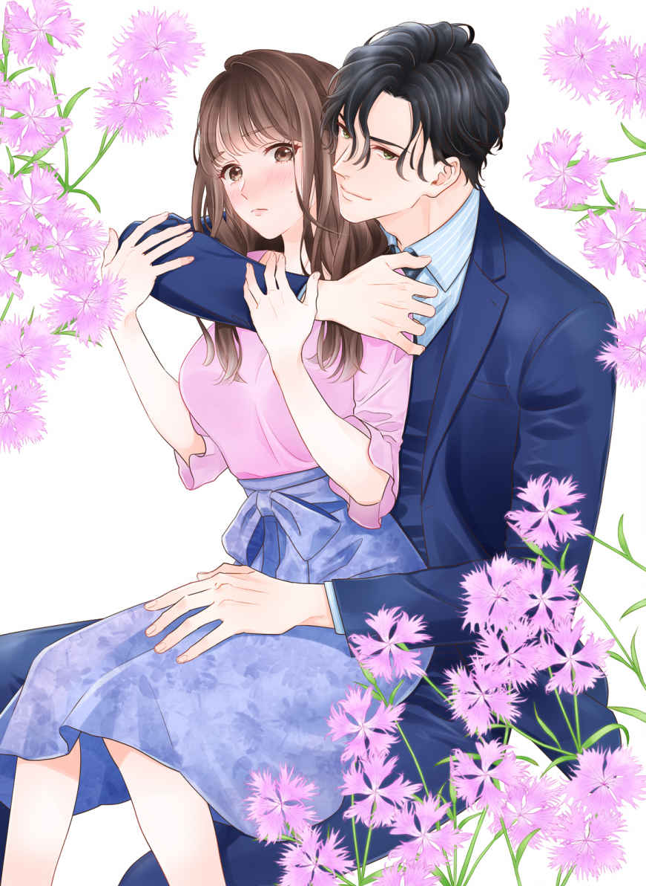
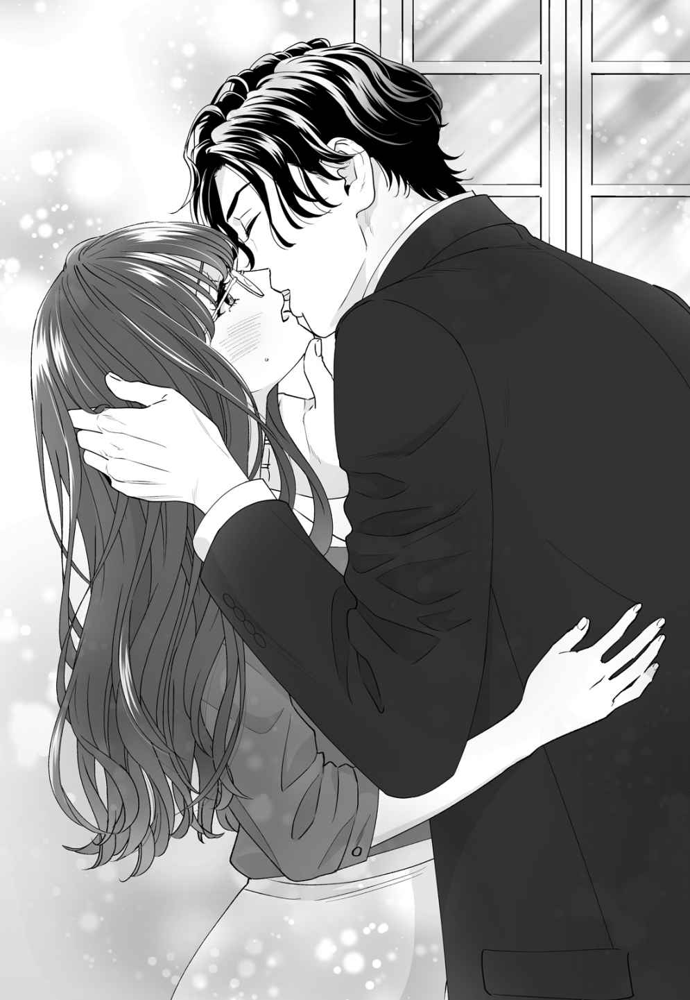
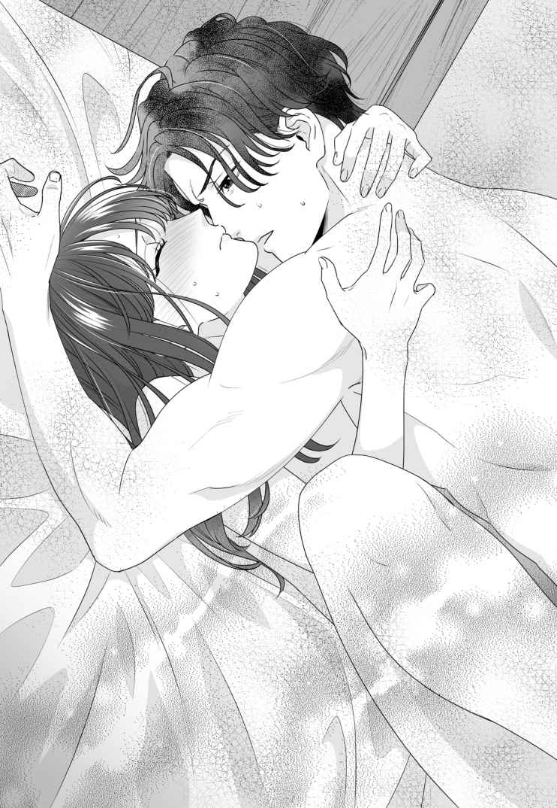
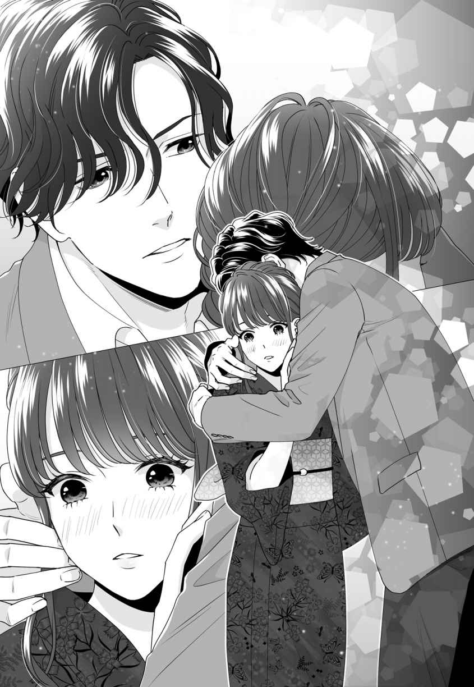
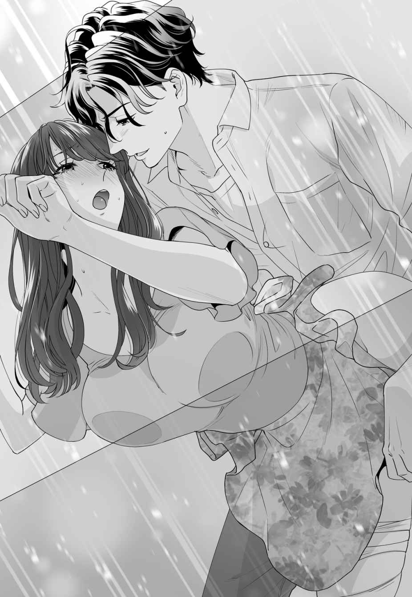

| 【全1-6セット】お前は俺のモノだろ？～俺様社長の独占溺愛～【イラスト付】 (チュールキス文庫) | |
| あさぎ千夜春 | |
| 株式会社ジュリアンパブリッシング (2019) | |

この作品はフィクションです。
実際の人物・団体・事件などに一切関係ありません。
「今すぐ、来いよ」
『今すぐ、来いよ』
スマホの通話ボタンを押すと同時に、耳もとから聞こえてきた男の艶のある低い声に、町田 日花里 の唇はへの字になった。
（またいきなり、そんなことを言って......）
電話の主は、かつては大学の先輩であり、今は上司で雇い主でもある藤堂 海 翔 だ。
海翔は一見ひどく傲慢で偉そうで、基本的に上から目線でしかないのだが、日花里にこの言葉を告げるときの彼は、その目にどこか甘えた空気を漂わせていて、『イエス』と言いたくなるような不思議な魅力があった。
なので十八の頃からずっと、日花里は海翔に『来いよ』と言われたら、基本的には『はい』と答えてきたのだが、今日の日花里には抵抗するべき理由がある。
「あのですね、そうは言われても私、まだ仕事が残ってるんですよね......」
ため息をつきキーボードを打つ手を止め、肩と頬でスマホを挟んだまま、周囲を見回した。
ここは渋 谷 のど真ん中にあるシブヤデジタルビル。ＩＴ関連の企業が多くはいっているフロアの二階にあたる。
『株式会社ＲＯＣＫ・ＦＬＯＯＲ』は、主に動画配信サービスと、ＶＲ関連のアプリ制作を行っている、最近右肩上がりに業績を伸ばしている会社だ。正社員は通勤と在宅を合わせて三十人、平均年齢は三十歳そこそこという若さで、そのほか十人ほどのアルバイトが在籍している。なお社内はフリーアドレスなので、各自思い思いの場所にＰＣを置いて仕事をするのが通例だ。
社員の半分はエンジニアで、一般的な事務作業は、日花里とあと三人の社員でこなしているのだが、今日は全員帰宅し残っているのは日花里だけ。その状況で、迎えに来いというのは、いくらなんでも弊社社長の発言として、どうかと思う。
『もう九時だぞ。残業なんかするなって、いつも言ってるだろう』
「それはそうなんですけど......」
残業するのは確かにまれだが、翌週に仕事をため込むのが嫌いな日花里は、金曜の夜は残業するくせがついている。それゆえに仕事を抱えすぎなところがあるのは、自覚していた。
「海翔さん、あのですね......」
『うだうだ言うな。そしてお前は俺のモノだ。拒否権はない』
電話の向こうでそうハッキリと言い切った海翔は、そのまま一方的に通話を終えてしまった。
「えっ、ウソッ......はああ......」
スマホをデスクに投げ出してため息をつくと、
「なに、海翔がまた我がままを言ってきたのか」
社内に数人残っている内の一人、斜め前に座っている怜 悧 な印象の男性が、ＰＣから顔を上げ、眉を顰 める。
黒のカットソーに黒ぶちの眼鏡。黒のパンツという全身を黒で包んだ男性は、このＲＯＣＫ・ＦＬＯＯＲ社の副社長兼営業部長、システムエンジニアの霧生 辰巳 という。年は海翔のひとつ上で三十二歳。海翔と二人三脚で立ち上げたＲＯＣＫ・ＦＬＯＯＲ社を運営している。存在自体が、活火山で燃えさかる炎のような藤堂海翔とはまったく逆の、どこかクールな印象を与える、この会社のナンバーツーだ。
「そうなんです......あっ、六本木 で飲んでるみたい......迎えに来いって」
日花里のスマホに海翔から住所を知らせるメッセージが届く。彼がいるのは、会員制のバーらしい。こうなると行かない場合のほうがずっと面倒だ。
（いつまでもああだこうだ、言われちゃうし......）
仕方ないと立ち上がると、霧生が頬杖をついて日花里を見あげてくる。
「残業はしなくていいというのは賛成だが、君の海翔に対する態度はどうだろう。言い方は悪いが、君がアレを日々つけあがらせているんじゃないか？」
「うっ......それを言われると少し胸が痛みます......すみません」
日花里は胸の上あたりを押さえて、目を伏せた。
「いや、別に君を責めてるわけじゃないんだがな。主にうちの社長のあの性格がな......」
霧生も眉のあたりを指で押さえる。彼には彼なりの苦労があるのだ。
藤堂海翔。仕事はできるが、横暴で上から目線で、俺様だ。口も悪い。だが日花里はどうしても、昔から彼の呼び出しを断れない。
「すみません、お先に失礼します！」
日花里は深々と頭を下げると、椅子の横に置いてあったバッグをつかみ、フロアを飛び出していた。
五月に入ったばかりだが、梅雨を迎える前に少し暑い日々が続いていた。翔が指定したバーは、ミッドタウンのすぐ側にあるビルの三階にあった。エレベーターの中でにじむ汗をハンカチで押さえながら、目的のバーへと向かう。そこはいわゆる会員制の隠れ家的な場所らしい。廊下の奥にドアが一枚ありそれ以外にはなにもない。
「ここだよね......」
日花里は店名すら書いていない木製のドアの前に立ち、海翔に電話を掛ける。
コール音が数回鳴ったのちに応答があった。
『俺だ。――ああ、わかった』
こちらは何も言っていないのに、一方的にペラペラと話されて通話が即座に切断される。
「わかった？」
どういうことだとスマホを持ったまま立ち尽くしていると、ドアの向こうから人の声が聞こえてきた。きゃあきゃあと高い女の声と「悪いね、仕事だから」という低い男の声の二重奏だ。
だがその男の声は間違いなく海翔のものである。
（仕事......？）
いったいなんのことだと思っていると、目の前でドアが開き中から左右の腕に女性をはべらせた海翔が姿を現した。三つ揃えのスーツの上着を乱暴につかみシャツにベスト姿という状態だが、長身で逞 しいので少々身だしなみが乱れたところで、かえって色っぽい雰囲気がある。
祖父がドイツ人だという海翔は、ちょうど日花里とは三十センチ差の百八十五センチの長身で、胸板も厚く手足も長い。艶 のある黒髪はかすかに波打っていて無造作風のパーマかと思われているが、地毛だった。耳周りはすっきりと短く前髪だけ少し長い。
その少し長めの前髪から覗 く瞳は明るい茶色だが、光の加減によっては緑がかって見えることもあって、その美しさに日花里はいつも、ドキッとしてしまうのだった。
「あの......」
日花里が口を開きかけた瞬間、
「これ、俺の秘書。遊んでるとどこまででも俺を追いかけてくる」
海翔がにこやかな笑顔をふりまきながら、腕をつかんでいる女性たちの手をやんわりとほどき、自由になった手で、日花里の肩にポンと手をのせた。
（えっ、秘書!? ）
海翔の手は大きく、華奢 な日花里の肩などすっぽりと包まれてしまう。熱い手のひらの感覚にまた心臓が跳ねるが、勝手に怖い秘書扱いされたことで、ここに呼ばれた理由がなんとなく想像がついた。
「ええーっ、秘書さん追いかけてくるなんて、やば～い！」
「金曜の夜に、信じられな～い！」
体にぴったりと張り付いたドレスを着た女の子たちは、じろじろと品定めをするように日花里を見つめる。
だが日花里は、こういう目線には慣れっこだった。そしてその後の反応もわかっている。
日本人形のようなちんまりとした目鼻立ちに色気のない眼鏡。そして胸の下まで届くまっすぐな髪は後ろでひとつにまとめている。さらに白のカットソーに黒のパンツスーツという、どこからどう見ても真面目一辺倒の日花里の姿を、彼女たちは同じ女だとは見なさないのだ。
さっと表情を切り替えたかと思ったら、
「藤堂さんにまた会いたい～」
目をキラキラと輝かせ海翔に正面から詰め寄っていった。
（やっぱり......こういうことね）
秘書が迎えに来たということにして海翔は飲みの席を抜け出したかったようだ。
（ならそれに合わせるしかないじゃない）
日花里は唇をきっとかみしめた後、隣の海翔をことさら厳しい目で睨 み上げつつ微 笑 んだ。
「社長。次の予定が迫っていますのでよろしいでしょうか？」
「ん、ああ。そうだな。急ごう」
海翔はニヤリと笑って意味もなく腕時計を見下ろすと、それから女ならだれもが見惚れるような華やかな笑顔を浮かべて踵 を返す。
「藤堂さん、きっとよ～！」
「私、一目ぼれなんだから～！」
そんな女性たちの黄色い声は、エレベーターの扉が閉まっても聞こえてきて、日花里はうんざりしてしまった。
「いつ私があなたの秘書になったんですか？」
「いつもなにも、お前は昔から俺の秘書みたいなもんだろ」
海翔は真顔でそう答えると、それから疲れたように、首と肩を回す。
「私はＲＯＣＫ・ＦＬＯＯＲ社の社員であって、あなたの秘書ではありません」
エレベーターはあっという間に一階に到着した。
きっぱりと返事をして、日花里はスタスタとビルを出る。
「なに怒ってるんだ？」
海翔に尋ねられて、日花里は確かに、自分はなぜ怒っているのだろうと一瞬考えたが、この苛立ちは、きっと彼の都合で予定を変えられたせいだ、そうに違いないと結論づける。
「怒ってませんよ。あと少しで仕事が片付いたのにって、思ってるだけです」
「だから、来週でもいいだろ。そんなの」
海翔はそう言って、大通りで立ち止まった。
「ふたりで飲みなおそうぜ」
「えっ!? 」
「いつものとこ」
振り返りながら微笑む海翔が、通りを行きかう車のヘッドライトに照らされる。まるで彼のためのスポットライトのように見えて日花里は言葉を失った。
ただ立っているだけなのに、肩越しに振り返っているだけなのに、この男はなにをしたって、絵になってしまう。
あれほどイライラしていた日花里の中で、怒りの気持ちがしゅるしゅると音を立てて、小さくなっていくのがわかる。
「――日花里？」
海翔が不思議そうに名前を呼ぶ。
「あ」
日花里は息を飲んだ。
（私、また馬鹿みたいにぼーっと見てた......）
こんなことを自分はあと何回、何百回、繰り返すのだろう。
彼に出会ってからずっと、日花里は行き場のない思いを抱えて胸の中に積み上げているのだ。
不毛だと思いながらも、その気持ちを振り払うように「それ、おごりですか？」と、わざとらしく上から尋ねた。
「おいおい。お前に払わせたことなんか、一度もないだろ」
海翔はクスッと笑って、正面を向き手を挙げる。
すぐにタクシーが徐行しながら近づいてきた。
「行こうぜ、日花里」
「――はい」
日花里はうなずく。
海翔に呼ばれたら、行かないわけにはいかないのだ。絶対に。
ふたりが向かった先はいつもの店――大学生時代からよく通った、下町の焼鳥屋だ。二人掛けの木製のテーブルが二つとカウンターがあるだけの小さな店だが、サラリーマンと、このあたりに住んでいる大学生でわりと繁盛している。
「やっぱここで飲むビールが一番だよな」
生ビールの重いジョッキを呷 るようにしてあっという間に飲み干した海翔は、お通しのキャベツをつまんでポリポリとかじる。ワイシャツの袖を少しだけまくりあげているが顔とスタイルが抜群にいいので、キャベツと色あせたポスターが貼ってある店内の背景が似合わない。彼の周りだけ外国のパブのようだ。
「さっきまで、高いお酒飲んでたんじゃないんですか？」
日花里もキャベツを箸でつまみ、ぽりぽりとかじる。
「ああ......確かに、あーだこーだ言ってたな。だけど俺からしたら、ワインの味なんかわかんねぇな。ほんとつまらん集まりだった」
海翔自ら行きたくて行ったわけではなく、少しばかり付き合いのある経営者から呼ばれての参加だったらしい。海翔を呼んだ方も、マスコミでなにかと話題になる海翔を呼んで女の子たちに自慢したかっただけなのだろう。
「でも、きれいでかわいい女の子たちがいたんでしょ？」
軽い嫌味のつもりだったのだが、そんなものは海翔に通用しない。
「きれいでかわいい？ あんなの、愛人希望の金目当ての女だ。本気にするのは時間の無駄だろ」
海翔は一蹴 して、額にかかる黒髪を無造作にかきあげた。
「豚バラでーす」
アルバイトの男の子がキャベツの上に豚バラの串を五本のせる。この店は博多 出身の夫婦がやっているので、お通しとしてキャベツが出てきて、その上に焼き鳥がのせられていくシステムなのだ。
「うまいよな、豚バラ。焼き鳥屋なのに豚バラって謎だけど。あ、生お代わり」
「かしこまりましたー......って、もしかしてお客さん、テレビに出てないですか？」
頭にタオルを巻いた男の子が、目を輝かせて海翔の顔を覗き込む。
だがそれを目ざとく発見したカウンターの中の大将が、
「こらっ、お客さんを詮索すんな！」
と一喝し、アルバイトは「すみません」と軽く頭を下げて空になったジョッキを下げて行った。
「最近テレビ、出てましたっけ？」
頭の中で、海翔のスケジュールを確認したが記憶にない。
「いやー......。たぶん、今イケてるＩＴ社長とかの特集じゃねぇの」
「ああ、なるほど......」
その手の番組や特集があれば海翔の顔は必ず出る。ああいうのは勝手に特集されるものでこっちは無関係だ。インタビューを受けることもないし訂正も否定もできない。
「相変わらず、仕事内容じゃなくてイケイケでモテてます、金持ちです、みたいな扱いがメインなんだよな。まぁ、モテるけど」
海翔ははあっとため息をついて豚バラを頬張った。
（モテるけど......か。でも、ほんとそうだよね。収入だって、この年の年齢のサラリーマンの、何倍もあるわけだし......）
海翔自身、実家が裕福なのでガツガツしていないのもある。その余裕が余計、彼を魅力的に魅せるのだろう。
日花里も「そうですね」と軽くため息をついて、ジョッキを持ち上げ口元に運んだ。
「お前だけだよ。昔から俺をそういう目で見ないの。まぁ、男嫌いだもんな？」
海翔がクスッと笑う。どうやら異性として見ないことを安心されているようだ。
「......そうでなくては勤められませんから」
日花里はそう言って、肩を竦 め焼き鳥の串を口に運んだ。
（男嫌い......かぁ......）
確かに日花里は一度も男性と付き合ったことがなく、男性経験もゼロである。そのことは海翔も昔からよく知っていた。海翔とは日花里が十八からの知り合いなのだ。
その昔――広島 から大学進学を機に上京してきた日花里は、持ち前の引っ込み思案と人見知りを発揮して大学に入学してから二週間経っても、友達がひとりもいなかった。そんな日々の中で日花里は殺人的に混んでいる通学電車で痴 漢 に遭遇した。
田舎ののんびりした町の出身で、痴漢がでるような満員電車に乗ったこともない日花里が、声一つ上げられず泣いていたところを助けてくれたのが、同じ大学に通う当時四年生の海翔だった。
海翔は痴漢を捕まえ、駅長室で話をし、警察に行った後も涙が止まらずベソベソと泣いている日花里を慰めてくれた。
『大丈夫だ。君は何も悪くない。俺が側についてる』
そう言ってくれた海翔の声も優しい目も、日花里はしっかりと覚えている。
そして温かいコーヒーをごちそうしてくれた海翔に、日花里は淡い恋心を抱いてしまったのだ。
彼は当時から人懐っこく誰にでもフレンドリーだった。田舎から出てきたばかりの日花里には、懐が深く、男らしく、優しかった海翔は、その外見も相まって王子様のように思えた。
だが海翔に誘われて、彼が主宰 しているボランティアサークルに入ってからしばらくして、日花里の恋は木 っ端 みじんに砕け散ってしまった。
藤堂海翔は女癖が悪かったのだ。
夏を迎える前、大学内外でなんと驚異の七股をかけていたことが発覚し、その女性陣が一堂に会し取っ組み合いの喧嘩になった。運よく日花里は授業中で、その女性たちの喧嘩を見ずに済んだのだが、その場に居合わせた同じ大学の院生だった霧生が、『あれは一生語りつがれる大立ち回りだった』と、思いだしては懐かしむレベルの大騒動だったらしい。
『マジで刺されるかと思った』というのは当時の海翔の談である。
（死なない程度に、刺されればよかったのに......チクッと......）
たまに日花里は、そんなことを思う。
結局海翔は、社会に出た今でも、派手な女性関係を改めることはなかった。新進気鋭のＩＴ企業の社長としてマスコミに顔を出すことがあるが、たいていモデルや女優と浮名を流しているゴシップでの出演だから手に負えない。結局誰一人長続きせず噂としていつの間にか消えているが、海翔はそういう男だ。
女遊びが激しい海翔と男嫌いの自分がこうやって一緒にいられるのは、ある意味日花里にとって奇跡のようなことだった。
（男嫌いだから海翔さんの側にいても彼の毒牙にはかからない。だから大丈夫......。そうだったらどれだけいいだろう......）
複雑な気持ちを押し殺して、日花里はジョッキを呷り、ビールのお代わりをした。
その後、焼き鳥屋の支払いは、いつものように海翔がしてくれた。
「なぁ、日花里」
「なんですか？」
店の外で待っていると、海翔が上着を肩にひっかけるようにして手に持ち、機嫌よく微笑みながら近づいてくる。
「お前んち、泊めて」
またかと思いながら日花里は首を振る。
「タクシー乗って帰ればいいじゃないですか」
「面倒なんだよ」
そして海翔は腕を伸ばし、日花里の肩を抱き寄せた。
「いつものことだろ」
「――もうっ......」
日花里はため息をついたが確かに彼の言うようにこれはいつものことだった。
学生の頃から海翔はいつも日花里を側に置いていた。さっさと一流商社の内定をとった彼は、例の七人の女の大立ち回りを反省したのか、表面上は誰とも付き合わずおとなしく過ごすようになった。そしてその隣にはいつも日花里がいた。といっても色っぽい関係ではない。
最初は『明日の朝、電話して起こして』という程度のささいな命令だったのが、夏が終わるころなりゆきで日花里の部屋に泊まるようになってからは、平気で『知らない女に付け回されてるから、お前のとこに今晩だけ避難させろ』というような無理難題を言ってきて、日花里を困らせ続けた。
まさか海翔と付き合い始めたのかと周囲からは何度も尋ねられたが、日花里は「そういうのではない」と否定し続けてきた。
誰も信じなかったが、それは本当だ。
実際、日花里は十八の頃から一度だって海翔に手を出されていない。これまで日花里の部屋に何十回も泊まっているのにもかかわらずだ。
霧生曰く、『他人の据え膳も食う男』が、目の前の日花里にそういうことは一切しない。
自分は彼にとって女ではないのだ。それは日花里にとって少し悲しい事実だった。
複雑だったが、それも仕方ないと自分を納得させて何年たつだろう。
それからずっと彼の口癖は『お前は俺のモノだろ？』で、確かに自分は海翔の便利な道具にすぎないのだと、早々に理解していた。
日花里の恋心は、海翔に出会った大学一年生の春からずっと止まっている。
「風呂サンキュー」
シャワーを浴びた海翔がタオルで髪を拭きながら姿を現した。
ゆったりとした厚手の半袖Ｔシャツにスウェットパンツという着替えは、過去、海翔が用意して、都度勝手に置いていっているものだ。
慣れた様子で冷蔵庫を開けてミネラルウォーターを取り出し、呷るようにしてゴクゴクと飲む。スタイルがいいので、そんな格好でお行儀の悪いことをしても妙に様になっているのがなんとも悔しい。
「コップ使ってくださいって、いつも言ってるじゃないですか」
海翔が脱ぎ捨てたスーツにブラシをかけていた日花里は一応怒って見せたのだが、
「残り少ないから、いいだろ」
海翔は笑ってすべてを飲み干すとペットボトル用のゴミ箱にそれを捨て、日花里のベッドに腰を下ろしてしまった。
「もう......」
「お前も風呂入れば？」
「入りますよ。だってここは私の部屋ですからね」
学生時代から住んでいる１ＤＫの部屋は、蚤 の市で買った名前も知らない画家の風景画や陶器、自分でペンキを塗りなおしたダイニングテーブルとイスなど日花里の好きなもので溢れている。そんな風景の中、藤堂海翔というひときわ大きな存在が自分のベッドに座っている様子はいつまでたっても見慣れない。
（この人って存在自体がゴージャスすぎるのよね......）
そんなことを考えながら日花里はバスルームへと向かいシャワーを浴びる。そして日花里もお風呂を出て海翔と同じように水を飲み、部屋に戻ると海翔がベッドの上に横たわってスマホを眺めている。まるで自分の部屋のようなくつろぎようだった。
「こっち来いよ」
そして日花里が入り口に立っているのを見て自分の隣をポンポンと叩く。
「来いよじゃないですよね。それ私のベッドですよね」
部屋の主のような態度に、日花里は呆れるが、
「なに言ってんだ。お前の就職祝いにこれを買ってやったのは俺だろ？」
ああいえばこういう海翔はさらりと批判をかわしてしまう。
「それは......そうですけど」
日花里は半ば呆れながらうなずいて、ワイドシングルのベッドのふちに腰を下ろした。
「でもまぁ、ワイドシングルでもまだ狭いよな」
「私一人には十分です」
大学生時代から数か月に一度のペースでこの部屋に泊まりにきていた海翔は、床に寝ることを良しとせず、日花里のベッドが狭いと文句を言いながら無理やり一緒に寝ていた。
そして日花里の就職祝いと称して、何の相談もなく、ある日突然ベッドを買い替えてしまった。
ちなみに半年後、入社したばかりの健康食品会社は突然倒産し日花里は路頭に迷うことになったのだが、その時もどこから噂を聞きつけたのか、海翔が連絡をしてきて結局彼が霧生と立ち上げたＲＯＣＫ・ＦＬＯＯＲ社に拾ってもらうことになる。常日頃から迷惑もかけられているが、日花里は人生の要所要所で、海翔に助けられているのだった。
「寝ようぜ......マジで眠い......」
海翔は大きなあくびをして日花里を自分の腕の中に引き寄せると、後ろから抱えるようにして抱きしめ、日花里の首筋に顔をうずめてしまった。
ふたりの身長差は三十センチで、そうやって抱きしめられると、海翔の腕の中にすっぽりと自分の体は閉じ込められてしまう。
「ほんとお前って......手触りがいいよな......」
海翔はそんなことをささやきながら、日花里の丸い肩を撫でてそのまま腕の上に手のひらを滑らせていく。肘を包み込むようにして撫でた後、二の腕の関節部分の内側を親指でなぞる仕草に、彼がただ自分の手触りを楽しんでいるだけだとわかっているが、日花里の心臓はドキドキして、口から飛び出しそうになる。
「ふにふにして、すべすべで、やーらかくて、気持ちいい......」
海翔のささやきが耳に触れる。もしかして唇が触れたかもしれない。
そして彼からもたらされるその一言だけで、日花里は全身に淡い電流が流されたような衝撃を受けてしまうのだ。
（は、は、早く、寝て......！）
それからしばらく、日花里は巣穴にこもる小さな野生動物のように息をひそめる。海翔という冬の嵐のような男を前にするとそうすることしかできなくなる。
おそらく時間にして、たった五分か十分程度のことだが、これをしないと寝ない海翔に日花里は毎回死ぬような思いをしているのだ。
それからしばらくして、背後からすうすうと規則正しい寝息が聞こえてくる。
（私は抱き枕か......）
ホッとしつつも日花里の胸は苦しくなった。
嫌なら嫌だと言えばいい。だが日花里にとって、海翔という存在はかなり特殊で複雑なのだ。
側にいるのは苦しいが離れられない。
日花里は今年二十七歳になるのだが、少し童顔で人より胸が大きかった。
大人しそうな顔だちとＧカップもあるバストのせいで男性によくからかわれた。昔から自分という存在がコンプレックスだったので、中学も高校も意識して男性を避けてきた。
正直に言えば本当に『男嫌い』だったのだ。
なのに恋をしたのがよりにもよってこの藤堂海翔だ。日花里自身、完全にこじらせてしまった自覚がある。
しかも彼は自分を女扱いしないので、気が付けば二十七になる年まで男性経験ゼロのピカピカの処女になってしまった。いっそのこと他の人に目を向ければいいのだが、海翔という存在が今の日花里には近すぎる。一緒に働くようになり学生の頃よりもずっと密度は濃くなり、日花里の思いは発散のしようもなく、ただ胸の奥底の箱に仕舞われて日の目を見ない。
いつかこの思いを忘れる日が来るのだろうか。
日花里はそんなことを思う。
「――ん......」
海翔が身じろぎをしながら日花里を抱く腕に力を込める。
彼の唇が微かに首筋に触れてドキッとしたが、それ以上なにも起こるはずがない。
本当に自分は彼にとってモノでしかないのだと思うと、少し苦しくなる。
（私ももう、寝よう......）
背中に海翔のぬくもりを感じながら日花里は目を閉じていた。
『......俺が側についてるから。安心して』
懐かしい夢を見ていた。そう、これは夢だ。わかっている。なぜなら過去、何度も繰り返し見てきた夢だからだ。
「うっ......ううっ......ひいっーくっ......」
十八歳の日花里は、嗚咽 を必死でこらえながらうなずいていた。
隣に座って日花里を心配そうに見つめているこの人は藤堂海翔と名乗った。
大きくてなにやらイケメンっぽいというだけで日花里からしたらおっかない存在なのだが、満員電車の中で人をかき分け助けに来てくれた上に、痴漢男を駅員に引き渡し駅の事務室から警察署までパトカーに乗って着いてきてくれた、とてもいい人だった。
しかもかれこれ二時間以上、彼は日花里に付き合ってくれている。もう感謝しかない。
だが事情聴取や被害届の提出などすべての手続きを終えて、気が抜けてしまった日花里は、警察署に置いてあるソファーに腰を下ろした瞬間、それまで以上に涙があふれて止まらなくなってしまった。
本当はこの藤堂海翔さんにお礼を言わなくてはいけないと思っていた。だがすべてが終わってしまうと気が抜けた。泣いている場合ではないとわかっていたが、自分の意志で涙が止められたら苦労はしない。
ひくひくと体を震わせしゃくりあげる日花里に、
「ハンカチ、ハンカチ......あった」
彼は持っていたトートバッグから薄いブルーのハンカチを取り出して、日花里の顔を覗き込んできた。
「涙、拭けるか？」
「ううっ......」
ハンカチを受け取ろうとしたが、手がプルプル震えて、受け取れない。
すると彼はクスッと笑って「俺は君を傷つけたりしないから」と念押しした上で、そっとハンカチで、日花里の頬の涙を押さえてくれたのだった。
「そんなに泣いたら、水分足りなくなるんじゃないか。カラカラに干からびるぞ」
少し冗談めかした口調だが、声色はまるで子供に言い聞かせるようでとても優しかった。
彼は日花里が落ち着くまで、警察署の隅のソファーで自分の話をしてくれた。
日花里と同じ大学だということ。経営学部の四年生だが入学早々休学してしまったので、今年二十三になるということ。猫よりも犬派。実家は千葉 なので、ひとり暮らしをしているのだが、弟がいてしょっちゅう遊びに来ること――。
それから読んでいた本の話になって、日花里は「私も、その本、好きです......」と言えて、ようやく気分が楽になったことに気が付いた。
借りたハンカチで残りの涙を自分で拭いて、日花里は海翔の顔をようやくちゃんと見上げることができた。
彫りの深い顔だちは、まるで漫画かアニメに出てくるヒーローのようだった。
（瞳が......お星様みたい......）
光の加減だろうか。ライトに照らされた彼の瞳はうすく緑がかって見える。
「あっ......あの......」
雰囲気や声からして相当なイケメンの雰囲気があるとうすうす感じていた日花里だが、こうなると余計緊張してしまう。
「ごっ、ごめんなさい、私......っ......」
見ず知らずの自分を助けていったいなんになるというのか。迷惑をかけてしまったことがとても申し訳なくなる。だが次の瞬間、海翔はハッキリと言いきったのだ。
「君はなにも悪くない」
「悪く......ない？」
それまで、自分が田舎者だから悪いのだと、なぜか自分を責める方向に意識が向いていた日花里にとって、それは目が覚める一言だった。
「悪いのは悪いことをしたやつだ。君にはなんの落ち度もない」
そして海翔は、にっこりと笑った。その笑顔は一本の矢に姿を変え、まっすぐに日花里のハートを打ち抜いて、そのまま深く、奥まで深く、日花里の中に突き刺さった。
これが日花里にとって、生まれて初めての恋の始まりだった。
（海翔さん、私......あなたが......）
あなたが――好き。
戸惑いながらのウィークデー
あなたが好き......。
「ん......」
カーテンの隙間から差し込む太陽の光で目を覚ますと海翔の姿はなかった。
「うーん......」
ベッドから体を起こし、ベッドサイドに置いてある置時計を見ると、朝の七時だった。
壁際の海翔が眠っていたあたりに手のひらを滑らせるとひんやりと冷たい。昨日あれほど主張していた彼のぬくもりはどこにもない。七時前に起きて出て行ったのだろう。彼が泊まっていった朝はいつもこうだ。絶対に日花里より早く起きて朝には姿を消してしまう。
こうなると一緒にベッドで眠ったことは自分の妄想だったのかと思いたくなるが、海翔はいつも置き土産を残す。
「またお金置いてる......」
今日はテーブルの上に置いてあった日花里の腕時計の下に、一万円札が挟まっていた。
これは海翔曰く『泊まり賃』らしい。シャワーと狭いベッドでたかだか四、五時間眠るだけで一万円は多すぎると思うのだが、仕方なく受け取っている。
本当は不規則な生活をしている海翔のために朝食くらい作ってあげたいし、コーヒーを一緒に飲むくらいのことはしたい。けれど海翔はそんな時間を自分と作って彼女面されたりするのが、嫌なのかもしれない。
そう思うとまた少しばかり切なくなる日花里だった。
日花里は自分のためだけにコーヒーを淹れて、部屋の観葉植物に水をやり洗濯や掃除を済ませたあとゴロンとベッドに横になった。
時計の針はお昼前を差していた。
（今日はいったいなにをして過ごそう......）
そんなことを考えながらすうっと息を吸うと、かすかに甘い香水のにおいがしてハッとした。海翔の匂いだ。昨晩は同じシャンプーやボディーソープを使ったはずだが、海翔自身に長く使っている香水の香りが染みついているのだろう。彼の残り香に、胸の奥がチリチリと焼ける。
「匂いを残すなんて、もう......」
日花里はため息をつき体を起こす。
海翔とは学年は三つしか変わらないのだが年は四つ違う。海翔は大学に入学してすぐ、いきなり一年休学して世界を旅していたらしい。なんでも彼の伯父が世界的なカメラマンでアシスタントをしていたのだとか。その一年の休学のせいで海翔は日花里の四つ年上なのだ。
そして卒業後は、誰もがうらやむ一流商社に就職したかと思ったら、『サラリーマンはつまらない』とたった半年で仕事を辞め、学生時代から霧生と一緒にやっていたというアプリ制作で起業し今では大成功を収めている。
「きっと思い通りにならないことなんて、ないんだろうな......」
日花里は笑ってシーツをはぎ、そのまま洗濯機に押し込んで洗うことにした。
ゴウンゴウンと音を立て回り始める洗濯機を眺めながら日花里は思う。
（私の心も、じゃぶじゃぶ洗って洗濯できたらいいのに）
最初に意識した男性が海翔でなければ、自分はこんな風にはならなかったのではないか。
気が付けば自分だって、アラサーといっていい歳になっている。このままではいけないと、なんとなく思ってもいるのだ。とはいえ仕事は楽しくやりがいもあるので、辞めるという選択肢はないのだが......。
そこでヘッドボードに置きっぱなしにしていたスマホが、ブルブルと震えてメッセージが届いたことを知らせる。
「はいはい......」
手にとって見てみれば、それは友人の森尾 真澄 からのものだった。
【今日、暇？】
真澄は日花里が入社して半年で倒産してしまった会社の同期で、現在は都内の百貨店に勤めている。学生時代に陸上をしていた彼女はすらりとしたスマートな体をしており、性格もさっぱりしていて付き合いやすい。日花里にとって東京で唯一の親しい友人でもあった。
【暇だよ。すっごく暇】
そう返すとすぐに電話がかかってきた。
『暇ならお茶でもしようよ。出てこれる？』
「うんいいよ。家のことは全部済ませてるし、いつでも出られる」
『おっけい。じゃあ、いつものところに一時間後～』
「わかった。またね」
電話を切って、日花里はいそいそと身支度を整え準備を始めた。
どうやら一日海翔のことを思ってため息をつく憂鬱 な休日を過ごさなくてもよさそうだ。
そう思ったのもつかの間――。二週間ぶりに会う真澄に、出会って早々「取引先の男子に告白された。彼氏ができそう。日花里は？」と言われて、日花里はカフェのソファーから床に崩れ落ちそうになった。
「できるわけないって、知ってるでしょ？」
「あはは......ごめんごめん」
ソファーの隣に座った真澄は、苦笑いしながら皿の上のクッキーをつまんで口に入れた。
ここは真澄と日花里が以前働いていた、入社半年でなくなった会社のすぐ側にあるカフェのチェーン店だ。入社してすぐに仲良くなったふたりは、仕事帰りによくここで愚痴 を言い合っていたのだが、お互い職場が変わった後も変わらない。
ここ半年は、真澄の『彼氏が欲しいが作り方がわからない』というテーマでよく冗談めいたことを話していたのだが、まさかの彼氏ができそう発言で日花里にお鉢がまわってきたようである。
「その......日花里は社長さんとは相変わらずなわけ？」
「相変わらずだよ。昨日もうちに泊まっていって」
日花里はこくりとうなずく。
「で、手も出さないの？」
「出すわけないじゃない。起きたらもういなかったし、一万円置いてあった」
一万円はとりあえず封筒に入れてクローゼットの中に仕舞っている。
「いつも思うけど、なんでそのお金でタクシーに乗って帰らないの？ 金持ちの考えることって、意味が分かんないわ」
真澄は至極まじめな顔でそう言うと、実に堂々とした手つきで日花里の胸の質量を確かめるように胸の下に手を入れてきた。
「しかもこんな美しいＧカップが目の前にあるのに、手を出さないなんて......」
「もーっ......確かめなくていいから」
日花里は手を振り払いつつ慌てて辺りを見回した。だがビジネス街の土曜日のカフェは、平日程混んでいない。女同士で胸を触っているところなど誰も見ていない。
「だって......ふっかふかなんだもん......この弾力......重力......まんまるな形......すべてが完璧。理想のおっぱい。ほんと羨ましすぎて......はぁ」
真澄は元々長距離ランナーのためかなり痩 せており、日花里とは逆の意味で胸がコンプレックスなのだ。自分の両手のひらで胸を押さえた後、小ぶり具合を実感したのか、深いため息をついて、それからすらりと長い足を組んだ。
「てかさ、こうなったらいっそ告白してみたら？ すっきりするかも」
「それは嫌。わざわざ玉砕して傷ついて、仕事まで失いたくない」
海翔のメンタリティからして、日花里が真面目に告白したところで「それは驚いた」くらい言いそうなものだがおそらくそれだけだ。気まずいのは自分だけで、すぐに会社に居づらくなるに決まっている。
「......確かに」
「でしょ？」
日花里は真面目な顔で神妙にうなずく真澄を見つめた。
「私たち、新卒で入った会社がすぐ倒産して無職になってすごく困ったじゃない。そんなに貯金もなかったし。だから、私が無職だって知ってすぐに拾ってくれた海翔さんには感謝してるの。それに仕事自体は好きだし。お給料もいいし、人間関係も悪くないし」
「そっか。そうだよね。それは辞める理由はないわ」
真澄はうんうんとうなずいて、「告白はなしか」と残念そうにつぶやいた。
「じゃあせめて、彼氏くらい作ったら？ 別に社長さんに匹敵するような人じゃなくていいからさ。一緒にいて気が安らいで、楽しく話ができるような、そんな相手を探したらいいじゃない」
「そうはいいますけどね。モテる真澄と違って私はさっぱりなんだから......全然女っぽくないし」
これだから告白された人は困ると思った日花里だが、真澄はウフフと笑ってバッグからスマホを取り出した。
「うーん。前々から思ってたけど、日花里はまず意識改革が必要ね」
そしていきなりパシャリと写真を撮られてしまった。
「え、なに？」
目をぱちくりさせる日花里に、さらに真澄は指示を出す。
「ちょっと立って。背筋を伸ばしてね」
「うん......？」
不思議に思いながら立ち上がると今度は全身像を撮られてしまった。
真澄は撮った写真を見てにっこりと笑う。
「実はね、来月うちの百貨店で、イベントをやる予定なんだけどさ。日花里にはその練習台になってほしいの」
「練習？」
彼氏を作れという発言からの練習台への流れに、意味が分からない日花里は首をかしげる。
「メイクから髪型、ネイル、ファッションまで、全部こっちでトータルコーディネートするイベントなの。当日飛び入り参加でお客様を集める予定なんだけど、さすがにぶっつけ本番はヤバいでしょ。だから各フロアでちょいちょい練習してるのよね。勿論、サービスとしてお得に提供させていただきますよ」
「ああ......そういうことね」
ようやく真澄の言いたいことがわかった日花里はこっくりとうなずいた。
「でも私でいいの？」
「全然いいわよ。何度も言うけど、日花里はやる気がゼロなだけで磨けば光る素材だし」
「そうかなぁ......」
磨けば光ると言われてもまったくピンと来ない。日花里は苦笑するしかない。
田舎から東京に出てきて海翔に出会ってからずっと、日花里には海翔だけだった。
四つ年上で、学生の頃から付き合う相手が飛びぬけて美女ばかりの海翔なので、着飾ったところで、自分を女として見てもらえる気がしない。それに日花里はビジネスマナーとして清潔感のある格好を心がけているが、女性として着飾った記憶がほとんどない。
「でも私が今さら女っぽい恰好をしても、変じゃない？」
「なに言ってんの変じゃないよ。いいから真澄さんにまかせなさいっ！」
真澄はワハハと朗 らかに笑いながら胸を張る。
（本当に大丈夫かな......）
不安がないわけではないのだが、真澄が自分のことを思って言ってくれるのは事実だ。
彼氏云々 は別にしてもその気持ちは嬉しかった。
そして真澄の指示により日花里は月曜日から金曜日までの五日間、午前中は、彼女の勤める百貨店に通うことになった。ＲＯＣＫ・ＦＬＯＯＲ社ではフレックス制も導入しているので、午後から出勤でもまったく問題ない。
「おはようございます」
いつも通り出勤して、ロッカーから自分専用のノートパソコンやアナログの手帳などの仕事道具一式を取り出し適当に空いた席に座る。
「おっす、おはよう」
「おはよう～」
社員たちが口々に挨拶 を返すが、ちょうどお昼どきだったせいか、社内にはあまり人がいなかった。さっそくＰＣを開き朝からどんどん届いているメールをチェックしていると、しばらくして、斜め前の席に座っていた川端 佐紀 が目を輝かせて立ち上がった。
「日花里さん、それどうしたんですかっ？」
「えっ」
「それですよ、ネイル～！ ちょっと見せてください！」
「あっ......ああ、うん」
日花里は目を丸くしながら、キーボードを打つ手を止めて、両手を伸ばして差し出した。
「わ～。きれいなジェルネイル～。あわーいピンクなんですね。シンプルだけど似合ってますよ。可愛いな～」
佐紀は日花里の手をとって、まじまじと爪先を眺める。
彼女は今年入ったばかりの二十二歳で、日花里と同じ事務を担当している正社員だ。ロックとパンクを愛していると公言する彼女の耳には、びっしりとピアスがついていて、髪はインナーカラーにピンクを入れた、かなり明るい金髪である。だが服務規程など一切ないＲＯＣＫ・ＦＬＯＯＲでは、どんな格好、髪型をしようと自由だ。仕事さえできれば査定にも一切関係ない。
「ありがとう。本当にきれいだよね」
おしゃれな彼女に褒められると少しくすぐったくもある。
日花里は妙に照れ臭くなりながら、うなずいた。
彼女の言うとおり、百貨店の中にあるネイルサロンで、ピンクベージュのジェルネイルをしてもらったのだ。いきなり見た目を変えると日花里自身が戸惑うだろうと、まず人に気づかれにくい爪からきれいにとアドバイスをもらった。
「でも、気づかれるとは思わなかったな。びっくりしちゃった」
「そりゃわかりますよ。日花里さん、何回か手元見て、ニコニコしてたし」
「ええっ......？ そっか......あはは」
確かにジェルネイルをしてもらってから出社するまでの間、つり革を持つときや何気ないときに、爪をまじまじと眺めてしまった自覚はある。
「なんだか恥ずかしいな......」
今さら女らしいことを楽しんでいるとを見抜かれた気がして顔が赤くなる。
「なに言ってるんですか。堂々としときましょうよ。そのくらいの楽しみあっていいでしょ」
佐紀はあっさりとそう言い放つ。
「そっか......」
日花里は軽くうなずいて、また自分の手元を見下ろした。
（そうだよね......今さらってことはないのかも）
美しく形を整えられた指先がとたんに宝物のように見えた気がした。
そんなこんなで、日花里の一週間、自分磨き計画は始まった。
月曜日はネイル、火曜日はカラー診断と骨格診断を受け、水曜日に診断結果をもとに、真澄とフロアのあちこちをまわり、服と靴、バッグを選んだ。木曜日には百貨店の中の美容室で髪を切り、軽くパーマをかけてカラーを入れた。
日が当たると少し明るく見える程度だが、髪型が変わるというのは日花里にとって一大事だ。
生まれてこの方、基本的にずっとまっすぐの黒髪で染めたことすらなかった。
なので、多少すかれて緩いウェーブを掛けられただけでもなんだか無性に恥ずかしく、会社にはゴムでまとめて出勤していた。
海翔が出勤していたら何か言われたかもしれない。だがこの数日は、運よく出張中で日花里は無事こっそりと自分変身計画を、遂行することができたのだ。
そして金曜日の今日、日花里は満を持して化粧品カウンターでメイクをしてもらった。
普段薄化粧で、ほとんど見た目が変わらない日花里にとって、これが一番の大冒険でもある。
しかも眼鏡を外しているので、よく自分の顔がわからない。
「――うん、大成功だわ！」
フルメイク済みの日花里を見て、カウンターでパシャパシャと写真を撮っていた真澄はニコニコと笑顔になる。メイクを担当した美容部員も「ほんっっっとうに可愛らしいですよ！」と、強く励ましてくれた。
「ほんとに......？」
「ほんとほんと。さて、昨日買ってもらった服と靴、バッグを売り場から持ってきたから、これに着替えるのよ。あ、眼鏡はナシね」
「う、うん......」
一応、使い捨てのコンタクトも持っているので、見えなければつけようと思っていたのだが、こうなると自分がどんな顔をしているかなんて知らないほうがいいような気がしてきた。
（もう今日一日、裸眼でいいや......）
そんなことを思いながら、日花里は真澄から荷物を受け取り、真澄と一緒にパウダールームへと向かった。だがいざ着替えるとなると足取りが重くなる。なにしろ二十七年間、目を逸らし続けてきたおしゃれだ。
（会社の人に笑われたら、どうしよう......いやうちの職場にそんな失礼な人はいないけども......！ でも、海翔さんはそんな人な気がするし......！ なにかマイナスっぽいことを言われたら、立ち直れないよ！）
更衣室の前で日花里の眉は八の字になってしまった。
「ねぇ、あれ、似合うと思う？」
試着までしたはずなのになんだか似合わない気がしてきた。しょぼんとしながら尋ねると、真澄は仁王立ちで日花里を見つめたまましっかりと答える。
「そんなことない。似合います。プロが選んだんだから安心して」
「でも......」
「いいから入って」
「あっ......」
強引に背中を押され更衣室へと入れられてしまった。
「フェイスカバーそこにあるからね。出たら髪をセットするから」
「うん......」
少し迷ったがここで立ち尽くしても仕方ない。もう後戻りはできないのだ。えいやっと気合を入れてパンツスーツを脱いだ。そしてフェイスカバーをかぶると、あとは勢いをつけて新しい服に袖を通していく。
（そうよ、海翔さんに笑われたっていいじゃない。いや、よくないけど、真澄がこうやって綺麗にしてくれたんだから、そのことは自分にとってプラスだったし！）
真澄がいなければ、ネイルサロンに行くこともなかったし髪型を変えることもなかった。
海翔に複雑な気持ちを抱えたまま年だけ重ねていたに違いないのだ。
（だからこれは全然悪いことじゃないの！）
そう自分に言い聞かせつつ、
「はいっ、できました！」
カーテンを勢いよく開けて日花里は胸を張った。少しやけっぱちに見えたかもしれない。
だが真澄は目を輝かせ嬉しそうに声を上げた。
「やっぱりいいじゃない！ すっごい似合ってる！」
数日前に売り場で選んだ服は、上品なモカのスキッパーシャツにウエストの位置が高めの白のタイトスカートだった。胸が大きく童顔であることがコンプレックスな日花里は、似合わないし入らないと言う理由で、基本的にシャツという存在から目を逸らしていた。だがボタンのないスキッパーシャツならわりと選べることが分かったのだ。
「胸がある人は、細いところ、ウエストを強調すると太って見えないのよ」
「大人っぽいよね......！」
自分が着るものではないと思っていたタイトスカートだが、こうやって着てみるとちゃんと普通に大人の女性に見える。今まで自分がコンプレックスを克服しようという努力を怠 ってきたのか、改めて思い知らされる日花里だった。
「まぁ、実際、ちゃーんと大人だからね」
真澄はウフフと笑いながら、足元にネイビーのパンプスを置いた。
「さ、どうぞ」
「うん」
ヒールの高さは五センチでそれほど高くない。おそるおそる足を入れるとそのまま鏡の前に誘導される。
「髪を巻いてあげるから、ここ座って」
真澄は私物らしいヘアアイロンをバッグから取り出し、温めると手際よく巻き始める。
「日花里は器用だからすぐ覚えられると思うけど。なんだったら寝る前に巻くだけでもいいしね。パーマかかってるからやりやすいと思うよ」
「う、うん......わかった。今度動画見て練習してみる」
そういうところは、根が真面目な日花里である。
それにクルクルと自分の髪が綺麗に巻かれて揺れるのを見るのはなかなか楽しい。気が付けばあっという間に緩い巻き髪が出来上がっていた。
「完璧だわ」
心底満足した様子で、真澄は後ろから日花里の肩に手をのせ微笑んだ。
「真澄、本当にありがとう」
その笑顔に日花里もほっこりした気分になる。
最初はこれでなにが変わるのかと思っていたが、少なくとも自分の中で、多少意識は変わったように思う。
「ううん、いいのよ。で、今日夕方から合コンセッティングしてあるからね。会社に迎えに行くからヨロしく」
「――はい？」
一瞬何を言われたのかわからなかった。日花里は目を丸くして、相変わらず鏡の中でニコニコと笑っている真澄を見つめる。
「今、なんて？」
「会社に迎えに行く」
「その前！」
「合コンセッティングした」
「は......はぁ!? 」
やはり空耳ではなかったようだ。今日の夜というのなら、事前にすでに決めていたはずだ。だが合コンをするとは一度も聞いていない。
「なんでそういうの今言うわけ？」
慌てて体ごと振り返ると、真澄はわざとらしく肩を竦めて軽々しく口笛を吹いた。
「だってせっかくきれいにしたんだから成果を見たいじゃない？」
「成果って......で、でも、真澄の彼氏はどうするの？」
彼氏ができそうと言っていたのは真澄である。
「うん、その彼氏君が職場の人連れてきてくれるってわけ。男女それぞれの幹事よ」
「......なるほど」
「効率的でしょ。きれいになって出会いの場で新しい男を見つける」
「はぁ......」
もっともらしいことを言われたがどうやら最初から予定は決まっていたらしい。まったく気づかなかった自分に少し呆れると同時に肩から力が抜けた。
「髪とかメイクは、またあとできれいにしてあげるから、安心して」
ビシッと親指を立てられて言い返す気力も湧いてこない。
なんにしても真澄は自分のためを思ってやってくれているのだ。ずっと男性を苦手にしてきた日花里だが、このままではよくないことも自分ではわかっている。
「わかった......」
力なくではあるが、うなずく日花里を見て真澄はパッと笑顔になった。
「うんうん、楽しみだね！ あの社長さんのことは、とりあえずいったん忘れて、楽しくやろうよ」
「うん」
その場にいてもいなくてもなかなか忘れることができない。それが藤堂海翔という男なのだが、日花里が真澄の友情に感謝の気持ちを抱いたのは本当だ。せっかくきれいにしてもらえたのだから素直に従ってみよう。日花里は真面目にうなずいたのだった。
オフィスへはエレベーターを使わず階段が基本だが、今日はエレベーターを使うことにした。エントランスを横切ってエレベーターの前までゆっくりと歩く。
（タイトスカートって、ちょっと歩きにくいんだなぁ......）
いつもはパンツスーツでガシガシと歩いているので優雅さとはかけ離れているのだが、今日は違う。自然と足取りも丁寧になる。
ちょうどエレベーターの前には佐紀が立っていた。両手にペットボトルとお菓子が入ったビニール袋を持っているので買い出しに行っていたのかもしれない。
「佐紀ちゃん、おはよう」
隣に並んで声を掛けると、
「おはようござぁ――。うん？」
挨拶もそこそこにして、ぐいっと顔を近づけてきた。
そしてじいっと食い入るように日花里の顔を見つめ、ようやく気が付いたようだ。
「えっ......もしかして日花里さんっ!? 」
「も、もしかしてってそんな......私だよ」
眼鏡を外しているから別人のように見えるのだろうか。日花里はクスクスと笑いながら彼女の手元を見つめる。
「よかったらお菓子の方、持とうか？」
両手がふさがっていたらなにかと不便だろうと思いそう問いかけたのだが、それを聞いて佐紀は大げさに背中をのけぞらせる。
「うわっ、その気遣いマジで日花里さんだ！ ひえーっ！」
そこでエレベーターのドアが開いた。
「ほら、開いたよ」
「なんでそんな落ち着いてるの！」
佐紀は意味が分からないと言わんばかりにブルブルと震えたが、後ろからやってきた他のフロアの社員と一緒にエレベーターの中へと乗り込んだ。オフィスは二階なので入り口付近に避 けてふたりで並ぶ。
「ってか日花里さん、なんでそんなにきれいになっちゃったんです？ その服もめっちゃ似合ってる。セクシーでキュートですよ～。メイクもナチュラルなのにちゃんとメリハリあって、そうっ、わかった！ 女子アナみたいなんですよ！」
女子アナに例えられるというまさかの大絶賛に、日花里は赤面してしまった。
「いや、そんな......ほら、爪してもらってたでしょ。あれからカラー診断と骨格診断っていうの受けて、髪を切ったり、ちょっと染めたりして、その......あとは、メイクの力......なんだと思う......」
日花里はしどろもどろに答える。
「いやいや、そりゃメイクもすごいけど......こうやってみると、素材がいいんだなぁ......。そっかぁ、日花里さんものすごいポテンシャルの持ち主だったんですね。びっくりですわ」
「ポテンシャルって、大げさな......」
「いやいや、マジで。っていうかびっくりした。これはすごい。なんていうかあたし、感動しました！」
なぜか感動までされている。さすがに褒められすぎで恥ずかしい。
しかも、あまりにも佐紀が絶賛しているのでエレベーターに乗っているほかの男性から、なんとなくチラチラと見られているような気がする。
（きっと、たいしたことないブスが持ち上げられてると思われている......！）
こうなるとモテた記憶ゼロの日花里は、いたたまれなくなってしまう。一刻も早くこの場から立ち去りたくて仕方なくなってしまった。
「もう......ほめ過ぎだよ。そろそろやめようか」
笑ってごまかしているとエレベーターが二階へと到着する。
「着いたよ、降りよう」
「あ、はーい」
日花里は先陣を切ってエレベーターを降りたのだが、エレベーターの前には背が高く逞しい男性がひとり立っていた。ぶつかると思った日花里は、とっさに避けようと方向転換しようとして、足をもつれさせてしまった。
「きゃっ......！」
（転ぶ......！）
とっさに目をつぶった日花里だが、体のどこも打ち付けなかった。
それどころか、ふわりといい匂いに包まれて日花里は目をパチパチさせてしまった。
「大丈夫ですか？」
頭上から低くていい声が響く。
顔をあげるとなんと海翔である。転びかけた日花里の体を抱きとめてくれたらしい。
「あ......」
「あっ、社長！」
佐紀が背後から顔をひょっこりと覗かせて、驚いたように近づいてきた。
「おう、川端。俺、ちょっと上の会議室行ってくるから。では失礼」
海翔は丁寧に日花里から手を離すと、呆然としている日花里ににっこりと微笑んでエレベーターに乗り込む。シブヤデジタルビルには、上層階にどの会社でも使えるフリーの会議室などが完備されている。出張から帰ってきたばかりだが、きっと今から、打ち合わせがあるのだろう。
「はい、行ってらっしゃーい」
佐紀はひらひらと手を振り、そんな海翔を見送ったのだが。エレベーターの扉が閉まると、不思議そうに、日花里を見つめた。
「もしかして社長、今の日花里さんって気づいてなかった感じ？」
「――えっ？」
「だって、失礼って......めっちゃ紳士っぽかったですよ。ありえなくないです？」
「確かに......。いつもの海翔さんなら、『お前、スッ転んでも、怪我とかしないだろ。まん丸だし』とか、言いそうなものなのに......」
なのに海翔は日花里に向かって「失礼」と言って、微笑んだのだ。
佐紀の指摘に、日花里はうなずいた。
「そう考えると、結構ひどいですね、社長って」
「でも当たらずも遠からずだと思わない？」
「はい。さすが日花里さんです。社長のこと、よくわかってますよね」
ビシッと親指を立てる佐紀と一緒に、日花里は笑いながら、オフィスへと向かったのだが――。
（えっ......でも、気づかなかったって、そんなことある!? ）
実際は、地味にショックを受けていたのだった。
たとえ女性だと思われてなくても、海翔と自分には、深い繋がり、結びつきがあると思っていた。それは海翔と霧生のような深い友情からのビジネスパートナーとしての関係とはまた違う、自分と海翔だけの絆 だ。
男だから女だからというわけではなく、人と人の関係において強く結ばれたものだと思っていた。
日花里は、いつものようにロッカーを開けて自分用のパソコンと手帳などの仕事道具を取り出し、皆から離れて空いた席に座る。
自分がオフィスに姿を見せた時、社内がどよめいたことなどまったく気づかずに。
（海翔さん......）
手帳を開いてカバーを外し、中から写真を取り出す。
写真の中には、赤いゼラニウムが満開に咲いていた。
この写真をもらった日のことを、日花里はずっと忘れていない。
あなたにあげる
それは今から八年前。大学一年生のときのこと――。
日花里はぼんやりとベッドに寝ころんで、今日という一日を終えようとしていた。
「ハッピーバースデー......海翔さん......」
海翔の誕生日は真夏だった。
正確に言えば、今日、八月三十一日だ。あと一時間程度で誕生日が終わってしまう。
つい先日、冗談めかして「お前は俺になにくれるの？」と海翔に尋ねられ、そこで彼の誕生日を知ったのだが、その時は彼に渡せるプレゼントなどなにも思い付かなかった。
そしてそもそも今は夏休み中で海翔に会えるはずもない。
（なのに、なにをくれるのかと言われて、ずっと考えている......不毛だよね）
目を閉じれば海翔の顔がまぶたの裏に浮かぶ。
日花里はベッドの上で、枕を抱えてゴロゴロと転がった。
「でも別に私、海翔さんのことそこまで本気じゃなかったし......だから、それほど傷ついてないし......」
そうやってしつこいくらい自分に言い聞かせるのは、つい二か月ほど前、夏が始まる前に海翔の女癖の悪さが招いた大立ち回りの件を耳にして恋心が砕け散ったからだ。春に芽生えた恋心が、夏を迎える前に消えたのだからあっという間だ。ある意味傷は浅いと言える。
だが、生まれて初めて異性を本気で好きになりかけていたのは事実だった。
春先、彼のサークルに誘われるがまま入ったのはいいのだが、海翔は常に人の輪の真ん中にいる人だということに気が付いた。
自分とは住む世界が違うと思ったが、ひとりでベンチでお弁当を食べていると隣に座ってきたり、図書館で本を読んでいると気が付けば斜め前に海翔がいたり、海翔はなにかと日花里のことを気にかけてくれた。
海翔がなぜ自分の側にいてくれたのか最初はわからなかったが、きっと自分とは違い過ぎる日花里を心配してくれていたのだろう。そうやって構われている内に、日花里は海翔への恋心を強くして胸を切なくしていたのだが、海翔の七人の女たちが大暴れしたことで失恋が確定し、自分とは世界が違い過ぎる人だと、思い知らされたのだった。
夏休みで海翔の顔を見なくて済むのは逆に助かったはずだ。
（会わなければ、すぐに忘れるに決まってる......）
そう思っていたのに、それまでなにかと海翔に構われていた日花里は、すぐに寂しくなってしまった。
だが海翔は早々に内定をもらい自由の身だ。夏休みを利用して海外の親戚の家に行っている。戻るのはいつかと尋ねたら「さあ。もしかしたら、帰ってこないかもしれないな」と冗談ぽく言われて、またショックを受けたことを昨日のことのように覚えていた。
「はぁ......不毛すぎる」
日花里は深いため息をつきムクッと起き上がった。
「コンビニにアイス買いに行こう......」
マンションを出て最寄りのコンビニまで徒歩三分だ。通りは明るく駅近くのため人通りも多い。深夜に外出するのもそう身構える必要はない。パジャマ代わりのタンクトップとコットンのショートパンツの上に薄手のオーバーサイズのパーカーを羽織り、ポケットに小銭入れを入れて部屋の外に出た。冷えた室内とは違い、むわっとした熱気に、とたんに汗をかき始める。
「あっつ......」
今年は残暑が厳しいとテレビのニュースで言っていたことを思いだす。
あと数週間は暑いと思うとうんざりする。コンビニに入って冷凍庫を眺めながら、どれにしようかと迷っていると、背後からぬっと手が伸びてきてケースを開けた。
「あ、すみません」
邪魔になっていたのだと慌てて横にずれたら「どういたしまして」と、軽く笑われた。
（どこかで聞いた声......）
「――あっ」
その原因を発見して日花里は息が止まりそうになった。
なんと隣に大きなリュックを背負った海翔が立っていたのだ。
一瞬、幻を見ているのかと思った。
「なな、なんでここに!? 」
激しく動揺する日花里をよそに、
「さっき帰国したとこ」
海翔はさらっとした様子で答える。
着古したジーンズに黒いＴシャツ。ブルーのスニーカーに大きなリュックを背負っているだけだがものすごくカッコいい。彼を見ると生まれ持った素材の絶対的な違いをまざまざと見せつけられる気がする。
「あ、そうなんですか......」
うなずきながらも日花里は不思議だった。海翔のマンションは都心の便利なところにあり、こことはだいぶ離れているはずだ。
「なんでここに？」
「お前んとこに泊めてもらおうと思って」
「――はい？」
「いや今、俺のマンションの部屋は友達に貸しててさ。帰ったら間違いなく騒々しいから静かに違いないお前の家に泊めてもらおうと」
「――」
日花里は真顔で、首をかしげる。本当に言葉が出てこないのだ。
「なんだよ、そのポカンとした顔は」
海翔はククッとのどを鳴らすように笑って、それから手に持っていたカゴに適当にアイスクリームをいくつか放り込み「さぁ、行こうぜ」と顔を近づけた。
「ちょっ......本当にうちに？」
支払いを済ませて、コンビニを出て行く海翔のあとを追いかける。
「ああ」
「っていうか、いないとは思わなかったんですか？」
「全然」
あっさりと海翔は首を振った。
「だってお前、先月俺がサークルの飲み会のあとに送って行った時に、休みはいつも部屋でゴロゴロしてます、めったに出かけませんって言ってたろ」
「うっ......」
図星が胸に痛い。
確かにそう言った。あの時、海翔にマンションの下まで送ってもらう時にそんなことを口にした記憶がある。未成年の日花里は一滴も飲んでいないのに、雰囲気に酔ってしまったのか、口にしなくてもいいことをしきりに口にした。
（そういえば彼氏いたことないとか、男性は苦手とか、そんなことまで......うっ......記憶を消したい......！）
落ち込む日花里をよそに、海翔は機嫌よくアイスが入った袋を持ち上げた。
「んで、電話する前にアイス買っていこうと思ったんだよな」
「なんでアイス？」
「溶けるからって言えば、仕方なく部屋に入れてくれるだろ」
確かにそう言われたら部屋に招き入れてしまう自信がある。
日花里はとにかく押しに弱いのだ。
（私、海翔さんにもうすべての手の内が読まれてそう......）
本当にこの男にはかなわない気がする。情けなくなりながら日花里はため息をついた。
「おじゃまします」
海翔は階段を駆け上がり慣れた様子で二階の１ＤＫの部屋に入っていくと、リュックを玄関先に置いて、振り返った。
「さっそくだけど、シャワー貸して」
「はぁ？」
「べたべたなんだよ。あ、着替えはあるから気にするな。アイスは俺の分、冷凍庫に仕舞っといて」
海翔は笑ってリュックからビニール袋を取り出すと、そのまま勝手にバスルームへと入っていってしまった。
（ひ......ひえええ......！）
日花里はオロオロしながら、その場に呆然と立ち尽くしていたが、
「あ、アイス......」
生真面目に言われたことを思いだし、床に置きっぱなしのコンビニの袋を持ち上げ、中に入っているアイスクリームをすべて冷凍庫に入れた。最初は食べる気でコンビニに行ったのだが胸がいっぱいで、とても喉を通る気がしなかった。
（海翔さんが、うちに......泊まるって......！）
日花里の大きな胸の奥の心臓が激しく鼓動を打っている。
「うう......嘘でしょ！ 緊張する......！」
毎日、諦めようとしても完全に忘れることができない男が自分の部屋に泊まるのだ。
日花里は脱力して冷蔵庫の前にぺたりと座り込んでしまった。
だがこうやって心臓をバクバクさせてるのは自分だけで、海翔はその言葉の通り『静かな部屋で寝たいから、泊めて』以外のなにものでもないはずだ。
（そうよね。海翔さんが相手にする女の子ってみんなモデル級だって言ってたし......）
海翔が自分を側に置くのは安全だからだ。男性が苦手だから海翔を好きになったりせず、彼を好きな女たち同士でもめたりしない。そんな手軽さから自分と一緒にいることを選んだはずだ。
この状況だって勘違いしてはいけない。
（っていうかもしかして海翔さん、自分の誕生日を忘れてるんじゃない......？）
海翔は交友関係が広い。二十三歳の誕生日をわざわざどうでもいい女と過ごすほど暇ではないはずだ。外国から帰ってきたばかりで日付の感覚がおかしくなっているのだろう。ということはイコール、海翔は自分の誕生日を忘れているということになる。
（ああ......そう考えるとだんだん落ち着いてきた......うん）
日花里は何度も深呼吸を繰り返す。そして心を落ち着けた後どうにかこうにか立ち上がり、コーヒーを淹れることにした。
それからしばらくしてガチャッとバスルームの扉が開く音がして「あっつ......」と、言いながら、海翔がキッチンに姿を現す。首が大きく開いたグレーのカットソーに同じ色の柔らかそうな薄手のジャージ素材のパンツを身に着けた彼は、頭をタオルで拭きながら日花里が淹れているコーヒーに目を細めた。
「俺も飲む」
「アイスにします？」
「ああ」
それからふたりでアイスコーヒーをキッチンのテーブルで飲んだ。
彼はドイツを中心にあちこちを一か月くらいかけて周っていたらしい。そんな話を穏やかな口調でぽつぽつとしてくれた。
テーブルの上に現像した写真を並べて見せてくれて、その時の状況を聞かせてくれる。日花里は美しくも厳しい自然の風景にいちいち感動しながら、夢中で海翔の話を聞いていた。
海翔の旅はいつも波乱万丈だ。乗るはずの電車に乗れなかったり、おしゃべりに夢中になって、そのまま知らない家族の家に泊まってしまったり。だが彼は持ち前のバイタリティで、アクシデントを楽しんでしまう。だから聞いているだけでワクワクするのだ。
「海翔さんってドイツ語も話せるんですか？」
「英語の方が得意だけど日常会話くらいなら問題はないな。小学校に入るまでじいさんばあさんと一緒にドイツにいたし。親父に連れられて日本に来てからも、長期休暇はあっちに帰ってたし」
「へぇ......」
たまに日本語ですらあやふやで言いたいことも言えない日花里からしたら、海翔はまぶしすぎる。
（海翔さん、すごいな......。ああでもだからこそきっと近い将来、海外に行っちゃうんだろうな......）
なにしろ海翔の就職先は一流商社だ。英語とドイツ語が話せる海翔は早々に海外勤務になりそうである。
（寂しいな......）
海翔が卒業したら完全に彼とは接点がなくなってしまう。
日花里の胸はギュッと締め付けられ切なくなってしまった。
「さて寝るか。コーヒーご馳走様」
海翔が椅子から立ち上がる。ハッとして日花里も立ち上がった。
「か、海翔さんはベッドを使ってください。私は床で寝ますので」
そしてそそくさと部屋の真ん中あたりに予備のタオルケットとクッションを並べた。フローリングの上でもバスタオルとタオルケットを敷けば、寝心地は悪くないはずだ。だがそれを見て、海翔はクスッと笑って首を振る。
「俺が床でいいって」
「で、でも......お客様だし......」
海翔が忘れていたとしても、さすがに誕生日に、床に寝せるのはどうかと思う日花里は、必死に抵抗したのだが、
「お前は、俺に甘すぎる。まぁ、わかっててつけいってる俺も俺だけど......」
海翔は日花里の手を引くとベッドに座らせた。
「お前はこっち。俺は床。ＯＫ？」
指先だけつかまれた手が熱い。海翔の薄く緑がかった瞳がキラキラと輝いている。
その目に心の奥まで、日花里が隠したくてたまらない恋心を見透かされそうな気がした。
「わっ、わかりました」
彼の視線が恥ずかしい。口から心臓が飛び出しそうになりながら繋がれた手を自分からそっと抜き取った。すると海翔は微かに笑って、そのまま床に座りゴロンと横になった。
「おやすみ」
「お......おやすみなさい」
どうやら本当に海翔は床で寝るようだ。
日花里はリモコンで照明を消しベッドに横になった。
（なんだか、夢みたい......）
薄暗い部屋の中ではあるが、確かに海翔は日花里が眠るベッドの一メートルも離れていない、そこにいる。背を向けて、まるで彼自身が大きな山脈のように横たわっている。
その姿に日花里は、一種の宗教のような畏敬の念を抱いてしまった。
だが仕方ない。日花里にとって海翔というのは特別な男だった。
痴漢から助けられた時から――日花里にとって彼はたったひとり特別な王子様なのだ。
あの時は完全にパニックになっていて、記憶はだんだんと曖昧 になってしまっているのだが、海翔の声だけはしっかりと覚えていた。
お尻を触られていると気が付いてから数分、だんだんその手は図々 しく、日花里の体を撫でまわし始めた。日花里は恐怖に震えながらも逃げようとしたのだが、満員電車でほとんど身動きも取れなかった。
（逃げられない！）
そのことに気づいてから、頭が真っ白になった。
声を押し殺し泣いていたら、どこからか姿を現したひとりの背の高い男が痴漢の腕をつかんでひねりあげたのだ。そして隣の駅で男をおろし、駅員を呼び、泣きじゃくる日花里の隣で、ずっと声を掛けてくれた。
『もう大丈夫だ。心配ない。俺が一緒にいるから、安心して』
そう、真摯に声を掛け続けてくれた海翔のことを、日花里はぜったいに忘れることはできないのだった。
（私なんか、相手にされてないけど......でも......）
「――海翔さん......」
思わず、彼の名を呼んでしまっていた。どうやら春先のことを思いだし、思いが募ってそのまま口をついて出てしまったらしい。すぐそこで寝ている現実の海翔に呼びかけるつもりはなかった。
だが口から出た声が意外に大きく聞こえて、日花里は慌てて唇を引き結んだのだが、
「――ん？」
海翔が返事をしてゴロリとこっちに向かって寝返りを打つ。返事があるとは思わなかった日花里は完全に動揺してしまった。
（しっ、しまった......！）
カーテンの隙間から月の光が部屋に差し込む。日花里が少しずつ集めた、自分好みの家具やインテリアの中で、海翔もまた日花里の宝物だった。
何か言わねばならないと思った日花里は、
「あっ......あの」
上半身を起こして海翔の頭の方にある窓の外を指さした。
「あの星。一番輝いている星が！ わっ、私からのプレゼントですっ......！」
いきなりなにを言い出すのだろう。自分でもびっくりした。
だがそうやって口にしたことによって日花里はどうしても――彼の誕生日を祝いたかったのだと、その瞬間に気が付いたのだった。
（星って......なに言ってるんだろう、私......）
特に日花里は星に詳しいわけでもない。夏の星座を読み取る能力はない。ただ今この時間、自分の視界の中で、一番きれいなものを海翔にあげたいと思っただけなのだから。
（そもそも海翔さんは、今日が自分の誕生日なこと忘れてるはずなのに......）
いくらなんでも独りよがりだったと恥ずかしくなってしまった。
日花里はぎゅっとタオルケットをつかんで「忘れてください」と言おうとしたのだが。
「さすがの俺も、誕生日に星をもらったのは初めてだな」
海翔は笑って体を起こした。
「ありがとう」
その感謝の言葉は優しかった。むしろプレゼントをもらったのは自分のような気がした。
「――い、いえ......」
どうやら海翔は、今日が自分の誕生日だと知っていたらしい。
馬鹿にされなかったことも、感謝の言葉を言われたのも驚きだった。
「誕生日って、知ってたんですね......」
日花里はあははと笑ってうつむいた。
「ん、まぁ......空港に着いて時間合わせたしな。誕生日だってことはわかってた」
海翔は笑って右腕を持ち上げる。彼の手首にはゴツくて大きなＧショックが嵌 められていた。確かにあれなら日付も出るし、今日が自分の誕生日だと思いだすだろう。ということは――彼にとって、誕生日を誰と過ごすかなんて、どうでもいいということだ。
やはり女で十代の自分と海翔との間では、価値観に大きな隔たりがあるらしい。
少し残念だったが仕方ない。日花里はちくっと刺すような胸の痛みを感じながら、うつむいた。
「星か......」
一方海翔はしみじみとつぶやきながらカーテンの隙間から覗く星を見あげる。
そして急になにを思ったのか立ち上がると、
「――俺もそっちで寝る」
と言い放ち、日花里の隣に移動して腰を下ろした。
「えっ、はい？」
ギシッとベッドがきしむ。当然だろう。日花里のベッドはごく普通のシングルだ。身長が百八十を超える海翔とふたりで寝るには狭すぎる。
「え、なんでです？」
「やっぱり背中痛い」
「だっ、だったら私が床で......！」
（っていうか、近い近い......！）
顔を近づけてくる海翔から逃げようと、日花里はハワハワしながら背中をのけぞらせたのだが。
「まぁまぁ、いいだろ」
海翔はアハハと笑うと離れようとする日花里の腕をつかみ、そのままベッドにごろんと横になってしまった。
「きゃあっ！」
一緒に倒れ込む日花里は思わず大きな悲鳴を上げてしまったが、海翔は何のそのだ。
「はいはい静かに。取って食いやしねぇよ......。マジで疲れて、ヘトヘトなんだからな......」
そしてふわあっと大きなあくびをして、後ろから抱えるように日花里を抱きしめる。
「あああ、あの、ちょっとっ......!? 」
ぎゅうっと抱きしめられて息が止まりそうになる。
「うるせえ......落ちるからこっち......」
そして海翔は腕に力を込めて日花里の体を引き寄せると、本格的に首筋に顔をうずめてしまった。
「やーらかいな......お前......」
ささやく海翔の吐息が首に触れる。
日花里はゾクゾクと体を震わせながらぎゅっと目を閉じる。
（た、たた、助けてー!! ）
だが海翔の手はまったく緩まなかった。それどころか体をこわばらせる日花里の肩や腕の表面を撫でたりして、ささやくのだ。
「リラックスしろって......日花里......。怖いことはしない......」
海翔の長い指が、わき腹を撫でてそのまま手のひらが胸の下に回り込む。
うなじに海翔の熱い吐息が触れる。
（このまま触られてたら、私......死んじゃう......）
彼氏などずっといなかった日花里にとって、海翔から与えられる刺激はあまりにも強かった。
経験どころか知識だってほとんどないも同然だ。
なのにもし彼の手が胸に触れたら――。
ぎゅっとつかまれたら――。
想像するだけで全身に甘い痺 れが走る。
大きな胸はコンプレックスでしかないのに、体は海翔に触れられることを望んでいる。
異性に胸を見られることを嫌悪する日花里にとって、信じられない出来事だった。
（どうしよう、私......！）
海翔にとって自分はそういう対象ではないはずだ。ということはこれはなんとなくの気まぐれということになる。
（気まぐれ......でも......）
胸の奥の羞恥と喜びの間で感情が振り子のように揺れる。女として思われてなくてもこのまま海翔に身をゆだねるのか。関係が変わってしまうことに耐えられないなら、きっぱり拒否したほうがいいのか。
（どうしよう、どうしよう......！）
二択といえども、そう簡単に心は決まらない。
（だ、誰か私に、答えを教えて！）
そうして日花里は、半ば神頼みをするかのように、まぶたの裏がチカチカするほど強く目を閉じて祈っていたのだが――、
「すう......」
背後から、海翔の寝息が聞こえてハッと我に返った。まさかとおそるおそる肩越しに振り返ると、海翔は長いまつ毛を伏せて、穏やかに寝息を立てているではないか。
（え......寝てる......!? ）
心臓はまだドキドキしていたが、心はビックリしすぎて急激に冷めていくのを感じた。
どうやらそのまま手を出されると思ったのは、自分だけだったらしい。
（よ......よかった......恥ずかしい勘違いをするところだった！）
日花里はホッと胸を撫でおろしつつ、しばらく迷ったが海翔を起こさないようにベッドに横たわった。
（でもこんな機会......きっと二度とないし......思い出にしよう......）
別に彼の手で女にしてもらわなくてもいい。ひそかに思うこの恋心を心の中に押し込めて、今のこの貴重な時間を胸に刻もう。そう思いながら目を閉じたのだ。
背中に感じる海翔のぬくもりを感じながら――。
翌朝。目を覚ますと、部屋に海翔の姿はなかった。
「――夢？」
おそろしくリアルな夢を見たのだと思った日花里は、ふうっとため息をついてベッドから抜け出す。
「そうよね、夢よね......海翔さんが、来るなんて......いくらなんでも、あり得ないわ」
我ながらなんと図々しい夢をみてしまったのだろう。
自嘲する日花里だが、キッチンの流しには、使ったコップがふたつ。そしてバスルームには洗濯されていないタオルが二枚、籠 の中に放置されていた。冷凍庫を開けると、アイスクリームがぎっちりとつまっている。
「あれ......やっぱり夢じゃ、なかった......？」
ふわふわした気分で顔を洗い、部屋に戻ると、テーブルの上になにか紙きれのようなものが置いてあるのに気が付いた。手に取るとそれは花の写真だった。赤い花びらが愛らしい、ゼラニウムだ。
「海翔さん......」
昨晩彼が見せてくれた写真だ。日花里がきれいだと言ったことを覚えていたのだろうか。
「ふふっ......」
思わず唇がほころぶ。もしかして泊まり賃のつもりなのかもしれない。だが写真をくれたことは、本当に、純粋に嬉しかった。
彼が自分を女性として見てくれるはずがないのだから、友情でも身に余る光栄だ。
海翔は自分勝手で強引で女癖も悪い。こっちの話なんかあまり聞いてもくれない。
そして自分はそんな海翔の一挙手一投足に振り回されている。
なのにどうしても思いを捨てきれないのは、彼にこういう、日花里の心をとらえて離さないところがあるからかもしれない。
「もうっ......馬鹿......」
口ではそう言いながらも、日花里の唇には微笑みが浮かんでいた。
そして海翔が撮ったゼラニウムの写真は、日花里の大事な宝物の一つになったのである。
生まれて初めての合コン
そんなこともあり、日花里の中で海翔はずっと特別な男だったのだ。
（だから、こんなことまでしてるんだけど......）
ゼラニウムの写真をまた手帳に挟み、ため息をついた。
だが落ち込んでばかりもいられない。日花里の大変身の反響はすごかった。オフィスは一時、騒然とした。
やれ、『彼氏が来たのか』とか、『テレビのドッキリ変身企画なのか』と大騒ぎだったが、日花里が、『友人が勤めている百貨店のイベントの練習台です』と正直に答えて、とりあえず騒ぎは沈静化した。
「それにしても、見事なものだな」
霧生がうむむ、と顎 のあたりを撫でながら、仕事をしている日花里をまじまじと見つめる。普段クールな霧生が、こんな風に女性を評価することは珍しい。海翔ほどの派手さはないが、霧生も相当なイケメンの部類である。見られるとなんだか恥ずかしくなってくる。
「霧生さん、あんまり見ないでもらえますか。っていうか、先月分の領収書、出てませんけど」
日花里がわざとつっけんどんな口調で斜め前に座っている霧生をＰＣの間から睨みつけると、彼はしまったと肩を竦めて「領収書、どこ行ったかな......」と慌ててバッグの中をひっくり返し始めた。
「まったく......」
日花里はため息をついて、仕事のためにかけていた眼鏡を外し、目薬をさす。
（結局、海翔さん、今日は戻ってこないんだ......）
社内ＤＢ のスケジュールをチェックすると、海翔は打ち合わせ後直帰となっていた。確かにここ数日出張だったのだから、直帰するのは当然なのだが、せっかく綺麗にしてもらったというのに、海翔に完全に他人と思われたままなのは残念だった。
（間が悪いっていうか、なんていうか......はぁ）
別に海翔のためにこんなことをしたわけではない。それはわかっているのだが、心のどこかで、彼に見てもらいたかったと思う自分もいる。複雑な乙女心だ。
（なんだか今日は、ほかのみんなも遠巻きだしっ、もうっ！）
日花里のキーボードタッチが、いつもより若干強めになる。
そう、いつもならつまらないことでちょっかいを掛けてきたり、くだらない冗談を言ってくるような男性社員たちが、そろって遠慮している感じがあり、なんともやりにくいことこの上ない。
「なんだか、よそよそしかった気がするのよね」
そのことを午後の休憩時に、コーヒーを淹れながら佐紀に愚痴ると、「日花里さんがめっちゃきれいになって、みんなびっくりしてるんですよ、ウフフ」と笑われて、目が点になった。
「わ、私がきれい？」
「きれいですよー。なんでそんないまいち信じてないんです？ 自信持ってくださいよ」
おしゃれな佐紀にまっすぐに褒められて、日花里の顔に熱が集まる。
「あ......ありがとう。っていうか、そんなこと言ってくれるの佐紀ちゃんだけだよ。遠巻きにされるから、よっぽど変なんだって、ちょっと凹 んでたんだから」
「うちの男どもは、ちょっとシャイボーイですからね。社長以外」
「ふふっ......そうだね」
佐紀の冗談で少し肩から力が抜けた。
海翔がいないのは残念だがいないものは仕方ない。そうやって笑い合っていると、テーブルの上に置いていたスマホが着信を知らせる。相手は真澄だ。すぐに手に取り耳元にあてる。
「はーい。仕事終わったの？」
『うん、あと五分くらいしたら会社に着くよ』
「わかった。じゃあ下で待ってるね」
そして通話を終えると佐紀が目をぱちくりさせていた。
「えっとその、待ち合わせってことは......やっぱりデートなんです？」
「いやいや！ 女友達だよ。私の変身企画の人」
「ああ......なーんだ」
なぜかホッと胸を撫でおろしている佐紀に、
「しかもね、この後合コンなんだって」
と笑って種明かしをする。
「えっ!? 」
「合コンなんて行っても討ち死に間違いなしだと思うけど、頑張ってくるね。じゃあまた来週」
日花里は荷物をまとめて立ち上がると、手を振ってさっさとオフィスを後にした。
「あっ、日花里さんっ......ってか、合コン？ ええーっ......社長、知ってるのかな......」
佐紀はポリポリと首のあたりを指でかきながら、どうやら同じく日花里の言葉を聞いて驚いている霧生を振り返った。
「霧生さん、そこんとこ知ってます？」
「いや......海翔は知らないんじゃないか？ 知っていたら、黙って行かせるとは思えないんだが」
「ですよね......むむ。これは事件の予感ですよ！」
「事件という割には、楽しそうだな」
そんな会話がオフィスで繰り広げられたことは、当然日花里は知る由もない。
おそらく人生最初で最後の合コンを、どう切り抜けるかとそのことで頭がいっぱいだった。
「日花里～！」
シブヤデジタルビルの一階エントランスで待っていると、真澄が手を振りながら近づいてきた。すらりと長い足をストレッチパンツで包み、黒のＵ字首のカットソーにゴールドのネックレスを合わせた真澄は、相変わらずクールビューティーだ。背が高く足が長いのでそういう格好が本当によく似合っている。
「あ、髪ぜんぜん残ってるね。巻きなおさなくてもよさそう」
そして日花里の姿を見て、にっこりと真澄は微笑んだ。
「うん。髪がきれいだから、崩さないように、いつもより動くとき注意したの」
「なにそれ」
真澄はクスクスと笑ったが、日花里にとってそれは嘘でも誇張でもなかった。
彼女と一緒に肩を並べて外に出ながら、真面目に説明する。
「今日、髪がきれいだったりタイトスカートだったりしたでしょ？ だから動きが我ながら丁寧だったというか、自然と女性らしい振る舞いになっていたような気がするのよね」
ごはんを食べるときだって、いつもなら仕事の合間にコンビニで買ったおにぎりやカップ麺をせっせと頬張ることが多いのだが、今日は洋服を汚したくないばっかりに仕事の手を止め、なんだかおしゃれなサンドイッチをわざわざ食べてしまったのだった。
「私、いい年して、今までちょっと無頓着 過ぎたよね......」
今さらだが、自分にまったく構っていなかったことを後悔する日花里である。
「あはは、なに言ってんの。まだ全然間に合うって。日花里は真面目で働き者だもん。その気になれば、こんなにきれいにかわいくなれるんだから、自信持ってよ」
「自信かぁ......うん」
そういえば佐紀からも同じことを言われたと思いながら、うなずいた。
向かった先はシブヤデジタルビルから徒歩五分の雑居ビルの六階にあるベトナム料理屋だった。
「口紅だけ塗り直して行こうか」と真澄に言われて、一階フロアの中にあるトイレで今日買ったばかりのリップを塗り直す。コンタクトを入れていないので顔はぼんやりだが合コンで相手の顔が見えると緊張する気がして、結局入れないままにした。
「日花里、スマホ鳴ってるよ？」
「えっ、ああ、気づかなかった」
バッグの中からスマホを取り出すと佐紀からメッセージが届いている。
「会社の子だ」
なになにとアプリを開くと、【どこで合コンなんですか？】とそれだけである。なぜそんなことを聞いてくるのかわからない。
（いったいどうしたんだろう？）
不思議に思いながらも【会社からすぐ近くだよ。ベトナム料理屋さん】と返す。
するとすぐに【詳しく！】と返ってきて、じわりと不信感が生まれた。
怪しい。なんだか嫌な予感がする。もしかして日花里の人生初の合コンを見学に来る気ではないか。そんな気がした。
【教えません】
心を鬼にしてそう返すと【そんな殺生な～！】と泣き顔のスタンプが送られてくる。
日花里はそれを無視してスマホをバッグにしまい込んだ。
「どうしたの？」
真澄が首をかしげる。
「ううん、なんでもない。ちょっと仕事のことを聞かれただけだから」
日花里はにっこり笑って首を振った。
そのころ一方、社内にいた佐紀はスマホを持って「ああ～！」と絶叫していた。
彼女の隣には思案顔の霧生がいる。ほかにもエンジニアの社員は数人残っていたが、彼らは基本的にヘッドホンで音楽を聴きながら仕事をしているので、佐紀の絶叫すら耳に入っていないようだった。
「合コンはどこだって？」
霧生が怪 訝 そうな顔で問いかけるが、佐紀はうなだれ首を振った。
「近くのベトナム料理屋さんですって。詳しくは教えてくれませんでした」
「ベトナム料理か......」
霧生は眉を顰めたが、手元のＰＣでササッと検索を始めた。
「渋谷にベトナム料理店は、全部で八店舗あるぞ」
「でもそれのどこかまでは、わからなくないです？ 幹事が誰かもわからないんだから、電話で聞いても無理だし」
佐紀は、あーあと肩を竦めて椅子に座った。
「っていうか、あたし、社長と日花里さん、付き合ってないふりして本当は付き合ってると思ってました。なのに合コンって......」
「まぁ......そうだな」
霧生も何となく渋い顔をしてうなずく。
「副社長は社長と長いんですよね。なにも聞いてないんですか？」
「聞いてないな。男同士でそういう話はほとんどしないから」
「まぁそうですよね。っていうか、基本的にはだいたい社長が悪いと思います。日花里さんに甘えすぎなんです」
佐紀は日花里から海翔に対する思いを聞いたことは一度もない。だから勝手に想像しているだけなのだが、甘えているというのは、確かに社内の誰もが常日頃から感じていることだった。
「長く一緒に居すぎたのかもしれないな」
「だとしたらそれも、はっきりしない社長のせいですよねー」
佐紀はぷーっと頬を膨らませて唇を尖らせる。佐紀にとって日花里は大好きで尊敬する先輩だ。社長か日花里かと問われれば雇用主の海翔よりも日花里の味方である。
「日花里さん、めっちゃきれいだったですよね。あれで合コンに行ったら、モテないわけないですよね」
「だろうな」
「悪い男にひっかかったりするかも」
「それは......ないとは言いきれないな」
霧生も同意した。
「あの魅惑のＧカップについに知らない男の魔の手が伸びるかも～！ 大変だー！」
佐紀は両手で自分の頬を挟み背中をのけぞらせて叫ぶ。
すると、
「――おい、どういうことだ」
佐紀の背後から低い声がした。のけぞったまま、声の主のほうを見ると、なんとそこに海翔が立っているではないか。
「え、社長？」
「海翔、お前直帰したはずじゃなかったのか」
きょとんとする佐紀の代わりに霧生が問いかける。
「ああ......。タブレット取りに帰って来たんだ。持ち帰ってやりたい仕事があったから......」
海翔はそう言いながらロッカーを開けてタブレットを取り出したが、どこかぶっきらぼうに、ふたりを振り返った。
「で、さっきの......日花里のことか」
「そっ、そうですよ、日花里さんのことですよ！ 今日、合コンに行っちゃったんですよ！」
佐紀は慌てたように、ブンブンとうなずきながら答える。
「へぇ......根っからの男嫌いのアイツが......合コンね」
そしてどうでもよさそうに答える海翔に、佐紀は「もうっ、なにがへえ、ですか～」と腹を立てたが、長い付き合いのある霧生は海翔の微妙な間 の異変に気が付いていた。
そこでニヤリと薄い唇の端を持ち上げるようにして笑い、腹を立てている佐紀に、顔を向ける。
「彼女、今日すっごくきれいにしてたんだ。ちょっと見違えたよ。な、川端」
「きれいにしてたって......」
それを聞いて、海翔はまた一瞬、視線をさまよわせた。不安だと顔に書いてある。だがすぐにそれがどうしたと言わんばかりに肩を竦めた。
「いやでも別に、行きたくて行くわけじゃなかろう。あいつは男嫌いだし」
すると佐紀はそんな社長の態度を見て、また怒りが込み上げてきたようだ。
「そんなのわかりませんよ。今回きれいにしたのは、自分の意思みたいですし」
「なんだと？」
佐紀の言葉を聞いて海翔がまた神妙な顔つきになった。
「ほんと見違えるようにきれいにメイクして、髪も巻いて、女性らしい格好で行っちゃったんですから。確かに日花里さんは男性が苦手みたいだけど、克服するつもりなら、勢いで彼氏の一人や二人、作っちゃうかもしれないですよ」
そしてまだ不満を吐き出しきれないのか、佐紀は海翔にさらに食って掛かった。
「っていうか社長ったら、そもそもエレベーターでぶつかったのに、日花里さんって気づいてなかったでしょ。モテモテのくせして、妙に鈍感なところがあるというか......どうかと思ったんですよね！ だから男って......！」
ぶちぶちつぶやく佐紀の言葉を聞いて、海翔は「は？」と目を見開いた。
「エレベーター......」
「ぶつかったでしょ」
海翔の視線が宙をさまよう。
「――あの美女？」
「あの美女ですよ！」
その瞬間、海翔は大きな手で自分の口元を覆い、ロッカーに背中をもたれるようにして天を仰いだ。ぶつかってガタンと大きな音がしたが聞こえていないようだ。ひどくショックを受けているように見える。
「マジかよ......！」
「マジですよ！ 今さら後悔したって遅いんですからねっ......！」
そして佐紀は腰に手を当てると、フンッと鼻息を荒くして、胸を張ったのだった。
一方日花里の生まれて初めての合コンは、意外にもなごやかムードで進んでいた。
ベトナム料理店はそれなりに広く、金曜の夜を楽しんでいる男女や若い女性の集団でいっぱいだった。おそらく真澄の彼氏が連れてきてくれた男性だからだろう。彼らは銀行に勤めている、二十代前半から三十代半ばの真面目そうな男性三人で、真澄の同僚女性も合わせた計八人の、和気あいあいとしたお食事会の雰囲気だ。
日花里はベトナム料理店の真ん中にある一番大きなテーブルの一番端に腰を下ろしていた。左には真澄がいて、正面には眼鏡をかけた男性が座っている。
彼は北見 と名乗った。日花里のひとつ年下で二十六歳らしい。はっきりとは見えないが、テレビで見る若手俳優のようなイケメンの雰囲気がある。
（私の前に座らせられて、損したとか思ってないかな......）
そんなことを真剣に思うくらい、落ち着いた物言いをする、感じがいい男性だった。
「町田さん、ビールのお代わりいるかな？ 一緒に頼もうか」
「ありがとうございます。いただきます」
「ちなみにそれ、美味しかった？」
「はい、おいしいですよ。ハノイビールっていうんですって」
「じゃあ僕も同じものを頼もう。すみませーん！」
最初は、目の前に座る北見にものすごく緊張していた日花里だが、向こうも合コンは二十歳の時以来だと聞いて、ホッとした。
（こうやって普通におしゃべりできるとは思わなかったな......）
長い間、海翔という規格外の男性の側にいたため気が付かなかったが、自分が思うほど男性は遠い存在ではないかもしれない。社会人になって、学生の頃のようにぶしつけな視線を日花里に向ける男性が近くにいなくなったのかもしれない。なんにしても少し気が楽になった。
新しいビールがテーブルにやってきて、正面に座っている北見とグラスをカチンと合わせる。
「かんぱーい」
そしてぐびぐびとグラスに口をつけて半分ほど飲み干す。
「美味しそうに飲むね」
「あっ......」
北見の指摘に日花里は顔が赤くなる。一杯目は気を付けたのに、気が緩んでついいつものノリで飲んでしまった。海翔相手ならそれも問題ないのだが一応合コンなのだから女性らしく振る舞わなければならなかった。せっかく見た目をきれいにしてもらったのにこれでは台無しだ。
「すみません......」
日花里はシュンとなって、うつむいてしまった。
だが北見は、そんな日花里を見て驚いたように目を見開く。
「謝らないでよ。本当に美味しそうに飲むからいいなって思っただけで。あと、僕の方がひとつ年下だから、できれば敬語はやめて。話しづらいし」
美味しそうに飲むからいいねと言われて日花里は驚いたが、その後のフォローも気遣いにあふれている。
「うん、わかった。ごめんね、変なこと気にして」
日花里が笑うと、
「うん。それでいいよ」
いたずらっぽい表情で北見もクスッと笑って、日花里と同じようにグラスに口をつけ、半分ほど飲んだ。
「ほんとだ。美味しいね、これ」
「だよね」
日花里ははにかみながらもうなずいた。
「ね、町田さん。合コン初めてってずっと彼氏がいたから？」
生春巻きを食べながら、北見が問いかける。
「ううん。初めてなのは本当で私には無理だって思ってたからなの。そもそも彼氏なんか、一度もできたことないよ」
「え？」
北見が信じられないと目を丸くする。
確かにそうだろう。彼の目の前にいる町田日花里は、美しい黒髪を緩く巻いて女性らしいフォルムとシルエットを大事にし、なおかつ最大限魅力が輝くよう着飾っているのだ。けれどこれは盛りに盛った、普段の日花里とはまったくの別人でもある。
「本当だよ。普段の私は眼鏡だし......」
日花里は足元に置いていたバッグから眼鏡ケースをとりだして、赤いフレームの眼鏡をかける。
「髪もひとつに結んでるだけ、ほぼすっぴんでいつも黒のパンツスーツ。それが普段の私なんだ。今日の私は全然ニセモノなの」
眼鏡をかけると視界が急にクリアになった。
「なんでじっと見るの？」
日花里としてはガッカリさせるだろうなと思ったのだが、なぜかテーブルを挟んだ向こうに座る北見は、頬杖をついたままニコニコと日花里を見つめている。
眼鏡をかけて改めて見た彼はやはり端整な顔立ちをしていた。海翔ほどではないが間違いなく、女性に困ることはなさそうなタイプに思える。
「いや、今日来てよかったなって」
「は？」
「町田さんみたいな、素敵な人に会えるとは思わなかった」
「ええっ......!? 」
思わずのけぞるほど、ビックリしてしまった。
「そんなビックリしなくても」
「い、いやだって......」
異性に素敵だなんて言われたのは生まれて初めてかもしれない。心臓がドキドキし始める。
するとそこまであえて会話に入ってこなかったらしい真澄が、キラリと目を輝かせる。
「聞かせてもらいましたよ、諸君」
「えっ、なにその謎の入り方......」
日花里が軽く引くのもなんのその、真澄はニヤニヤしながら日花里の肩を抱き寄せた。
「北見君、よかったら日花里のお友達になってあげてよ～。この子、本当に男友達いないからさ」
「ちょっ、真澄!? 」
いきなり友達になれと紹介されて日花里は息を飲む。
いくらなんでも迷惑すぎるだろう。だが北見は違った。
「もちろん。こっちからお願いしたいです。よろしくお願いします」
そして胸元からスマホを取り出し、真面目な顔で日花里に上半身を近づけた。
「電話番号、教えて」
「ええっ......？」
こういう形で男性に電話番号を聞かれたのは生まれて初めてだった。
慌てて番号を口にすると、彼はささっと入力し「着信残しておくんで、登録してね」と言い、にっこりと笑ったのだった。
「あ、はいっ......」
素敵な人と評価されたことはどうとっていいのかわからないが、けれどこの年で友達になろうと言われるのは嬉しく、なんだかくすぐったい気持ちになった。
それから話題は、テーブル全体を含めて日花里が勤めるＲＯＣＫ・ＦＬＯＯＲ社、ひいては、藤堂海翔の話題になった。
「みなさん、ご存じなんですね」
日花里の言葉に男性陣も女性陣もうんうんとうなずく。
「いや、そりゃなにかと話題の社長だしね」
「っていうか、すっごいかっこいいよね。一度生で見たことあるけど、芸能人よりもオーラあった」
男女関係なく「ああいうのを本物のカリスマっていうんじゃないの？」と口々にほめそやす。
「えへへ......そうでしょうそうでしょう。弊社社長は、なかなかの人物なんですよ」
若干酔っぱらっている日花里は、海翔が褒められることが自分の事のように嬉しく、つい満面の笑顔になる。だが話が盛り上がるにつれ、話は次第に海翔の女癖の悪さや噂話へと移行してしまった。
「でも女優やモデルばっかりだよね、噂になる相手って」
「見た目だけで選んでるって感じ」
「いやいや選び放題なんだから、自然とそうなるんじゃないの？」
などと散々である。
（そうじゃないし......）
日花里はビールをちびちびと飲みながら、黙ってそれらの悪口を聞き流そうとしていたのだが――。
「モテるからって女性を下に見てそうだよな」
と、男性陣のひとりの発言を聞いて、ハッとした。
女癖が悪いのは知っているが、女性を下に見ていると言われては、黙っていられない。
「ちょっ、ちょっと待ってください！」
日花里は持っていたグラスを勢いよくテーブルの上に置いた。
「あっ、あの！ た、たしかにうちの社長、そういう噂ばっかりですけど、女性を下に見ているとか、絶対そんなことはないですから！ 職場だって、男女の性差関係ないし、むしろよそで安く使われてる女性プログラマとか、スカウトして高給で待遇するしですね！ プライベートだって、相手が男だろうが女だろうが、年上だろうが年寄りだろうが、子供だろうが、全然関係なく、みんな平等に、俺様ぶりを発揮しているだけですからっ......！」
真澄はもちろんのこと、北見も日花里の剣幕に目を丸くしている。だが日花里はもう止まらなかった。
「それに噂になる相手が美人ばかりなのは、美人は自分に自信があるからなんです！ あの人の前に立つと普通の女性は、自分なんかぜっっったいに相手にされないから、引いちゃうんですよ！ だから必然的に、我こそはって女性があの人の周りには集まるだけで......！」
だから海翔の周りはいつも自然と華やかで美しい人ばかりが集まってしまう。もちろん一番美しいのは海翔なのだけれど、凡人の自分はただその美しい風景を眺めているだけなのだ。
ずっと、ずっと前から見ているだけで――。
「日花里......」
真澄が目をパチパチさせた後、優しく笑って、「そうだよね」とうなずく。
そして問題の発言をした男子に向かって、
「何の根拠もなくそんなこと言っちゃダメだよ。日花里は学生の頃から社長さんを見てるんだもん。人格を否定するようなこと言われたら黙っていられなくて当然だよ」
とフォローしてくれたのだった。
注意を受けた男性も、「そうだね、ごめん」と素直に謝ってくれたのだが、日花里は、次の瞬間に自分のハッスルぶりが恥ずかしくなりうつむいてしまった。
「ご、ごめんなさい......」
穴があったら入りたいとはまさにこんな気分を言うのだろう。
（私......なに熱弁してるんだろう......恥ずかしい）
せっかくみんな、楽しい気分で飲んでいたというのに、これではぶち壊しではないか。このまま立ち去ってしまいたいくらいだったが、そんなことをすれば余計空気を悪くするような気がした。
「気にしなくていいって。日花里は真面目で、仕事熱心なだけなんだから」
もちろん親友の真澄は、日花里が仕事熱心なだけでそんなことを口にしたわけではないことは百も承知だ。だがあえてそう言ってくれたことに彼女の気遣いを感じた。
（私、ほんと駄目だな......）
ひそかに凹んでしまった。
「じゃあ、そろそろ二次会に行きますか？」
そこですかさず真澄が腕時計に目を落として、テーブルを見回す。
「さんせーい」
「カラオケにしよっか」
みんなニコニコしながら、大きく首を振った。
「金曜の夜だからいっぱいかもよ～」
「どっかとりあえずあいてるところさがそ」
各々スマホを取り出して、二次会の場所を探し始める。
確かに二次会の場所を確保してから移動した方が、行く場所がなくて困ることもない。この場の空気を変えてくれた真澄に感謝しながら、日花里もスマホを取り出したのだが......。
なんとスマホの画面には、今まさに話題になった海翔からの着信履歴が表示されているではないか。
（ええ～、いつから？）
ちょうど合コンが始まる前くらいから、なんと十五分おきに五回も着信が残っている。
（多すぎる......！）
若干引き気味の日花里だが電話の理由が気になった。
今日は打ち合わせの後、直帰だったはずだ。なぜ海翔から電話がかかってくるのだろう。
もしかしてどこかに飲みに行って、先週のように秘書が迎えに来た体 で帰りたいのだろうか。それとも飲んだ先でお金が足りなくなって、日花里を呼ぼうと思ったのだろうか。
いろんな〝もしかして〟が頭に浮かび、そして消えていく。
せめて何度も電話するくらい大事な用事があるなら、アプリでもなんでも使ってメッセージを送ってくれればいいものなのだが、海翔は恐ろしく筆不精で、メールですらめんどくさがるタイプだった。それでもアプリ制作会社の社長かと言いたいくらいである。
だが呼ばれれば素直にハイとうなずいて、ただちに王のもとにはせ参じる日花里のような人間がいるのだから仕方ない。霧生が『君が海翔をつけあがらせている』と言われても、当然なのである。
（どうしよう......！）
一方、二次会の場所は、同じビルの階下にあるダーツバーに決まった。席を立ち始める皆につられて日花里も立ち上がる。
（でも、さすがに無視するわけにはいかないよね......）
日花里は腹をくくり、みんなのあとを歩きながら海翔に電話を掛けた。意外にもワンコールもしないうちに通話が繋がって、
『お前どこのベトナム料理屋にいるんだよ』
不機嫌そうな海翔の声に、一瞬気圧 されてしまった。
「どこのって......？」
てっきり「今すぐ来いよ」と言われると思っていた日花里は、逆に所在地を聞かれたことに驚いて、目をぱちくりさせながらも、正直に入っているビルの名前を告げる。
『チッ......よりによってそこだったのか。まぁいい』
「えっ？」
そして電話は一方的に切れてしまった。
まぁいいとはなんだ。いったいなにが知りたかったのか、さっぱりわからない。
ポカンとしていると、北見がひょっこりと顔を覗き込んでくる。
「電話終わった？」
「え、あ、あの......はい」
終わったと言えば終わったのだろう。とりあえず海翔はいつもこんな調子なのだから、あまり気にしないことにした。
「僕さ、結構ダーツ得意なんだけど。町田さんは？」
「えーっと、学生時代は何度か」
学生の頃は、よく海翔が飲みに行くバーにダーツが置いてあって、教えてもらってやったことがある。
「でも、私、すぐに筋肉痛になっちゃって」
腕を持ち上げて、二の腕の柔らかい所を撫でると、北見が肩を揺らして笑う。
「あはは、確かに普段使わないところ、痛くなるよね」
エレベーターはいっぱいだったので、階段で降りることにした。
「荷物、持つよ」
「えっ、あ、ありがとう」
「当然でしょ」
ヒールを履いているせいなのか荷物を持ってくれるとはまさに紳士である。
（すごいな、北見くん......きっとモテモテ男子だろうな......）
銀行員で、顔もよくて頭もよくて、気配り上手で話しやすい男子など、マンガに出てくるヒーローのようだ。
（海翔さんなら......逆に私に荷物をまず持たせて、ヨロヨロするところを見て、意地悪なことを言ってからじゃないと、持ってはくれないだろうな）
荷物は持ってくれるとは思うのだが、最初から素直に優しい態度をとるタイプではない。自分が海翔にどう扱われるか、完全に把握している日花里である。
（でも、合コンの場でもなにかと海翔さんのことを考えちゃうのって......まずいよね）
日花里はふうっとため息をついた。
それからダーツバーに八人で雪崩 れるように入って、奥にある丸いテーブルに四人ずつ二つに分かれて座る。
「とりあえずワンドリンク注文しよう」
各々カクテルやソフトドリンクを注文する。日花里はビールはやめてジントニックにした。
「出会いにカンパーイ」という軽い調子でグラスを合わせて、ピザをつまみながら談笑する。
真澄と彼氏、日花里と北見という組み合わせなので、日花里もそれほど緊張せずに済んだ。ちなみにもう一つのテーブルも盛り上がっている。
「じゃあ、せっかくだしダーツでもやってみようか」
一杯飲み終えたところで、真澄の彼氏――福 井 の一言で、ダーツで遊ぶことになった。バーの壁際には、三台のダーツマシンが並べて置いてあった。コインを入れて四人でカウントアップを選ぶ。一人三本ずつ投げて計八回。一番点数が高い人が勝ちという単純なゲームだ。
最初に北見、福井、真澄、日花里という順番で投げることになった。
「最初が僕か......緊張するな」
そうは言いながらも、北見は迷いなく投げて、なんと一本、的の中心のブルに入れてしまった。
「ああ～北見、お前なにやってもほんとうまくこなすよな～！」
福井はぼやきながらダーツを投げる。そして真澄もきゃあきゃあと言いながら、案の定豪快に外していた。そして最後の八ラウンド目が回ってきたのだが、その時点で圧倒的に北見が一位だ。なにしろ毎ラウンド、ブルを一本成功させてしまう。こうなると誰も勝ち目がない。
「日花里、がんばって～！」
完全に底辺ラインをうろついている真澄が、唯一北見に肉薄している日花里に声援を送る。
「そうは言ってもなかなかこれは難しいよ......」
日花里は苦笑してダーツの矢を手にする。
「なに言ってるのよ、そこは頑張ってよ！」
真澄はきゃっきゃとはしゃぎながら、その場で手を叩いていたのだが、いきなり表情を変えて、硬直した。
「うそっ！ 日花里、大変っ！ ちょっと待って！」
「えっ......なに？ 今から私も投げるんだけど......」
肩や首をしっかり回しながら、背後に立っていた真澄を振り返り、そして息が止まりそうになった。
「か、か、海翔さんっ!? 」
そう、店の入り口になぜか海翔が立っている。いったいどこを走ってきたのか、全力疾走でもしたかのように肩で息をしていた。
（え、なんでっ？）
日花里がダーツの矢を持ったまま唖然としていると、海翔は店の奥にいる日花里を発見してまっすぐに近づいてくる。そして目をまん丸にして硬直する日花里の前に立つと、
「お前なぁ......」
と言って、そのまま言葉を失ったかのように深いため息をついた。
確かにベトナム料理屋にいるとは言ったが、そのあとダーツバーに移動するとは一言も言っていない。どうやってここがわかったのだろうか。
「――いや、まぁいい。行くぞ」
「えっ？」
腕をつかまれてひっぱられる日花里だが、そこに北見が憮 然 とした態度で割って入ってきた。
「ちょっと待ってください。今、彼女......日花里さんと一緒にゲームしてるところなんですよ」
その瞬間、海翔の眉のあたりがピクリと持ち上がる。
明らかに機嫌を損ねたと、顔に書いてある。だがどう考えてもこの場合、いきなりやってきた海翔が悪い。
「そ、そうですよ、しかもこれ最後のラウンドなんですから」
日花里はつかまれた腕を慌てて振りほどいた。
北見に名前で呼ばれた日花里も驚いたが、それとこれとは別だ。海翔がいったいなにを考えているのかはわからないが、さすがにここで、はいさようならと言うわけにはいかない。日花里にだって都合がある。だが海翔は一歩も引かなかった。
「最後のラウンド？ わかった、俺が代わりに投げて、勝ってやる」
「えええっ!? 」
仰天する日花里をよそに、海翔は日花里の手にあるダーツを奪うとスローラインの前に立つ。
突然乱入してきた海翔にほかのテーブルで遊んでいた真澄や福井の同僚も気が付いたようだ。
「えっ、町田さんのところの社長さん？」と、手を止めて、近くにやってきた。
（な、な、なんでこんなことになったの～!? ）
日花里は戸惑いながら海翔を見あげる。
（でも、勝ってやるって......どうやって？）
「えっと......海翔さん、ブルを狙うんですか？」
ダーツの中心であるブルの外側は赤、中心は黒で構成されており、黒い部分はインナーブル、ダブルブルと呼ばれて、点数が倍の50 点なのだ。
だが海翔は首を振った。
「まさか。一番点が高いのは、インブルの50 点じゃなくて、その少し上にある『20 のトリプル、60 点』だからな」
少し胸を張った姿勢も、すらりと伸びた背中、足、スタイルが抜群で絵になる。おそらく真澄ですら、一瞬は隣の彼氏の存在を忘れてしまったに違いない。
まっすぐに矢を投げる。ダーツの矢は中心の少し上に、スパンと刺さる。狙った通りの場所に刺さった矢を見て、北見は信じられないと目を見開いた。
「まさか......無難にブルを狙ったほうが得点は稼ぎやすいのに、リスクが大きすぎる......！」
「リスク？ バカバカしい」
海翔はそう言って唇の端を少し持ち上げるようにして笑い、続けざまに迷いなくダーツを投げる。
「勝負とはこういうことだ」
一投して、数秒おきに三投。すべて同じ枠内に吸い込まれるように刺さっていた。
「トンエイティだ！」
叫んだのは福井だった。
Ｔｏｎ８０というのは、１ラウンドで最も得点の高い、20 のトリプルに三本入れることだ。当然狙って入るほど簡単ではない。だが海翔はリスクなどものともせず見事にやってのけた。
「すっげ、初めて見た！」
その迷いのなさに、鮮やかすぎる最高得点に、福井がなぜか一番しびれている。
「俺の勝ちだ」
その目は北見に向けられていた。北見は一瞬ムッとした顔になったが、結局なにも言うことはなかった。
「行くぞ」
海翔は日花里の腕をつかみ店を出て行く。
「あ、日花里、バッグ！」
真澄が慌てて後を追いかけ荷物を渡してくれた。
「ありがとう......！」
日花里はそれを受け取り、海翔に引きずられながらもその場に残っている人たちに頭を下げた。
「あの、皆さんすみませんっ、お先に失礼します......！」
なぜ自分が参加した合コンで、海翔の代わりに謝っているのか、訳が分からないが仕方ない。
海翔の命令は日花里にとって絶対なのだから。
強引で、情熱的な夜
（な......なぜ......？）
そう、なぜとしか言いようがなかった。
日花里はダーツバーから攫 われタクシーに押し込められ、そしてなぜかシティホテルの一室にいた。日花里の住まいでも海翔の住むマンションでもない。ジュニアスイートだか何だかの素晴らしく豪華な部屋だ。
タクシーの中で海翔はほとんど口を利かなかった。日花里も謎の緊張感に押されて言いたいことは何も言えなかった。部屋に入るや否や日花里は逃げるようにお湯を沸かしに行き、お茶を淹れることでごまかすことにした。
（ほんと、意味が分からない......）
だがいつまでもこうしているわけにもいかないだろう。意を決して日花里は背後のソファーに座っているはずの海翔を振り返る。
「あ、あの......きゃっ！」
ソファーに座っていると思っていた海翔は日花里のすぐ背後にいて、振り返った日花里と正面衝突しそうになってしまった。体勢を崩して転びそうになったところで、海翔が手を伸ばし日花里の背中を抱き留め引き寄せた。
「大丈夫か」
「あっ......はい。大丈夫です」
ずり下がった眼鏡を押し上げて、日花里は海翔を見あげた。
じいっと彼の顔を観察すると、ひりついた空気が少しだけ消えていた。いつもの海翔だ。
「......どうやってあのバーに来たんですか？」
「ベトナム料理屋の店員から、ここで合コンしてたグループの二軒目の行き先聞いたら、下のダーツバーに行くって言ってたって聞いた」
「ああ、なるほど......」
たしかにあの場でわあわあと二次会はどうするかと騒いでいたのだから、行き先を聞いていた人間がいてもおかしくない。
「ちなみにベトナム料理屋は、お前から電話がかかってくるまで、一軒一軒行って確かめてたんだからな」
なぜか上から目線で言われてしまった。恩に着せられている気がする。
「はぁ......」
日花里はうなずきながら首をかしげた。
だが根本的なことがわからない。
「なにか火急の要件でも......」
「あるといえばあった」
「というと？」
すると突然、海翔は無口になってしまった。
「仕事の事ですか？」
「違う」
それから一瞬なにか言いたそうに口を開いたが、結局なにも言わないまま唇を不機嫌そうに引き結ぶ。なんでも言いたいことを口にする海翔らしくない。
（いったいどうしたんだろう？）
日花里は首をかしげつつも、海翔をじいっと見つめる。
理由はわからないが、気持ちが焦る。
「海翔さん、黙ってたらわからないです......。っていうか、なんだからしくないです」
するとその瞬間、海翔がムッとしたように頬を引きつらせた。
「らしくないってお前......それ、今のお前が言うのか」
「えっ？」
この流れで、なぜ自分に矛先が向くのだろう。
「どういうことですか」
すると海翔は少し目の縁を赤くして、ごにょごにょとつぶやいた。
「だから......今のその格好だよ」
「恰好......ああ！」
日花里はようやく海翔の意図することがわかって、大きくうなずいた。
「着ている服のことですね」
いつも黒のパンツスーツで通している日花里だ。しかも今日はばっちりメイクまでしている。らしくないといえばらしくないかもしれない。
「服だけじゃない。メイクもしてるだろ」
「ええ、まあ......」
正確に言えばメイクも基本はプロにやってもらったものなのだが。一週間の変身計画を海翔は知らないはずなので、そこは曖昧にうなずいた。
「見違えたでしょう？ なんてったって、海翔さん気が付かなかったくらいだし」
エレベーターでスルーされてしまったことを、日花里はちょっぴり根に持っている。
だから冗談で、見違えるようにきれいになったでしょうとほのめかしてみたのだが、それを聞いて海翔は不機嫌そうに唇を一文字にした。
「男が欲しいのか」
「どっ......どうしてそういうことになるんですか!? 」
べつに彼氏なんて欲しくない日花里は、ムッとしながら言い返す。
「じゃあお前、なんで合コンに行ったんだ」
確かに世間一般では、合コンは彼氏彼女を作る前提の出会いの場だろう。
だが自分は出会いなど求めていない。口には出せないが、日花里が好きなのは海翔ひとりだけだ。だから誤魔化すしかない。
「なんでって......それは、なんとなくの流れで......」
実際、今日合コンのメンバーに選ばれていたことは、ギリギリまで知らされていなかったのだ。事前に聞かされていたら行っていない。
だが海翔はそれを聞いて美しい眉を吊り上げると、あきれたように大きな声を出していた。
「お前のなんとなくで、俺は渋谷をかけずり回されたのか？」
「は？」
そんなことは頼んでいないし、本当に意味が分からない。だが海翔は、
「――もういい」
と、ぷいっと横を向いてしまった。
「えっ？」
話の流れがいまいちつかめない。
「もうどうでもいい。なんかいろいろ考えてたけど、どうでもよくなった」
そう言う海翔は、相変わらず不機嫌なままで。
「ええー......？」
日花里は驚いて、口と目を丸くする。正直言って唖然とした。
はっきりした理由も言わず、人の予定をめちゃくちゃにしておいてどうでもよくなったとは聞き捨てならない。
海翔はこういう気分屋なところがあるのだ。わがままで俺様でなんでも自分の思うように世界が回ると思っている。よくないと思う。これは自分がきちんと注意すべきだろう。日花里はため息をつきながら、真面目に首を振る。
「あのですね、海翔さ――」
だが日花里の小言は、途中で遮られてしまった。
海翔の熱い、唇で――。
海翔の大きな手が頬をしっかりとつつむ。
「んっ......」

一瞬何をされたかわからずに、日花里は目を見開いたまま、至近距離に迫った海翔の顔を凝視していたが、海翔から強引に舌で唇をこじ開けられて、キスをされていることにようやく思い至った。
（な、なんで、なんで!? ）
日花里は体をよじるが、身長差三十センチの海翔に抱きすくめられてしまうと、ほぼ身動きは取れない。
「んんっ......！」
気が付けば体は軽々と抱きかかえられ、そのままもつれるようにベッドの上にふたりで転がっていた。押し倒された日花里は呆然としつつ、ベッドの上の方に後ずさっていた。
「まま、待ってください！ あ、あの、もしかして頭でも打ちました!? 」
大学一年の夏に初めてふたりでベッドに寝るようになってからずっと、こんなことは一度もなかった。そういつだって海翔は日花里を女性として見ることはなく、抱き枕のように抱いて眠るだけだったはずだ。
なのに突然こんなことになるなんて、いったい誰が想像できただろう。
するとベッドの上で膝立ちした海翔が、ネクタイを緩めながら、不機嫌そうに眉根を寄せて、つぶやいたのだ。
「お前は俺のモノだろ......」
「――え？」
その瞬間、日花里の頭にドカンと大きな石が落ちてきたような衝撃があった。
（も......もしかして......）
もしかして海翔は嫉妬 したのだろうか。日花里が合コンに行ったものだから、自分の持ち物が取られると思ったのだろうか。
海翔と自分は、先輩で後輩で、上司で部下だ。たしかに付き合いは長いがそれだけだ。
（私なんかが合コンに行ったところで、そうそう簡単に彼氏ができるはずないのに......っていうかできたところで、海翔さんとの関係が変わるわけないのに......）
海翔は子供のようなところがある。遊び飽きたおもちゃをもういらないでしょうと他人から取り上げられそうになって、急にそのおもちゃに価値があるような気がして、惜しくなったに違いない。
仕事ができて誰もが振り返るような美貌を持っていて、圧倒的なカリスマ性まで持っているのに、自分なんかを欲しがるなんて――。
（本当に、困った人だな......）
そう思うと、少しおかしかった。
日花里が微笑みを浮かべると、海翔は更に眉を深く寄せてため息をつく。
「笑うな」
「だって......」
こういうとき、日花里は口には出せないけれど、海翔を無性に愛おしくなってしまうのだ。
そうやってじいっと海翔を見つめていると、彼はどこか熱っぽく、まるで懇願するような声色で、
「――黙って俺に、抱かれろよ」
日花里の顔を両手で包み込むと、噛みつくようにキスをしたのだった。
その瞬間、胸がぎゅーっと締め付けられて苦しくなる。
（海翔さんと、キスしてる......）
それは日花里にとって、新鮮で、切なくて、胸に迫るキスだった。
彼に淡い恋心を抱いた春。それからすぐに海翔への思いを忘れようと思う日々が始まった。だが忘れよう、彼を好きになってはいけないのだと思うこと自体もう遅いのだ。
日花里はずっと海翔を思っていたし、忘れたことは一日もなかった。
好きで、好きで、気が変になりそうで。卒業しても彼は連絡をくれた。それがどれだけ嬉しかったか。
「お前は俺のモノだろ」と冗談交じりに言われて。その後ずっと女性として見てもらえなくても、海翔の側にいられるのなら、それでもよかった。
就職がうまくいかなくて辛かった時も、海翔に今まで通り呼び出されて、どれだけ気がまぎれたかわからない。
そしてやっとの思いでもぎ取った内定先がまさかの倒産で途方に暮れていた時も『最初からこうすりゃよかったな。お前は俺のモノなんだから、うちに来いよ』と言われて、本当に嬉しかった。
海翔は横暴に見せかけて、いつだって日花里の側にいてくれたのだ。
ふと真澄に『玉砕して仕事を失うのは嫌だ』と言ったことを思いだす。
今だってその気持ちに嘘はない。だが彼が与えてくれるこの熱は、もうここで拒否してしまえばきっと二度と手に入らないものだ。
（明日、どうなってもいい......）
力を抜いて、身を任せる日花里の様子に海翔は気が付いたようだ。キスをしながら日花里をベッドの上に完全に押し倒してしまった。そして慣れた様子で日花里のシャツを脱がせスカートをはぎ取った。迷いのない慣れた行為だ。日花里を下着姿にしてから自分も着ているものを脱ぎ始める。スーツの上着、ベスト、ワイシャツと脱いで、それからズボンを脱ぎ、靴下も投げ捨て、ボクサーパンツ一枚になる。
今まで何度も、下着姿の海翔を見たことはあるのだが、ベッドに押し倒され、なおかつ自分が下着姿であることは初めてなので、当然だが緊張してきた。
（どうしよう......海翔さんに見られるなんて......恥ずかしい......！）
思わず両手で胸を覆うと、海翔はふっと笑って目を細めた。
「恥ずかしいのか？」
「あっ......当たり前じゃないですか......」
「そうか。でも今からもっと恥ずかしいことするんだぜ」
海翔は日花里の眼鏡をそっと外すと、手を伸ばしてベッドわきのテーブルの上に置く。
そして五本の指で、つうっと日花里の鎖骨を撫でたかと思ったら、両手で包み込むように、胸を持ち上げた。
「全然、手に余るよな。お前の胸」
「っ......」
大きな手に包みこまれた瞬間、全身にしびれが走る。
「大きいけど、弾力があって......真っ白で......」
そう言いながら、海翔はいやらしい手つきで日花里の胸をもみしだいていく。
「あ、やっ......」
過去何度も、同じベッドで眠りながら腕や肩を撫でられるたびに、彼の手で胸を触れられたらどんな気持ちになるだろうと想像した日花里にとって、それは強烈な体験だった。
自分の手で体を洗うときはなにも感じないのに、海翔に触れられていると思うとどうにも気持ちがおさまらなくなってしまう。思わず体をよじると、海翔が顔を近づけてニヤリと笑う。
「まだじかに触ってないのに、もう感じてるのか」
「だ、だって......」
処女の自分にとってこの体験がどれだけ刺激的なものなのか、おそらく百戦錬磨の海翔にはわからないのだろう。自分にとってはこれはもう一大事なのに。
日花里は涙目になって首を振る。
「変ならもう、やめてくださいっ......」
「馬鹿、そうじゃない。めちゃくちゃ興奮するって言ってるんだよ」
海翔は熱を秘めた目でそうささやいて、ゆっくりとブラの紐を肩から抜くと、背中に腕を回して、ホックを外してしまった。
急に胸が楽になったが自分でもコンプレックスだった胸が解放されて、見られていると思うと、やはり恥ずかしい。とっさに身をよじって背中を向けると、「それで逃げたつもりか？」と、海翔は笑って、背中にキスを落とす。
「あっ......！」
ビクッと身を逸らすと、海翔が「ほんと、興奮する......お前にこんなことできる日が来るなんてな......」と甘いため息をつきながら、日花里の腰を持ち上げる。そしてゆっくり覆いかぶさりながら、背中にチュッ、チュッとキスを落とし始めた。
「んんっ......」
熱く分厚い舌が、背骨をなぞる。唇が吸い付いてピリッと痛みが残る。だがその些細な痛みがまた刺激を呼んで、信じられないくらい気持ちがいい。
「胸も触ってやんないとな」
海翔は後ろから両手で包み込むように日花里の胸を支え、指先で先端をゆっくりとなぞり始める。
「あっ......！」
思わず声が漏れるくらい、乳房への愛撫は、長かった。五分、十分の話ではない。いつまでも、柔らかくもみしだかれて、全身がとろけそうになる。背中へのキスと同時に緩く長く続く快感に、日花里の体から徐々に力が抜けていく。体がバラバラにほどけていく気がした。
「ああっ......あっ......」
自分の口から漏れる声が恥ずかしい。
日花里はとっさに柔らかい羽毛の枕を引き寄せて、顔に押し当てる。
だがそんなことで海翔が愛撫をやめてくれるわけもなく、執拗に、責められる一方だ。
どんなに我慢しようとしても、枕に自分の喘 ぎ声が吸い込まれていく。
ハァハァと肩で息をしていると、
「――こら、息ができなくなるぞ」
海翔がようやく胸から手を離し、ぐったりとした日花里を仰 向 けに寝かせた。
そして自らもその隣に横になると、自分の腕の上に日花里の頭を引き寄せ、上半身を起こし、日花里を上から見下ろした。
「お......おわった......？」
体感的にはあっという間の気もするし、一時間近く、されていたような気もする。
日花里はぼんやりした表情で海翔を見あげた。
「何がだよ」
海翔は素朴な日花里の疑問にふっと笑うと、右手をそのまま、日花里の下半身へと滑らせる。
胸の先から、みぞおち、へそと、指先がつうっと下っていく。
「今度はここをかわいがるんだ」
「っ......」
そして指を立てながら、下着の中に手のひらを滑り込ませた。
「あっ......！」
とっさに太ももをギュッと閉じたが、そんなことで指の侵入を防げるはずもなく、海翔の指は奥へと侵入していく。
「すごい濡れてるな。そんなに感じたのか。俺の指が、待ち遠しかったか？」
からかうような口調で海翔はささやき、そのまま指を動かす。入り口付近をなぞられているだけで、クチクチと濡れたような音が響く。自分の体からそんな音が出ているかと思うと、日花里は羞恥で死にそうになった。
「入れるぞ......あ、指、一本ならまったく問題ないな......」
探るように海翔の指はどんどん日花里の中へと入っていく。と同時に、親指で敏感なところを探り当てて、ゆっくりと押し、ぐりぐりと撫で始める。
「んっ、指、そこ、ああ、や、やだ......っ......」
「気持ちいいだろ。なんだお前、自分で触ったことないのか」
「なっ、ないっ......」
プルプルと首を振ると、海翔は「ふーん......」とさっぱりしたもので、「じゃあもう一本」と、さらりと指を増やしてしまった。
「ああっ、なんでぇ......」
明らかに増えた質量に、日花里は泣き声を上げる。
痛いわけでもないし、苦しいわけでもないのだが、自分の中に海翔が入っていると思うと、どうしようもなく興奮してしまう。そして同時に、じわじわとなにかとてつもない感覚が忍び寄ってきているのがわかった。
「あっ、海翔さ、や、やだっ......」
それは未知の感覚だった。
「やだ、変になっちゃうっ......」
だから、日花里はやめてほしいと言いたかったのだ。
だが海翔はそんな日花里を見て優しく微笑むと、そのまま無言で、日花里の胸に顔を近づける。
「イけよ......」
そして固くなった先端を口に含んで、強く吸い上げてしまった。
その瞬間、日花里は言葉を失った。強い刺激で目の前が真っ白になり体はブルブルと震えて、足はピンと伸びる。
「んっ、ああっ......」
だが快感の波は、早々には引いてくれない。甘い声を止めることができない。
のけぞる日花里を見て海翔は満足そうに微笑むと、そのまま唇に軽くキスを落とす。
「お前のイッてる顔、めちゃくちゃエロイな」
しかも指は、まだ止まらないのだ。
「っ......もうっ......や、やめてって、言ったのにっ......あっ、ああっ......」
羞恥と快感のはざまで気がおかしくなりそうになる。
「いや、もう一回くらい......おまえの中、イきたがってるって。ほら......」
なぜ自分の体なのに海翔の方が詳しいのだろう。意味が分からない。
だが確かに海翔の言うとおりだった。海翔の長い指が日花里の中のなにかを、確実に押していく。細かく連続で快感の波が押し寄せてくる。
「あ、ああっ、ああっ......！」
日花里が体をびくびくと震わせた後、ようやく指が抜かれた。
完全に脱力する日花里を見て海翔は満足げに微笑むと、ベッドから立ち上がり冷蔵庫からミネラルウォーターを取りだしキャップをひねる。
「お前も飲むか？」
「――」
日花里は声が出なかったが、言われたことはわかったので無言でうなずいた。
海翔はベッドサイドに戻ってきて呷るように水を口に含み、日花里の上半身を抱き上げて、口移しで飲ませる。
「ん......っ」
体が敏感になりすぎているのだろう。唇が触れただけでまた体が震えたが、海翔からもらう水は冷たくて美味しかった。つい何度もねだって、口移しで水をもらっていたのだが、
「そろそろ入れるぞ」
「えっ？」
そこで海翔の下半身が目に入って日花里は仰天した。
現物は見たことはないが、最低限の知識を総動員しても、海翔のボクサーパンツの布をもちあげているそれは、大きかった。
「えっ！ 嘘ですよね」
どう考えても入るはずがない。大きすぎる。
「そんなわけあるか」
海翔ははぁ？ と言わんばかりに肩を竦める。そして自分の下着に手をかけて、するりと下ろしてしまった。
「きゃあ！」
日花里は慌てて顔を両手で覆う。一瞬、大きな何かが見えたような気がしたが、見えなかったことにしたい。そのくらいの衝撃だった。
「お前、悲鳴上げるって、いくらなんでも失礼だと思わないのか」
それを見て、海翔がはあとため息をつく。
「だ、だって......」
確かに失礼かもしれないが、許してほしい。こっちは何もかも初めてで経験値がないのだから。
「だってじゃない」
海翔はきっぱりと言い放つと、日花里のパンツに指をかけて、さっさと下ろしてしまった。
そして日花里の両膝に手をのせて、左右に開き体を割って入れる。
「あっ......」
「よく見とけよ。これがお前の中に入っていくんだ」
海翔はそう言って、軽く腰を揺らした後、そのままぐっと、日花里の中に身を沈めていく。
「んっ......」
それは最初から、圧倒的な圧力で、熱量を持っていた。
指なんか物の数ではない質量に、日花里の体はこわばってしまった。
「こら、力抜け。きつくて入らないだろ」
「だ、だって......！ む、無理ですっ......！」
日花里は両手で顔を覆ったまま、首を振る。すると海翔はふうっと息を吐いて、日花里の両手を外すと、その手をシーツに縫い付けるように押し付けた。
「俺を見ろ」
その声は、ぶっきらぼうに聞こえて、でも同時に、優しくもあった。
（いつもの海翔さんだ......）
おそるおそる海翔を見あげると、彼はゆるやかに微笑んでいた。
「日花里。お前は元々俺のモノなんだから......こうやってお前の中に、俺が入るのは当然なんだよ。だから、怖がるな......いいな？」
汗ばんだ海翔の額には、黒髪が少しだけ張り付いていた。
彼に押し入れられて、苦しいのは自分なのに、なぜか海翔の方がずっと苦しそうに見える。
そうだ。なにを怖がる必要があるのだろう。自分の体は海翔に触れられて、何度も喜んでいた。
この喜びを、自分はずっと欲しかったのではないのか。
「海翔さん......」
日花里はゆっくりと息を吐いて、何度も何度も、呼吸を繰り返し、それからゆっくりとうなずいた。
「そうだ。いい子だ」
日花里に言い聞かせるように海翔はささやいて、それから手首をつかんでいた手を離し、日花里の胸を持ち上げる。
顔が近づいて、厚い舌が胸の先をなぞり、唇でゆっくりと挟み込む。
「んんっ......」
やはり自分は胸が弱いらしい。日花里は海翔から与えられる愛撫に、また身をゆだねる。
そして気が付けばふたりの距離は少しずつ近づいて――。
じわじわと時間をかけて、海翔のモノを日花里は受け入れていた。
「根元まで、入ったぞ......」
海翔は安堵したようにささやき、ぼうっとしている日花里に優しく口づける。
「つらくないか？」
正直言って、繋がっている部分に痛みはあった。
（ジンジンするし、ヒリヒリする......）
だがそれまでに散々海翔に快感を叩きこまれたせいか、痛みが恐怖に繋がらない。
この痛みの向こうにも、辛いだけのことではない感覚があるのだろうと、思わされている。
日花里が首を左右に振ると、海翔の舌が日花里の口の中を這いまわって、出て行く。
「あ......」
舌を出せと言われなくても、日花里は自分から舌を差し出していた。
口寂しい。彼のモノを口の中に入れたい。
すると海翔はふっと笑って、突き出された舌に自分の舌を絡ませた。
ねっとりと絡みとられて、気が遠くなる。
「ん......」
気持ちいい。すごく、気持ちがいい。
海翔の指が日花里の長い髪をまさぐりながら、すいていく。時折指に絡めて、強く引かれて、痛みが走る。痛みと、快感と、ごっちゃになって、気が変になりそうだ。
だが気を失ってはいられない。
優しく、優しく――海翔は律動しながら、日花里の体に問いかけるように、探るように反応を見ているようだった。
上半身をぴったりと重ねて、肌が張り付いた。それでも海翔の体は燃えるように熱く、重く、日花里にのしかかって、軽く突き上げ続ける。止まらない。
「あ......だめっ......」
次第に目の前がチカチカし始めた。
痛いし苦しいがそれだけでない。
とっさに日花里はぎゅっと海翔の背中に腕を回そうとしたのだが、
「ん、どうした？」
海翔は首に回された腕を外して上半身を起こすと、日花里の両足をかつぐようにして自分の肩にのせ、笑みを浮かべる。
「まだ入れたばっかりだろ。ひとりで終わろうとするなよ」
「だ、だって......っ......へんに、なっちゃうっ......」
海翔は入れたばかりというがそれは嘘だ。
入れてから間違いなくそれなりに時間は立っている。
「変に......か。なれよ。そういうところは、俺にだけ見せればいい」
海翔はふっと笑って日花里の右足をおろすと、もう一方の上げたままの太ももを右腕でつかみ、日花里の体を横に向かせながら、ガンガンと突き始める。
「あっ、ああああっ、あ、あっ！」
「ああ、すっげえ締まった。ここ、好きなんだな......」
海翔はふうっと息を吐き、それからかすかに眉根を寄せて、うめくようにささやいた。
「にしても、お前の中、気持ちいいな......この調子じゃもたねぇかも......」
「んんっ......」
「こら、唇噛むなよ。せっかくお前の唇、ぷにぷにで柔らかいのに。傷が付いたらどうするんだ」
海翔は笑って、背中を丸めて快感をこらえる日花里の口元に、左手の指を差し込む。
「噛むなら俺の指を噛め」
日花里の唇の間に、海翔が人差し指を、横に差し込む。
「ひっ、んんっ......」
日花里はもう理性など吹っ飛んでいた。ただ唇に押し込まれたものに言われた通りに歯を立て、噛みついていた。その瞬間、海翔はかすかに眉を寄せたが、指を入れたまま、じいっと日花里の顔を見つめる。
「――日花里」
名前を呼ばれた気がして、日花里は涙でにじんだ目を海翔に向ける。
すると、海翔は目に雄としての壮絶な色気をにじませながら、ささやいた。
「これが俺の形だ。味だ。熱だ。覚えろよ」
そして海翔は抱えていた脚をおろし、日花里に覆いかぶさるようにして、抱きしめると、そのまま激しく揺さぶるように突き上げる。
「あっ、あっ、ああっ......」
揺さぶられて突き上げられるたびに声が漏れる。体の中で熱くて硬いものが、我が物顔に暴れまわっている。
「くっ......」
そして長い長い突き上げの後、ようやく海翔は息をつめるようにして、日花里の最奥に精を注ぎ込む。
「ひ、ひっ、ああっ......あっ......んんーっ......！」
日花里の悲鳴は、最終的にそのまま噛みつくような海翔のキスに、封じられてしまった。
痛みと快感と、苦しみと、甘いときめきと、海翔に一方的に抱かれ、強引に征服されている被虐的な喜びに、日花里の体と心は、まとめて一緒に完全にここではないどころかに、飛んで行ってしまった。
（私......死んじゃうかもしれない......）
そういえばフランスでは、セックスのことを死のシミュレーションと呼ぶこともあるのだとか。確かに海翔とのセックスは軽い臨死体験だった。日花里はそんなことを考えながら、はぁはぁと口で息をしながら、目を閉じる。とてもじゃないが、意識を保っていられなかった。
そして日花里の頭を抱えるように抱きしめたままの海翔が、肩で息をしながらささやく。
「お前は俺のモノだって。これで少しは思い知ったか......」
（私は......海翔さんの......もの......）
確かに十分、思い知らされた。
海翔の男性としての魅力に、日花里は圧倒され、征服された。
（だけど......海翔さんは......）
日花里は意識を手放しながらまた目を開け、汗ばんだ海翔の顔を見つめる。
そう。きっと彼は目を覚ましたらいないはずだ。いつものように、朝にはいなくなってしまうのだろう。それが分かっていたから、切なかった。
逃げる朝
だが予想に反し、日花里が目を覚ましても目の前に海翔はいた。
「ひっ!? 」
一瞬、昨晩のことを忘れて悲鳴をあげてしまった日花里だが、海翔は悲鳴にも目を覚まさず日花里を正面から抱えるように抱いてぐっすりと眠っている。出張帰りだったから疲れているのかもしれない。
（今、何時なんだろう......？）
ホッとしつつ日花里はゆっくりとベッドサイドのデジタル時計に目を凝らす。
時間は朝の五時半だった。いつ眠りに落ちたのか正確な時間はわからないが、合コンの二次会から出たのは十時くらいだったから、深夜なのは間違いない。
（私が先に起きたのって、初めてかも......）
日花里はそんなことを考えながら、すぐ目の前にある海翔の寝顔を見つめる。
彫りが深く端整な顔立ちは目を閉じるとその美しさが際立つ。このまま彫刻にして美術館に飾りたいくらいだ。
（本物の美形って、やっぱりバランスが完璧なんだな......）
そんなことを思いながら、日花里は軽く海翔の唇に指先をのせた。
昨日は、この唇が体中に触れた。たくさん、とろけるようなキスをした。愛されたような気がして、嬉しかった。
（でも、朝が来ちゃった......もう魔法の時間は終わったんだ）
日花里はそのことを寂しく思いながら、海翔を見つめる。
今まで海翔が日花里の部屋に泊まった時は、朝になると彼の姿はなかった。自分の部屋なのに一人取り残されるのは、寂しいものだった。
きっと今日も、海翔は目を覚ましたら日花里を起こすこともなく部屋から出て行ってしまうのだろう。そのことを考えるだけで胸が締め付けられて悲しくなってくる。
（いやだな......今日は、今日だけは置いていかれたくない......）
海翔とのこの一夜のことを夢にしたくなかった。夢のように素晴らしかったからこそ、自分の胸に刻みつけていたかった。
だったら今日は、海翔より先に出て行くしかない。
（よし......）
日花里はそーっと、海翔を起さないようにベッドから抜け出すと、自分の寝ていた場所に枕を押し込んだ。そして床に散らばっている下着や洋服をかき集めて急いで身に着ける。
本当はシャワーを浴びたかったが残念ながらそんな暇はない。
「よし......」
日花里はバッグを持って、忘れ物はないかとあたりをキョロキョロと見回す。そこでふとテーブルの上にメモ帳とペンを見つけた。伝言を残しておこうとペンを手に取る。
「えっと......なんて書いたら？」
お疲れ様です......でもない。先に帰ります......もなんだか違う。
気にしないでください。
いや、海翔は気になんかしないだろう。気にするのはいつだって自分だけだ。
結局あれこれ書いたがこれという言葉は思い付かなかった。
無駄な労力をかけるのはやめよう。メモをびりっと破ってそのままごみ箱に捨てる。
そう、海翔になにか言葉を残したいなんて自己満足でしかない。
財布を取り出して一万円札を置く。
いつも海翔がするように――。
ジュニアスイートは一万円では足りない気もしたが、残念ながら手持ちの現金がない。
【私の分です】
そしてメモにはそう書き付けた。
「海翔さん......」
日花里は少し切なくなりながら、海翔がぐっすりと眠る様子を眺める。
今日は土曜日だ。月曜日になればいつも通りの忙しい日々が待っている。
確かに体の関係は持ってしまったが、すべては自分の心がけ次第でどうにかなるはずだ。そう思いたかった。
（私は、後悔はしてない......）
できることならずっと見ていたかった。だがいつまでもこうやって立ち尽くしていたら、海翔が起きてしまうかもしれない。
日花里はそのまま足音を立てないように部屋を出て行ったのだった。
朝六時前の電車は空いていた。
眠い目をこすりながら自宅に戻り、熱いシャワーを浴びるよりもベッドに倒れ込みたい気持ちが勝っていた。さすがに体が疲れていて睡眠を求めているようだ。
自分の部屋はやはり日花里が一番落ち着いてリラックスできる場所だ。
「眠い......」
いけないことと思いながら、そのままベッドに倒れ込み、ごそごそと布団の中にもぐりこんで、目を閉じる。ものの五分もしないうちに日花里は泥のように眠っていた――。
「うーん......」
ベッドの中で寝返りを打ち体を起こす。
目を覚ました部屋の中は真っ暗で、日花里は一瞬自分がどこにいるのかわからなくなった。
昨晩のことは、本当に自分の身に起こったことなのだろうか。
もしかして夢だったのではないか。
だがメイクもそのままだし、せっかく買った服もしわくちゃだった。
その点においては間違いなく現実らしい。
「おふろ......入らなきゃ......はぁ......」
日花里はバスルームへと向かい、着ている服をのろのろと脱いで、頭から勢いよくシャワーを浴びる。熱いお湯にしばらくあたっているとじわじわと体がほぐれていく気がした。
髪を洗い、スポンジで体を洗いながら、ふと自分の胸のあたりに、赤い痕がついていることに気がついた。
「なにこれ......」
ぼうっと眺めていてハッとした。これは海翔がつけたキスマークだ。
「もしや......！」
慌ててバスルームの鏡に背中を向けると、背中にもいっぱいついているではないか。
「うわぁ～......！」
自分の事なのに若干引きながら、日花里は呆然と鏡の中の自分の背中を見つめる。
海翔が自分の背中に口づけの跡を残した――。正直言って信じられない。
だがこの痕跡はリアルだ。そしてまだ、自分の中に、海翔がいる気がする。
日花里が初めてというのもあるし、そもそも彼のモノがずいぶん大きかったので、そのせいかもしれない。
「......うう」
思わず日花里はお腹のあたりに手をのせて、うなっていた。
月曜日から、いったいどんな顔をして会ったらいいのだろう。大丈夫なのだろうか。
不安にはなるが、やはり自分さえしっかりしておけばなんということはないはずだと、何度も自分に言い聞かせるしかない。
「......って、それが一番、難しいんだけどね......」
日花里は苦笑して、両手で頬を挟んでぎゅっと目を閉じた。
海翔と体を重ねたことに微 塵 も後悔はなかった。
彼はきまぐれだろうが自分は違う。
出会った時からずっと海翔は日花里にとって特別な存在だ。きっとそれはこれからも変わらないだろう。
（できればずっと側にいたい......）
こんなことになってしまった今でも、日花里はそう願っているのだ。
だがそれはいつまでなのだろう。
本当はちゃんと考えなければならないはずなのだが、さすがに頭が働かない。
「おなかすいた......」
バスルームを出て、ため息交じりに腹部を触るとぺったんこだ。
空腹を覚えて時計を見ると、すでに夜の八時を回っている。なんと半日近く眠っていた計算になる。空腹を覚えるのも当然だろう。日花里は昔から割と自炊をする方なのだが、久しく買い物にも行けなかったので、冷蔵庫は空っぽだった。
髪をドライヤーで乾かし部屋着に着替えた後、マンションを出ていつものコンビニへと向かう。
「あったかいもの食べよ......」
お湯を注ぐだけのお味噌汁とおにぎりをカゴに入れてレジへと向かう。支払いをしていると、「あれ、日花里？」と、声を掛けられた。声のしたほうを振り返るとなんと入り口に真澄が立っているではないか。
「あ、真澄！ どうしたの？」
「どうしたのじゃないよー。連絡ないから、気になって来ちゃったんだってば」
真澄は足をじたばたさせながら、日花里の支払い中のカゴを覗き込んだ。
「ちょっとー、酒がないじゃん、酒が。待って買ってくるから！」
「えっ、真澄？」
「今日は全部聞かせてもらうまで、寝かさないよ」
そして彼女はかっこよくウインクしたかと思ったら、冷蔵棚へと小走りで向かって行ってしまった。そしてワインのボトルや、ロング缶の缶チューハイをたくさん買い込んだ真澄は、
「さ、いこう」
呆気にとられる日花里の腕をとり、どこかわくわくした様子で、歩き出したのだった。
それから日花里は、真澄にアレコレとかなり厳しく尋問されてしまった。そう、まさに尋問だった。真澄が刑事ならごめんなさいと謝りながら、全てを自白させられているレベルだ。
「まじか......」
真澄は日花里が唯一すべてを話せる友人だ。遅かれ早かれ話すつもりではいたのだが、日花里の告白を聞いた後、真澄は真顔になって唇を引き結んだ。
「なんていうか......それでいいの？」
重い問いかけだった。思わず日花里は口ごもる。
「もう、終わったことだから......」
そもそも日花里にとって、海翔とのことはいい悪いのどちらかで判断できることではない。それができているのなら、長い間片思いをこじらせたりしていないはずだ。
「そうかもしれないけどさ......」
真澄は手酌でワインを注ぐと、胡坐 をかいた足に肘をのせて頬杖をつく。
「あたしさ、社長さんは日花里のこと、ただの独占欲であの場から連れ出したとは思わないんだけど」
どうやら真澄は社長が日花里のことを好きだと勘違いしているようだ。確かに一見すればそう見えなくもないかもしれない。
「それはないよ」
だが日花里は笑ってそれを否定した。
「なんで？」
「一度も......好きって言われなかったもん」
そう、悲しいかな、それが現実だった。
「えっ......えええーっ!? 」
真澄が目をむいて、あんぐりと口を開ける。
「一度も!? 」
「ない」
「気のせいじゃなくて？ やっちゃう前も、最中も、後にもなかったの!? 」
そう何度も念押しされると悲しみが倍増するのだが、日花里は真面目に首を振った。
「ない。言われたら絶対に忘れない自信がある」
「うう......そっかぁ......。そこで言わないのはなんでかわかんないや......」
そう、真澄の言うとおり、その気があれば言えた状況だったはずだ。
真澄はハアッと息を吐いた後、グラスになみなみについだワインを呷るように飲み干した後、「あー」とか「うー」とか、うなり始めてしまった。
「ちょっと、大丈夫？」
「大丈夫だよ......モヤモヤしてるだけだから......」
真澄は唇を尖らせながら日花里を見つめた後、急に涙目になって飛びついてきた。
「もうっ、こんなに可愛くていい子なのに、あの社長マジで最悪！」
「ふふっ......ありがとう」
日花里は笑って、真澄の体を受け止めつつ背中をトントンと叩く。
「でも、別に......私、後悔してないから。海翔さんが悪いわけじゃないし。それだけは誤解しないで」
「いやいや日花里......あんたちょっと、物分かりがよすぎるよ」
真澄ははぁ、とため息をついて、それからじいっと日花里を見つめる。
「本当にいいの？」
「いいよ」
その言葉に嘘はなかったけれど――。いや、正直言って、やはりいいも悪いもわからなかった。そしてなにが正解なのかも。
きっと自分は長く海翔の側にいて、思いをこじらせてしまったのだ。
昨晩ふたりの間に起こったことだけを切り取って、冷静に判断することができない。
それから真澄は「ヤバい明日は絶対二日酔いだね」と言いながら、ワインを開けた。日花里もそこそこ飲める口なので付き合っていたが、その後真澄の彼氏の福井が迎えに来てお開きかと思いきや、なぜか三人で新宿 に繰り出しゲイバーでまた飲んでいた。
正直言って、そのあたりから記憶は曖昧だ。
気が付けば日花里は真澄の彼氏の部屋のベッドで、真澄と抱き合って眠って日曜日を迎えた。ちなみに人のいい福井は、リビングのソファーで寝たらしい。
頭が痛い、死んでしまうと三人でうなりながら、昼まで起き上がることもできずダラダラ過ごし、夕方になってようやく意識がはっきりして、ひどいありさまに笑ってしまった。
「なんていうか、久しぶりにひどい飲み方したよね」
真澄がククッと笑うが、日花里は福井に迷惑をかけたことがひたすら申し訳なく、起き上がれるようになってからは、ぺこぺこと謝り通しだった。
「いやいいよ。俺も楽しかったし。てか、また真澄ちゃんと三人で......いや、あれだったらその、北見も呼んでさ、四人で遊ぼうよ。あいつ、なかなかいいヤツだろ？」
福井はどうやら北見推しらしい。
「北見君？ うん......いいけど......。昨日は楽しかったけど、私のために改めて付き合わせるの、ちょっと悪いかな......？ ふたりで出かけたほうがいいと思うよ」
日花里が肩を竦めると、福井は驚いたように目を丸くする。
「えっ......そういう反応？」
「日花里はそうなの。わかるでしょ」
真澄がそっと福井にささやくと、「ああ......まぁ、そうか」と、少し残念そうだった。
その後、日花里はさすがにおいとましようとしたのだが、せっかくだから夜ご飯まで一緒に食べようと誘われてしまい、三人で餃子を包んで焼くことになった。
「人手が欲しかったのよ」と笑う真澄に、日花里はうなずく。
「確かに、たくさん作って冷凍しておくと便利だよね」
三人でせっせと餃子の皮を包み、ホットプレートで焼いて食べる。とっぷりと日が暮れて、餃子をお土産に持たされ、タクシーで帰った。
（たぶん......私をひとりにしないように、気を遣ってくれたんだろうな）
恩着せがましいことなど何も言わない真澄だが、日花里がひとりで悲しい気分にならないように連れ出してくれたことはわかっていた。そしてできたばかりの恋人の親友に、こうやって付き合ってくれる彼氏もいい人だ。さすが真澄の選んだ人としか言いようがない。
（ありがとうね、真澄......）
日花里は真澄に感謝しながら、自宅へと戻ったのだった――。
まさかの提案
翌朝、日花里はいつもより少し早めに目が覚めた。土日と家をほとんど空けていて体も頭も疲れていたはずなのに眠りは浅かった。
おそらく海翔に会うことを考えて、緊張しているのだ。
（大丈夫、大丈夫......。海翔さんは絶対にいつも通りだし。私だっていつも通り振る舞えば、金曜の夜のことは、なかったことになっているはず）
日花里は何度もそう自分に言い聞かせ、いつもより時間をかけて、身支度を整えて出社する。「おはようございまーす」
いつもより少し遅れてＲＯＣＫ・ＦＬＯＯＲ社のオフィスに入る。視線だけでオフィス内を見回したが、海翔の姿はなかった。
「よかった......」
思わず安堵の声が漏れたところで、窓際の席から目ざとく日花里の姿を発見した佐紀が跳ねるように近づいてきた。
「日花里さ～ん、あっ、洋服、元に戻ってる～！」
「ああ......」
日花里は苦笑して、自分の姿を見下ろした。
「でもメイクはしてるんですね。髪もふんわり巻いてるし。やっぱり可愛い！」
「わかる？」
確かに彼女の言うように、いつもの地味な黒のパンツスーツ姿だ。だがメイク道具は揃えていたので、とりあえず朝からチャレンジしてみたのだ。
「わかりますよ～」
「洋服はね、あれしか持ってないからどうしようもなくて」
日花里は笑いながら佐紀が座っていた席の隣に荷物を置くと、フリードリンクになっているサーバーから、コーヒーを淹れて戻る。席で熱いコーヒーにそっと唇をつけていると、
「っていうか、日花里さん......金曜日、どうなったんですか......？」
あたりをうかがうようにして、こっそりと佐紀が尋ねてきた。
「金曜日って......ああ、合コンのこと？」
そういえば佐紀があれこれと合コンに行く前に探りをいれてきたことを思いだし――海翔がなぜあの場に来たのか、ようやく気が付いた。
「あっ......もしかして海翔さんに私が合コンに行くって教えたのって、佐紀ちゃん？」
「えへへ～」
佐紀はバレたかーと笑いながら、ペロッと舌を出した後、興味津々でさらに顔を近づけてくる。
「で、どうでした？ 会えました？」
「どうって......会えたけど、別になにも」
とっさに日花里はとぼけてしまっていた。
「えっ？」
「何もなかったわよ。あえて言うならちょっと冷やかされただけ」
（だって、海翔さんが二次会まで追っかけてきて、そういう関係になってしまったなんて、絶対に、言えるはずないし）
日花里はにっこりと笑って、「さ、仕事仕事......」と一方的に話を切り上げ、パソコンを立ち上げる。社内ＤＢ で海翔のスケジュールを確認すると、今日は一日外出となっていた。他社との打ち合わせと雑誌の取材らしい。
（そっか......じゃあ、もしかしたら直帰かな）
海翔と顔を合わせないことにちょっぴりホッとしている自分がいた。
それからお昼まで普通に仕事をしていたのだが、さてそろそろお昼を買いに行こうかと思ったところで、スマホに着信があった。誰かと思ったが知らない番号だ。
（うーん、誰だっけ......）
しばらく数字を見て、ふと思い至った。
「もしもし」
もしやと思いながら通話ボタンを押して電話に出ると、
『日花里さん？ 僕。北見です』
「ああ、やっぱり......」
電話をかけてきたのは、合コンで電話番号を交換した北見だった。
『ああ、やっぱり......ってことは、番号、登録してなかったんだ』
「あっ......」
少し拗ねたような声で言われてハッとした。確かに番号を登録してと言われたくせに、そのままだったことを思いだした。
「ごっ、ごめんなさい......土日は真澄たちと一緒に過ごしてて......忘れてた」
『知ってる。福井さんに聞いたから』
電話の向こうの北見が、ふっと笑う気配がする。
『電話したけど、電源入ってないってガイダンスが流れて繋がらなかったからさ。もしかして早々に着信拒否されてるのかとちょっと......凹んでた』
「あっ......それは本当に、充電切れだったの。何から何までごめんなさい......」
土曜日は朝帰りをして、起きた後に真澄が部屋に来たものだから、スマホのことをすっかり忘れていたのだ。日曜日も当然そのままで、気が付けば充電が切れていた。
一番よく連絡を取る相手と一緒にいたから、そう気にしていなかったのだ。
『謝らなくていいよ。その......あんなかたちで別れたから、気になってて』
「びっくりしたでしょ。ごめんなさい」
半ば強引に海翔にダーツバーから連れ出されてしまったことを思いだして、なんとも申し訳なくなる。銀行勤めで常識人に違いない北見は、自分勝手で俺様な海翔を見て、何事かと思ったに違いない。
さて、どう海翔の無礼を謝ったらいいものかと悩んでいると、
『ところで今電話したのはさ、ランチでも一緒にどうかと思って。近くにいるんだ。っていうか、シブヤデジタルビルの下にいる』
北見の声が、途端にすぐ側から聞こえてくる気がした。
「えっ、いるの？」
『出てこれる？』
「あ、うん......待ってて。ちょうど私も今から昼休みだから。すぐ行くね」
日花里は慌てふためきながらスマホを切り、バッグに押し込むとそのままオフィスを出ることにした。
（どうして北見君がうちに？ っていうか、どこにいるんだろ......？）
一階にエレベーターで降りて、エントランスをキョロキョロと見回すと、
「日花里さん！」
と、グレーのスーツ姿の北見が駆け寄ってきた。
やはり彼は端整な雰囲気と、甘い顔だちの好青年だ。
金曜日の夜以来だが、こうやって昼間に会うと、なんだか少し照れくさい気がする。しかも日花里は特別仕様ではない。わりといつもの日花里に近い雰囲気だ。
（なんだか申し訳ないかも......）
特別卑屈になっているつもりはないのだが、自分のようなイケてない女が彼の隣にいると、本当に申し訳なくなってくるのである。だが北見は別にがっかりした様子もなくニコニコ笑って日花里の前に立つと、少し照れくさそうに首の後ろに手をやり肩をすくめた。
「実はこっちで商談があってさ。二時からなんだけど。少し時間があるだろ？」
そして彼は、腕時計を見下ろす。
「ああ、それでランチ相手を探していたってわけね」
いったいなぜ彼が会いに来たのかと不思議だったが、北見の話を聞いて、日花里はあっさりと納得した。
「美味しい所、知ってる？」
「勿論。穴場のお店があるの。和定食が抜群に美味しくて」
そして日花里は北見を連れてよく行く定食屋へと向かったのだった。
数日ぶりに会った北見は、眼鏡をかけたいつもの日花里を見ても何も言わなかった。
サラリーマンでにぎわっている定食屋で一緒に定食を食べて、最近読んだ本の話をし、それから日花里の分の支払いまでしてくれて、「じゃあ、また近いうちに」と爽やかに去っていった。ちょっと拍子抜けするくらい、普通の時間を過ごせたことに日花里は驚いていた。
（北見君、大人だなぁ......）
年下のはずなのになにもかも洗練されている。ああいう男子と付き合うと苦労もなさそうだ。少なくとも、日花里が海翔に振り回されているような事態は、起こらないような気がする。
感心しながらビルに戻り、歯磨きをしてオフィスに戻ると、日花里が帰ってくるのを待ち構えていたのか、佐紀がバタバタと駆け寄ってきた。
「ちょっと日花里さん、あのイケメンは誰なんです！」
そして日花里の肩を両手でつかんで、揺さぶる。
「えっ!? 」
「ちょうどあたしと入れ違いだったんですよ、日花里さん！」
どうやら日花里たちが入るのと佐紀がお店から出て行くのが、ほぼ同じタイミングだったらしい。社員もしょっちゅう利用している定食屋なのでそれは普通にありえる話だ。その場で突撃されなかっただけましだが、こうなるともう言い訳はできない。素直に白状するしかない。
「誰って、金曜日の合コンの......相手......」
しどろもどろになりながら答えると、
「ひえーーー！ やっぱり新しい男と春の兆しじゃないですか～！」
佐紀が両手で頬を押さえムンクの叫びのように体をくねらせた。
「あっ、そういうんじゃないから！ たまたまこっちに来てるからって、ランチに誘われただけで！」
彼氏ができたと思われたら大変だ。なにより北見に悪い。
日花里は慌てて否定したのだが、
「それはイケメンが仕事がてらってことにして、スマートに誘っただけですぅ～！ あーん、あたしの日花里さんが～イケメンのモノになってしまう～」
ヨヨヨ、とわざとらしく嘆きながら、佐紀が後ずさると、ドスンと誰かにぶつかってしまった。
「なに、フラフラ踊ってるんだ」
「あ、社長」
佐紀が目を丸くして肩越しに振り返る。入り口から入ってきたのは海翔で、その後ろには霧生もいた。
「お二人とも早かったんですね～」
佐紀の言葉に海翔は「まぁな」とうなずきながら日花里へと目線をやる。
その眼差しはどこか暗い。日花里に言いたいことはあるが言葉が見つからない。そんな雰囲気がして、日花里は慌ててことさら元気な声を出した。
「おっ......お疲れ様です。さ、仕事仕事っ！」
そして逃げるようにデスクへと移動しパソコンを立ちあげた。
（び、び、びっくりした......！）
完全に油断していた日花里は涼しい顔を装っているが内心は心臓がバクバクしていた。
彼を見れば金曜の夜のことを思いだしてしまう。
強引で、熱っぽくて、意地悪で......。いつもの海翔ではあるけれど、身も心もあらわにした海翔はもっと素敵だった。
そして素敵だったからこそ、日花里は決定的なことを言われたくなくて逃げたのだ。
日花里にとっては一大事だったが、彼にとって大したことではないはず。自分さえしっかりしていれば、何事もなかったかのように今まで通りここで働き続けることができると、何度も自分に言い聞かせているが、やはり顔を見るのは恥ずかしいし気まずい。
（余ってる有休使って、数日休めばよかったかも......）
そんなことすら、考えていたのだった。
それから週末まで日花里は極力、海翔にかかわらないように仕事をこなしていた。いやハッキリ言えば、顔を合わせないよう計算して避けていた。
元々海翔が朝から晩までオフィスにいることは少ないし、彼のスケジュールは社内システムで閲覧が可能で誰だって把握できるのだ。なので彼がオフィスにいる時間はわざと用事を作って外出したり、他の社員の仕事を率先して手伝ったりして、ふたりきりになることを避け続けていた。
だがそんな子供だましの方法がいつまでも続くはずがない。
金曜日、そろそろお昼に行こうかとスマホを見ながら考えていた日花里の前に、打ち合わせから戻ってきた海翔が立っていた。
今日の海翔は、スーツではなくジャケットにカットソー、デニムというシンプルなカジュアルスタイルだ。なにを着てもカッコいいので、つい自分の立場を忘れて一瞬見惚れてしまった。
「おい、日花里」
「なっ......なんでしょうか......？」
まともに話をするのは金曜の夜以来だ。ちょうど一週間ぶりになる。
「あのな......」
口を開きながら、海翔が日花里のスマホの画面にちらりと目をやった。
ちょうどメッセージが届いていて、その相手は北見だった。
月曜日にランチを一緒にしてからほぼ毎日北見からメッセージが届くようになった。
読んだ本の感想だったりと他愛もない内容なのだが、毎日仕事漬けな上、海翔のこともあって少し疲れていた日花里からしたら、彼のメッセージは気持ちをほっこりさせてくれる癒しでもあったのだ。
その日も【先輩が彼女の手作り弁当を持ってきた】という写真を送ってきて、これはもしかして真澄の手作りでは？ とニコニコしながら眺めていた時、不意打ちのように海翔がやってきたのだ。慌てて日花里はスマホのメッセージ画面を消して、バッグにしまい込んだ。
（もしかして、見られた......？）
別に悪いことをしたわけでもないのだが、ひとりでニヤニヤ笑っているところを見られたと思うと、なんだか恥ずかしい。
だが海翔はそのことについてなにも言わなかった。
「話がある。ちょっと来い」
真顔でそう言い放つとスタスタとオフィスの外に出て行く。どうやら社内で話す内容ではないらしい。となると話題は金曜日のことだろう。
「はい......」
ずっと避けていたので後ろめたい。
（なんて説明したらいいんだろう......）
日花里は内心軽くため息をつきながら、のろのろと海翔のあとをついていく。オフィスの外に出た海翔はそのまま壁際へ歩いていき、廊下の端の観葉植物の陰に隠れるようにして立ち止まり、ようやく日花里と向き合った。
「お前さ......俺のこと避けてるだろ」
「――」
ハッキリ言われて日花里は唇を引き結ぶ。
「まぁ、そう......ですね」
うなずくと頭上から「はぁ......」と深いため息が聞こえた。おそるおそる顔を上げると、海翔がギュッと目を閉じて、目頭のあたりを指でつまんでいる。
「疲れてるんですか？」
「ああ......まぁな。誰かさんのせいで。睡眠時間は減るし、イライラするし......」
その口調は明らかに日花里を非難している。
「はっ？」
その言葉を聞いて、思わず日花里は眉を下げて、海翔を睨みつけていた。
（誰かさんのせいでって......！ そんなの、私のセリフじゃないの......？）
この八年間ずっとうまくやっていたはずなのに、なんとなくの嫉妬心でふたりの関係をぶち壊したのは海翔だ。自分はずっと海翔の迷惑にならないよう思いを押し殺してきたというのに、一時の感情で日花里の処女を奪っておいて、避けられてイライラされるなど意味が分からない。
（だったらなんなのよ！ どうせ今の今まで、私の事、女だって思ってなかったくせにっ！ なんなのよ......なんなのよ、海翔さんの、馬鹿っ！）
日花里はギュッとこぶしを握って、海翔に詰め寄った。
根は真面目でおとなしいくせに、日花里は海翔のことになると、たまにカッと頭に血が上る。それが本人であってもだ。
「それはそれは、悩ませて申し訳ありませんでした。金曜の夜のこと、忘れてくれていいですから。いや、むしろ忘れてください」
「は？」
今度は海翔が目を丸くする番だった。
「忘れろってお前......」
「私は忘れます。っていうか、たった今から忘れることにしました」
「なっ......」
日花里の剣幕に、海翔が珍しく息を飲む。
「はい、この話は終了です。今は貴重な昼休みなので失礼しますね」
日花里はフンッと鼻息荒く踵を返し、カツカツとヒールの音を鳴り響かせながら海翔を残し階段を駆け下りていた。
（バカバカ、海翔さんのバカッ！ どうして蒸し返すの！ どうして私のせいで、不機嫌になるの!? ）
日花里には海翔の気持ちなどわからない。
確かに日花里は学生時代からの友人で後輩で今は部下なわけだが、彼はずっと昔から女性にモテていたし、今だってモテる。そんな彼が日花里とそういう関係になったからどうだというのだ。派手な海翔の女性関係の中では些細なことだろう。
それになにより、確かに体を重ねることは大事件だが、日花里にとって一番大事なのは、心だ。
体を重ねても、そこに心がなければ悲しいだけだ。
（どうせ近いうちにモデルや女優と噂になるに決まってるのに......）
海翔が知らないふりをしてくれれば日花里だって気持ちを抑えられる。今まで何度もそうやって、日花里は自分の感情をコントロールしてきたはずだ。なのに海翔は日花里の前で普段と違うそぶりを見せて、日花里を動揺させてしまう。
（いったい......なんなの......？）
若干涙目になりながらシブヤデジタルビルを出た日花里だが、とても怒りが収まりそうにない。コンビニを通り過ぎて、少しお高い焼肉の店へと足早に向かっていく。
（五千円のランチコース、食べてやる！）
そうやって奮発した贅沢 ランチは、とりあえず日花里の気分を幾分か落ち着かせてくれたが、怒りは完全におさまったわけではない。
（今度何か言われたら、有休使って休んじゃおうかな......）
そんなことを思いながらトボトボとオフィスに戻る。海翔の姿を探したがどこにもない。
「ね、社長は？」
前の席に座っていた佐紀に尋ねると、突発的な打ち合わせが入って霧生と一緒に出掛けたのだと言う。打ち合わせ後は直帰らしい。
「ふうん......そっか」
椅子に腰を下ろすと、佐紀が声をひそめて、ささやいてきた。
「喧嘩でもしたんですか？ 社長めちゃくちゃ機嫌悪そうでしたよ。霧生さんもちょっと困ってたくらい」
学生時代から長い付き合いがある霧生が困ると言うのは、よっぽどだ。自分が怒らせたのだということはわかるが、同時にそれほど怒るようなことだろうかとも思う。
「そうなの？」
思わず目を丸くした日花里だったが、
「まぁあの霧生さんですから。うまく収めるとは思いますけど」
佐紀はそう言って肩を竦める。
「......そうね」
日花里もうなずきながら、海翔のスケジュールを頭の中でさらう。
打ち合わせ後に直帰するとなると、海翔とはまた来週の月曜日まで顔を合わせなくて済むということだ。日花里だっていつまでも喧嘩したいわけではない。できれば今まで通り彼と過ごしたい。時間が経てばきっと海翔も落ち着くだろう。
「さて、仕事仕事」
今日は霧生もいないのなら、残業をとがめられることもない。溜まった仕事を一気に片付けてしまいたい。日花里は気を取り直して、仕事に取り掛かることにした。
その日の夜、日花里はいつもの時間に仕事を終えた後スーパーに寄った。この一週間ずっと忙しかったので、冷蔵庫の中が空っぽなのが気になっていたのだ。
（はぁ......これもなにもかも、海翔さんのせいだわ）
お昼に贅沢をしたので当分はお弁当と自炊で過ごさなければならない。頭の中であれこれとレシピを考えつつ、両手にスーパーの袋を持って自宅に戻った日花里は、
「えっ......!? 」
自分の部屋の玄関の前に、大きな山のようなシルエットが座りこんでいるのに気が付いてその場に立ち尽くした。
「えっ、じゃねえよ......」
男は首をゴリゴリと回しながら立ち上がると、目をぱちくりさせている日花里の前までズカズカやってきて顔を覗き込んだ。
「お前、どこに行ってたんだ」
その声は恐ろしく不機嫌で。だが日花里は意味が分からない。
「どこって......って、スーパーですけど。なぜここに？」
ぼうっとしながら、海翔を見あげた。
そう、ドアの前に座り込んでいたのは海翔だった。手にはなぜかコンビニの袋を持っている。かなりご機嫌斜めの様子だ。
「なぜって、お前に用があるからに決まってるだろ」
「――」
昼間のことがあったから、もう海翔からは当分話しかけてくることはないだろうと思っていたのだ。思わず黙り込む日花里を見て、海翔はどこか不安そうに視線をさまよわせる。
（もしかして......ちょっと困ってる？）
いつも偉そうで上から目線な海翔のこういう様子は新鮮だったが、そうなると日花里もちょっと海翔に対する勢いがそがれてしまう。
「私も忘れますから」と啖 呵 を切った手前、もっと堂々としていたいものだが、根がまじめな日花里は、弱った風に見える人間にとても弱いのだ。
「あ、あの......とりあえず、ここではなんなので......」
意味は分からないながらも、日花里は慌ててバッグから鍵を取り出した。
「とりあえずお茶淹れますね」
先に部屋に入った日花里に、背後から海翔が近づいてくる。振り返りながら言うと、
「必要ない。先に昼間話せなかったことについて聞きたい」
海翔がそう不機嫌そうにつぶやいて、そのまま背後から日花里を抱きしめてしまった。
驚いたのは日花里だ。
「どっ、どうしたんですか？」
慌てて彼の腕から逃げようと体をよじったが、
「お前、逃げるだろ」
海翔はがっしりと抱いて離さない。
「そんな逃げませんよ、だってここ、私の家ですよ？」
「――信用ならない」
海翔はブスッとふてくされたように首を振ると、そのまま腕に力を込めてしまった。
（うう......困った......）
よほど、昼間のことを根に持っているようだ。
仕方なく日花里はじたばたするのをやめて、「わかりました」とうなずき、ゆっくりと海翔の腕に触れる。
（こんなことされたら、勘違いしそうになるのに......）
だが日花里はこの八年で大人になった。
勘違いもしないし、期待もしない。そうやって自分を律する大人になった。なのに気持ちが揺さぶられて苦しい。
「あの......話ってなんですか？」
「お前、なんで帰ったんだ」
「え？」
日花里は一瞬なにを言われたのかわからず、首をかしげる。
「先週の夜のことだよ」
海翔が苛ついたように口にした言葉を聞いてハッとした。ようやく合点がいった日花里は、慌てて海翔を肩越しに振り返る。
「だ、だって......海翔さんだって、いつも私が起きる前に帰っちゃうじゃないですか......」
体を重ねたあの日。ひとりで目覚めるのが嫌だった。だから日花里は先に帰ったのだ。
まさかそんなことを責められると思わなかった日花里だが、
「お前、俺とお前とじゃ、全然違うだろ」
海翔はまたそんなことを言って日花里を戸惑わせる。
（私と海翔さんじゃ違うって......）
自分はよくて他人はダメだなんて横暴すぎるのではないか。
「どう違うんですか」
日花里はムッとしながら海翔を見あげた。
だが海翔はその日花里の怒りを感じたのか、少し困ったように早口になる。
「そりゃあれだよ......俺が先に起きて出て行くのは、ここがお前の部屋だからだよ」
「そんなの意味わかりません」
いつも強引に泊まっていくくせに、長居しては悪いとでも言いたいのだろうか。なぜ微妙に気遣っている風の言い訳をするのか、本当に意味が分からない。
「わけわかんないこと、言わないでください」
口では強気なことを言いながらも、背中に感じる海翔の熱にドキドキして、ときめきが止まらない。この先、どうなるか容易に想像がつく。
だめだ、このままではまた許してしまう。これ以上苦しみたくない。
「もうっ......放してくださいっ......！」
振り返りざま、海翔の胸を突き飛ばしていた。
「わけわかんないって......おっ......お前......」
なぜか地味にショックをうけたような顔で、海翔は日花里を見下ろす。
「あれだけ言っても、まだわかんないのか？」
言ったとはなんのことだ。なにも自分は聞いていない。
「全然わかりません」
日花里はきっぱりと言い放つ。すると、海翔ははぁっとため息をつき、日花里の手首をつかみ、引き寄せた。
切れ長の目が熱を帯びる。
「お前は俺のモノだろって、言っただろ」
そして覆いかぶさるように口づけたのだった。
「あっ、あっ、あっ......」
自分の口から漏れる喘ぎ声が、熱い。
日花里は手の甲で自分の口を押さえながら、下から突き上げる海翔を見下ろす。
強引にキスされた後、日花里はあっという間に着ている服を脱がされてしまった。
抵抗らしい抵抗も海翔には通じず、気が付けばベッドの上に仰向けになった彼の上にのせられて、激しく突き上げられている。
数日前に初めて海翔に抱かれてからそれほど日が経っていないせいか、それとも彼の体に慣らされたせいか、それほど苦労なく日花里の体は海翔を受け入れて、彼を驚かせた。
「ほんと、エロイよな......おまえの体......」
海翔は笑いながら上半身を起こすと、日花里の腰をつかみ、グリグリと押しつける。
海翔の大きくて硬いモノが、日花里の敏感な部分をこじ開けようと暴れまわる。
痛いような気持ちいいような、曖昧な境界の部分だ。
「ん、あっ......」
日花里は自分の腰をつかむ海翔の手首をつかんで離そうとするが、
「ここ、壁薄いだろ。そんな声出してたら、隣に聞こえるんじゃないのか？」
海翔はさらに手に力を込めて腰を揺らす。
「や、やだぁ......」
「だよな。真面目そうなお前が、こんな恥ずかしい恰好で、喘いでるの......ほんと、下半身にクる......」
「や、こえ、いやっ......」
すると海翔は下から、うつむいて唇を噛みしめる日花里を覗き込む。
「ほら、キスで唇塞いでやるから......口開けろ」
「んっ......はっ......んんっ......」
唇が重なり、口の中に海翔の舌がねじ込まれる。二匹の蛇のように絡まり、ねっとりと吸い上げて、海翔は日花里の悲鳴も唾液も飲み込んでいく。
日花里を逃がさないように腰をつかんでいた腕が、背中へと回る。強く抱き寄せられて、日花里の胸が押しつぶれされていく。そのまま押し倒されて、繋がったまま、海翔が体重をかけてのしかかってくる。
「はっ......はっ......」
相変わらず唇はふさがれたまま。獣のような吐息が、自分から漏れているのか海翔のものなのか、日花里には判断がつかない。
ただうっすらと目を開けると、海翔の薄緑の瞳がすぐ目の前にキラキラと輝いていて、そういえば彼の誕生日に見た星みたいだと、懐かしくなる。
「日花里......」
唇が離れて名前を呼ばれた。
その声は優しく、甘い。その瞬間、日花里の全身をしびれるような快感が包んだ。
口では可愛くないことを言いがちな日花里だが、彼に抱かれているのは自分なのだと、震えてしまう。
その瞬間、海翔はふうっと息を吐き、日花里の顔の横に肘をついて日花里の髪を両手で撫でながら、指に絡める。
「おい、あんま、締めるなよ......夜はまだまだ長いんだぞ......」
それまで激しく日花里を突いていた海翔は動きを止め、今度はゆっくりと焦らすように腰を回し始めた。激しくされるよりも、じれったく、そしてより繋がっている感が大きい。
（気持ちいい......）
日花里がうっとりしながら海翔を見つめると、応えるように大きな手で、優しく額に触れ、そのまま頭を撫で、耳に触れてくる。指先がそのまま耳の穴のあたりをなぞり、じれったく動く。
「あっ......」
その瞬間、日花里はビクッと体を震わせて、上半身をのけぞらせた。
「まさかお前、耳の穴でイケるのかよ......」
海翔はクスクスと笑いながら、そのまま顔を近づけ、ふうっと息を吹き込む。
「あ、ああっ......」
やめてと言う暇もなかった。その瞬間、全身がびくびくと痙攣 して、目の前が真っ白になる。
パクパクと、唇を震わせていると、海翔が顔を傾け、優しくキスを落としてくる。
「おい、日花里」
「は、い......？」
小刻みに押し寄せてくる快感の中、またいったいなにを言われるのかと、日花里はぼうっとしながら、海翔を見あげる。
「お前、明日から、俺んちに住め」
「......は......？」
「それで一件落着だから」
「え......？」
なにが一件落着なのか、そもそも日花里は自分と海翔の間になにがあったのか、さっぱりわからない。
いや、確かに寝てしまって、そういうことをしてしまったのは事実だが――。そして今も、現在進行形で、海翔に抱かれてしまっているのだが、だからなんだというのだろう。
（全然......わかんない......）
わからないが、海翔はなんだか納得したようだ。
「そうか......そうすりゃよかったんだよな......」
そんなことをつぶやきながら、ゆっくりと日花里の中の感触を楽しむように、腰を動かし始める。
「あっ、そこ、あっ......やだっ......」
すると海翔はニヤッと唇の端を持ち上げるように笑って、
「わかった。念入りにこすってやる」
そして日花里がもだえるように嫌だというところを、ひとつひとつ念入りにチェックするかのように、抱き続けたのだった――。
すうすうと、背中から海翔の寝息が聞こえる。
（また......また、してしまった......）
抱かれ始めて三時間だか、四時間だかわからないが、気が付けば余裕で時計の針は深夜をまわっていた。日花里は後半、意識をとばしてしまってあまり覚えていない。ただ後から気が付いたのだが、今回海翔はコンドームを持ってきていて、とりあえず避妊はしてくれたようである。
自分の生理周期はアプリで管理していて危険日ではないことはわかっていたが、やはり少しばかり気になっていたのでホッとした。
（私は、海翔さんの子供だったら......ちょっと......いや、だいぶ、めちゃくちゃ、欲しいけど......）
彼と結婚できるなんて思っていないが、彼の血を引く子供を授かれたらと、思ったことは何度もある。あくまでもくだらない妄想だ。だが海翔からしたら迷惑千万な妄想だろう。絶対に、口が裂けても言えない夢だ。
（喉、渇いた......）
日花里はそっとベッドからぬけだしキッチンへと向かう。
コップに水を注いでゴクゴクと飲む。出しっぱなしだった買い物袋の中身を冷蔵庫に仕舞っていると、流しの上に海翔が持ってきたコンビニ袋が置いてあることに気が付いた。
中にはカップのアイスクリームがふたつ入っている。
（コンビニ袋の中身って避妊具だけじゃなかったんだ......）
一瞬、昔の――海翔が初めて日花里の部屋にやって来た時のことを思いだした。
（あの時の海翔さんは、確か部屋に入れてもらうための言い訳にアイスを買ったと言っていたんだっけ......今回はいったいどういうつもりで、これを買ったんだろう？ もしかして昔と同じ手を使ったの？）
そう思うと――途端に海翔がかわいく思えてくる。
すでに溶けているが、海翔が持ってきてくれたアイスクリームを捨てることはできなかった。こぼさないように冷凍庫に仕舞って、またベッドに戻った。海翔は相変わらずそこにいてぐっすりと眠っていた。
（夢じゃない......）
海翔はここにいる。
ずっと好きだった人が側にいる。
胸の真ん中がぎゅうっと痛いくらい締め付けられ、目の奥がじわっと熱くなり泣きそうになってしまった。
「ん......」
じいっと見ていると、海翔が寝返りを打ちながら、手をシーツの上にさまよわせる。思わずその手に触れると、
「......ひかり......」
たどたどしく名前を呼ばれて、そのままギュッと手を握りしめられた。
「こっち、こい。寒いだろ......」
海翔は目を閉じたまま、むにゃむにゃとそうつぶやくと、日花里をベッドの中に引きずり込んで、日花里の胸に顔をグイグイと押し付けた。
いつも背後から抱き枕のように抱かれていたが、今回は正面だ。
（ひえ～！ 顔が、近い！）
あれだけ体を重ねておいて、顔が近いことに今さらドキドキしてしまう日花里だが、いろんなことを一足飛びにしてしまったのだから仕方ない。顔が近いだけでときめいてしまうし、手を握られたことで、天にも昇ってしまうような気持ちになる。
金曜日のあれっきりだと思っていた日花里からしたら海翔の真意は相変わらずわからないが、きっと海翔の気まぐれは、もう少し続くのだろう。
（だったらもう少し......このままでいたい......）
日花里は目を閉じ、自分の胸に顔を押し付けている海翔の額に、気づかれないようそうっとキスをしたのだった。
（なんだかムズムズする......胸のあたりが......）
まるで大きな手で、胸を包み込まれているような......。
「ん......」
日花里が寝返りを打つと、「起きたのか？」と、耳元で低い声がした。
「ん......ひゃっ!? 」
後ろからぬっと海翔が顔を出してこめかみにキスを落とす。驚きすぎて、ベッドから転げ落ちるところだった。
「な、な、なにしてるんですか!? 」
日花里はバネのように飛び起き、背後から当たり前のように日花里の胸を触っていた海翔を振り返り、突き飛ばす。
「なにって......」
どーんと突き飛ばされた海翔だが、日花里の非力さではたいしたダメージも受けていない。裸で胡坐を組んだ彼は、顎のあたりを撫でながら首をかしげた。
「そこに胸があったから？」
「人の胸を、名言みたいに言い換えないでください！」
「ああ、山だな......たしかに。お前の胸は、山だ」
海翔はクックッと喉を鳴らすように笑うと、そのまま顔を近づけて額にキスをして立ち上がった。
「シャワー、借りるぞ」
「えっ......あ、はい......」
バスルームへと向かう海翔の裸の後ろ姿を見送りながら、日花里はおでこに手のひらをやった。
「キス......」
寝起きにおでこにキスなんて、まるで少女漫画みたいだと思ってしまう。
（やっぱり、夢なのでは......？）
自分の身に起こっていることとは思えない日花里は、自然と顔が赤く染まっていく。時計に目をやると朝の六時だった。キスに喜んでしまったが、それどころではない。
もしかして海翔は今から出て行くのだろうか。そのことを考えると胸の奥がズキンと痛くなる。
寂しいけれどできれば今まで通り、寝ている間に出て行って欲しい。出て行く後ろ姿は見たくない。
（そうだ、ふて寝しよう！）
日花里はベッドにもぐりこんで、毛布をかぶって目を閉じる。
だが「あっちい」と言いながらバスルームから出てきた海翔は、いつものようにクローゼットから勝手に置いていっている着替えを取り出して、身支度を整えはしたが、出て行くことなかった。
「腹が減ったんだけど」
「えっ？」
まさかの発言に、布団をかぶっていた日花里は顔だけ出して、ベッドの中から海翔を見あげる。
少し首元が開いたカットソーに黒のスキニーパンツというシンプルこの上ない格好だが、スタイルが抜群なので、それだけでさまになっている。
「なにか食いに行くか？」
時計をはめながら、海翔が首をかしげたので、日花里は反射的に答えていた。
「わっ、私が作ります」
だって、日花里は、ずっと海翔とそうしたかったのだ。
「マジで？ やった」
日花里の言葉に海翔はにっこりと笑ってベッドに腰を下ろすと、布団をちらっとめくる。
「裸エプロンで頼む」
「いっ......いやだーっ！」
日花里はキャーッと叫びながら毛布を取り返しつつ、ニヤニヤしている海翔をにらみつけた。
「変態！ えっち！ 後ろ向いてください、後ろ！」
「えー」
棒読みの「えー」だが、ここでビシッと言っておかないと、いつまでもからかってくるのが海翔という男だ。
「えーじゃなくて！ 私もシャワー浴びるので！ 向いてくれないとごはんできませんよ！」
「それは困るな」
海翔は笑って背中を向ける。
「目も閉じてください」
「はいはい......あれだけ見たのに、変な奴」
海翔が両手で顔を覆ったのを確認し、日花里はそそくさと脱がされた服をかき集めてバスルームへと向かう。
（海翔さんが、朝ご飯を一緒に食べるなんて......いったいどうしたんだろう？）
日花里は戸惑いながら、こっそりため息をつく。
もしかしたらシャワーを浴びている間に、彼はもういなくなっているのでは？
そんなことを想像しながら体を清め、おそるおそる部屋へ戻ると、やはりそこに海翔がいる。
「――腹減った」
そして食欲旺盛な大型犬のような雰囲気で日花里を見つめてくる。
「すぐに作ります」
そう反射的に答えた自分をちょろいヤツだと思ったが、内心の喜びを抑えきれなかった。
「どうぞ」
ごはんは冷凍していたものだが、キノコのお味噌汁とだし巻き卵を作り、祖母から送ってもらったきゅうりの糠漬けと一緒に、ダイニングテーブルの上に並べた。
「いただきます」
きちんと手を合わせて海翔は箸を手に取る。むしゃむしゃと食べていく目の前の海翔を、日花里は不思議な気持ちで眺めていた。
（私の部屋に、海翔さんがいる......夢みたい）
こっそりと自分の頬を指でつまむ。痛みがあって夢ではないと理解したところで、ふと海翔が自分を凝視していることに気が付いた。
「えっ、なんですか？」
「別に......」
海翔はふいっと目を逸らして、味噌汁の椀を口元に運ぶ。
「とりあえず、荷物はまとめてうちに送れよ」
「は？」
なんのことだと日花里が目をパチパチさせながら首をかしげると、海翔は目を剥いて「俺の部屋に来るんだよ」と食い気味に口にした。
そういえば「家に住め」とか「それで一件落着」だとか、意味が分からないことを言われたのを思いだす。日花里は少し考えて目を伏せる。
「なにか大きなプロジェクトでもあるんですか？」
「は？」
日花里の疑問の言葉に、今度は海翔が目を丸くする番だった。
藤堂海翔はこじらせている
（こいつ、なに言ってるんだ......？）
海翔はごくりと味噌汁を飲み干した後、箸を置いた。
これは海翔にとっても予測不可能な流れとしかいいようがない。
先週の金曜日――。日花里が合コンに行ったと聞いて、海翔は激しく動揺した。
それでもとっさに、【あいつは男嫌いだから、ただの付き合いに決まっている】と自分に言い聞かせ、心を落ち着かせようと努力したまではよかったが、エレベーターで接触した美女が着飾った日花里だったと聞いて、その努力も一気に水の泡になってしまった。
（日花里が普通に、世間一般の女みたいに着飾ったら......モテるじゃねえか！）
海翔は日花里と出会った時からずっと可愛いと思っていたし、日花里が男嫌いなのをいいことに、彼女のよさは自分だけが知っていればいいと思っていた。
だが本人が人並みに着飾れば、どうしても他の男の目を引き付ける。
いくら男嫌いでも、悪い男にひっかかったら......。考えただけでゾッとした。
これまで長い間、側において大事にしてきたのに、そんなことになったら目も当てられない。
大変なことが起こったと、慌てて日花里を回収しに行ったまではよかったが、結局好きだと言えないまま半ば強引に体を重ねてしまった。
体の相性も抜群で、海翔はすぐに夢中になってしまったが、海翔に抱かれている間は日花里も幸せそうに見えたのだ。
なのに目が覚めると日花里の姿はなく、代わりにホテル代らしいお金が置いてあって、
（なんなんだ、これは......）
と、膝から崩れ落ちてしまったのである。
自分だって日花里の部屋に泊まるときはお金を置いていくが、それは迷惑料だ。日花里からしたら望まぬ客である自分を泊めるわけだから、そのくらいはして当然と思っている。
本当は海翔だって朝もゆっくり起きて日花里と一緒に過ごしたいし、彼女の作る料理を食べたりコーヒーを飲んだりしたい。だがそんなことを言い出したら日花里を困らせるだろうと、海翔は毎回、泣く泣く早起きして、日花里の部屋を出て行っているのだ。
（これは迷惑料、ではないよな......）
嫌な予感がしたし、これはもう徹底的に脈がないということだろうかと、しばらく悩んだ。
電話をしてもスマホの電源は切れているというガイダンスだった。
それから何度か日花里のマンションの下にやってきては、明かりがつかない部屋を見あげて、ため息をついたことを、日花里は知らない。
そして月曜日以降、日花里と話をしようと、それとなく彼女のスケジュールをチェックしていたのだが、海翔がオフィスにいる時間とは微妙にかみ合わず、すれ違ってしまった。
それから数日たって、自分が避けられていることにようやく思い至り、金曜日の昼に呼び出したのだ。
（相手が誰かは置いといて、スマホ見てニコニコしてたの見たら、めちゃくちゃムカついたんだよな......）
日花里はずっと自分の側で笑っているべきなのに、彼女が離れていきそうな気がして、どうしようもなく苛ついた。他人が日花里の笑顔を引き出していると思ったら、腹が立った。
子供っぽい独占欲だ。
そしてその苛つきで一番怒らせてはいけないはずの日花里を怒らせてしまった。
そんな自分をアホだ馬鹿だとののしりながら、家まで押しかけて待ち伏せたのだが、待てど暮らせど帰ってこず、凹みまくっていたところにようやく日花里が戻ってきて、また強引にベッドに押し倒した――というのが、この夜の流れだ。
（まさか同棲の誘いを、そういうふうに取られるとは思わなかったな......）
海翔は真顔のまま、お茶碗を持った日花里を正面から見つめる。
するとその視線を受けて、一瞬日花里は視線をさまよわせたが、
「だったら行ってあげますよ。一応、秘書みたいなものですもんね。別途出張料をいただきたいくらいですけど、おまけしてあげます」
と、にっこりと笑って、またきれいな箸使いでご飯を口に運びはじめたのだった。
本当にビックリするくらいいつもの日花里だった。
そんな日花里を見ていると、海翔は「そうじゃないだろ」とは、言えなくなってしまった。
（マジか、こいつ......ここまでやっても、だめなのか）
海翔は軽く呆然としながら、だが日花里がこういう女だから、自分はいつまでも彼女を諦めきれないのだと、苦い気持ちになる。
そう......藤堂海翔は町田日花里に長く恋をしている。いつからと問われれば、学生の頃からだとはっきり言えるくらい、海翔は長いこと日花里を見つめ続けている。
八年前の春。痴漢に遭っていた彼女を助けたときはただの善意だった。サークルに誘ったのも、その場の流れに過ぎなかった。だが気が付けば、海翔は日花里をいつも目で追うようになっていた。
胸が大きいから好きだとか、そういうことではない。海翔は、昔から女性の顔や外見などいちいち見ていない。
霧生曰く、『お前に言い寄る女は、昔からそろいもそろって自信満々な美女タイプだから、だんだん外見なんか、どうでもよくなってきたんだろう』ということだが、百パーセント正しいかというと、そうではない。
なぜなら海翔は最初から、日花里を魅力的だと認識していたのだ。
ダサい眼鏡をかけていて、ほとんどすっぴんの薄化粧ではあるが、真っ白でつやのある肌をしていて、髪はたっぷりとボリュームがあり黒く美しく輝き、体は肉感的だった。
見る人が見れば、日花里が宝石の原石であることはわかったはずだ。
だがそんなことは関係なかった。海翔は生まれてこの方、女性にモテて仕方なかったし、外見が多少美しいからといって、心を惹かれることはほとんどなかった。
日花里のことも、本人が極度の男嫌いで、男が近づいてくると体を強張らせるのがかわいそうで、さりげなく彼女に男を近づけないよう気を配っていた、それだけだった。
日花里はそんなことはつゆ知らず、自分を見つけると「海翔さん、海翔さん」とホッとしたように話しかけてくるから、つい構いがちになっていた。
そして気が付けば、次第に海翔は日花里と過ごす時間が多くなっていた。
日花里は海翔がどんな話題を振っても、打てば響くような返事をした。
一見押しに弱いくせに、嫌なことは嫌だと言って海翔にも首を振るし、同じ部屋にいても、べたべたしてこない。無理に自分に振り向かせようとしてこない。なのに妙に気が利くところがあったり、お茶の好みや音楽の趣味、静かなところで本を読んでいる時間が幸せだとか、そういうところで気が合ったりする。
基本的に派手な海翔の周りには、日花里のような女性はいなかったのだ。
たまたま日花里と縁ができたことで、海翔は「年下にも、こういう落ち着いた女もいるんだな」と、知ったのである。
他人が聞けば鼻で笑うかもしれないが、派手に女遊びばかりしていた海翔は、日花里の慎ましさの奥に眠る、はっきりとモノを言える芯の強さを好ましく思っていたのだ。
そして次第に日花里を大事に思い始めた海翔は、女遊びが派手にもかかわらず、自分が彼女に信頼されているのは痴漢から助けたからであって、基本的に自分のような男は、日花里に嫌われてしまうという可能性に思い至った。
日花里に嫌われたくない海翔は、その頃適当に付き合っていた女たちを全員切ることにしたのだ。だがそれが日花里も知る大騒動に繋がり、逆に日花里に距離を置かれそうになってしまった。
本当に、焦りすぎたとしか言いようがない。
海翔は慌てて一層日花里を構い倒したし、自分の誕生日に日花里の部屋に押しかけたりしてみた。その時は告白するつもりだったのだ。我ながら強引すぎると思ったが、結局生まれてこの方、女性に告白などしたことがない海翔は、情けないことにその場ではなにも言えなかったし、できなかった。
そして気が付けば、自分が告白したら日花里を怖がらせるのではないか、嫌がられてしまうのではないかと、強く出られないまま、八年も経ってしまったのだ。
（やっぱり俺は、こいつに男だって思われてないんだろうな）
思えば日花里は昔からこうだった。
物心ついた時から男が苦手だという彼女は、免疫がないせいか、異性からの好意に信じられないくらい疎い。
いや、疎いという以前の問題かもしれない。
日花里は何も求めてこない。お前は俺のモノだろと言うと、困ったように笑いながら従うだけで、本当はどうしたいと思っているのか海翔にはわからない。
（こいつ以外の女は、絶対に俺に選択を強いるし、言質 を取ろうとするし、俺の領域に入ってこようとするのに......）
日花里は海翔に何も求めないのだった。
海翔自身、女性には好かれるものだという確固たる自信があったのだが、日花里に出会ってからは、百パーセントそうとは言い切れなくなってしまった。
だから結局、海翔は偉そうな先輩面で、日花里に最大限の好意を示す言葉として、【お前は俺のモノだろ】と言い続けてきたのだが、日花里には純粋にワガママとしか思われていない。
一年に一度くらい、もう日花里のことはあきらめて適当な女と付き合うかなと、そうしたりもするのだが、結局好きでもない女性にそこまでの情熱がない海翔は、すぐに振られてしまう。
そしてその時はいつも、もう少し日花里を好きでいてもいいのだと、少しホッとしている部分もあるのだ。我ながら面倒くさいと思うがうまく割り切れない。
（たとえ日花里が男嫌いでも、先輩と後輩で上司と部下なら、こうやってうまくやっていけるわけだしな......）
そうやって、ずるずるとつかず離れずの関係を続けてきた中で、日花里が急に合コンに行くと聞いて、先週の金曜日の暴挙に出たのである。
だが結局日花里は今までと何も変わらなかった。ほんとうに拍子抜けだ。
（いっそ俺のことを最低だとなじってくれたら、大嫌いだと言われたら、俺はひざまずいてでも、お前をほかの男にとられたくないのだと、みっともなく叫ぶことができたのに......）
プライドが高く、人に愛され続けてきた海翔にはどうしてもそれができない。
それに日花里のことだ。
海翔を振ってしまえば気まずくなって会社を辞めてしまうに決まっている。そんな形で日花里を失うくらいなら、このままでいいと思ってきたツケは、こうやって今も海翔を苦しめていた。
（俺はとんだ阿呆だな）
だが今さら日花里を諦められるなら苦労はしない。
日花里に男だと思われてなくても側にいたい。それが海翔の願いだった。
「――ああ、そうだ。プロジェクトの準備でちょっと忙しくなるんだよな」
結局、とぼけたことを言う日花里に合わせて、そんなことを口にするしかない。
「二週間くらい？」
「もっとだ」
すると日花里は「そうですか......」と少し困った顔をした。
（俺とは住みたくないのか、そんなに嫌なのか......？）
こうなったら伝家の宝刀の出番である。
「お前は俺のモノだろ？」
はっきりと告げて、じっと日花里の顔を見つめる。
好きだ、好きだと、狂おしいくらい心の中で叫びながら――。
「――わかりました」
結局日花里は折れて、本当に仕方なさそうにうなずいた。
こんなことではいけないとわかっているのに、結局海翔は、日花里をそうやって束縛することしか、できないのだった。
二十四時間、溺愛包囲網
（な、な、なんでこんなことになってるの!? ）
玄関に足を一歩踏み入れた瞬間から日花里を抱き寄せ口づける海翔の胸の中で、日花里は目を白黒させながら体を硬直させていた。
「ん、あっ......かっ、海翔さ、んんっ......」
熱い舌が口の中に入ってきて舌が強引に奪われる。彼の舌がぬるぬると口内をはいまわり、なぞり、強く吸われてピリッと痛みが走る。痛みと快感が表裏一体ということは最近海翔に嫌というほど思い知らされた日花里だが、こんなことをしている場合ではない。
なんとか海翔の胸を両手でグーッと押し返しながら顔を上げた。
「な、なんなんですか、いきなり......！」
「お前、来るの遅すぎ。待たせすぎなんだよ」
唇を外した海翔が相当不機嫌そうにつぶやくが、待たせたからって玄関に入って早々キスをしてくる意味がわからない。
「えっ、待たせすぎって......。でもいくらなんでも急すぎるし荷造りだってあるじゃないですか」
海翔が日花里の部屋にやってきて『明日から俺の家に住め』と言ってから、ちょうど一週間が経過していた。なので今日の金曜日がふたりの同居初日となるのだが、海翔は予定がずれたことが不満らしい。だが数週間以上一緒に住むのなら荷物だってそれなりに多くなる。むしろ一週間でちゃんと準備をしたのを褒めてもらいたいくらいだ。
（もしかして、嫌がらせのつもりでキスしてるとか......？）
ついそんなことを考えてしまう日花里だが、だとしたらそれは作戦成功だ。一線を越えてからこの方、海翔は少し強引なくらい日花里に触れて、心にも、体にも押し入ってくる。
海翔にキスされるたび、日花里は海翔に対する不平不満や反論を封じ込められ、甘いときめきの渦に突き落とされてしまう。
その時は、考えることを放棄していとも簡単に海翔に溺れてしまう。
そのくせのめり込んでしまったら最後、海翔との別れを想像したら耐えられないと怖くなるのだ。
側にいたいが、一線を引いておきたい。
それが日花里がこの八年で身に着けた、自分をコントロールする術だったというのに、最近はそれすらままならない。悩みはつきないが、目下の問題はこれからの生活だ。
「あの......海翔さん、私の部屋は奥の使ってないほうでいいですか？」
長いキスを終えて、日花里はふうっと息を吐きながら部屋の中を覗き込む。
海翔が住むマンションは、数年前に引っ越した新宿にあるタワーマンションで、部屋は十三階にある。引っ越しのときは手伝いに行ったが、それっきり訪れることはなかったので、これで二度目だ。
「ああ。送ってきた荷物もそこに入れてる」
海翔は軽くため息をついてうなずくと、そのままリビングへと入っていった。
間取りはごく普通の２ＬＤＫだ。玄関から入って左右にバスルームやトイレなどの水回りがあり、廊下を進むと十五畳程度のＬＤＫが広がっている。そしてそのＬＤＫの壁際にドアがふたつ並んでいる。どちらも洋室で広いほうが海翔が普段使っている私室になる。
（ちょっと緊張するな......）
日花里はドキドキしながら、自分がこれから生活するであろうドアを開けたのだが。
「えっ」
部屋の中を見て目を疑った。なにもない。
いや、日花里が自宅から送った衣装ケースはあるのだが、そのほかに家具らしいものがない。窓にはとりあえずカーテンがかかっているがそれだけだ。
ドアを開けたまま立ち尽くしていると、「どうした」と海翔が背後から顔を覗かせた。
「いや、あの......なにもないですけど。ベッドとか」
「ベッド？ 俺の部屋にあるだろ」
「えっ」
「来いよ」
海翔はふっと笑って、日花里の手首をつかんで、隣のドアを開けた。
キングサイズのベッドの頭上に現代アーティストの抽象画が飾られている以外は、間接照明があるだけの、いたってシンプルな寝室だ。だが足りない。ベッドがひとつしかない。
日花里は目を点にして、海翔を見あげた。
「あの......このベッド......」
「俺とお前が寝るには十分だろ？」
海翔はニヤッと笑って、日花里を呆然とさせたのだった。
海翔は言葉の通り、その晩、自分のベッドに日花里を引きずり込んだ。
翌日も、その翌日も。夜がきたら同じベッドに横になり、日花里は彼に抱かれ続けた。そのうちひとりでシャワーを浴びていても、海翔が乱入してきて風呂でも抱かれるようになった。
いつも強引に始めるくせに、海翔のセックスは丁寧で、まるで日花里を隅々まで味わい尽くすといわんばかりに、執拗だった。
舌や指で何度もイカされた後に、海翔の大きなものを挿入されると、刺激が強すぎて気を失いそうになる。だが何度「やめて」と言っても、海翔は決してやめてはくれない。そして当然のように、日花里がくたくたになるまで抱いて、それからようやく満足したように眠りにつく。
気が付けばあっという間に、一緒に住み始めて一週間が過ぎ去っていた。しかも毎日朝から晩まで、海翔と一緒だ。
「かっ、海翔さん、やっ......やめてっ......ストップ！ や、やだっ......」
そろそろ出勤しようかと、準備をしていた矢先に迫ってくる海翔に、日花里は必死に抵抗しようと体をよじっていた。だが海翔は強引に日花里の体を抱きかかえると、「逃げるなよ」と低い声でささやく。
「あ、やだ、海翔さんっ......ああっ！」
日花里の悲鳴がリビングにこだまする。
「――よし、これでいい」
海翔はばっちり化粧していた日花里の顔をメイクを落とすためのシートできれいに拭いた後、シートをゴミ箱に捨て、満足げにうなずいてキッチンへと向かった。
「うう......落とされてしまった......」
床にがっくりと座り込んだ日花里だが、海翔はなぜかご機嫌だ。
「コーヒー飲むか？」
と尋ねてきた。ついさっきまで日花里を羽交い絞めにしていたとは思えない。余裕のある態度である。
「もうっ......」
日花里は頬をぷくーっとハムスターのように膨らませながら立ち上がり、リビングのソファーに腰を下ろした。
「飲みますけど......！ っていうか、せっかくメイクしたのにどうして落としちゃうんですか。そんなに変でした？」
ちらりと、ソファーの横のゴミ箱に捨てられたシートを見て、日花里はため息をつく。
合コンがきっかけではあるが、少しきれいな色のリップをつけたり、チークをしてみたりと、あれから少しメイクには気を遣っているのだ。それになにより、海翔に多少は女としての自分を意識してもらいたいと思う、ちょっとした女心でもある。
だが残念ながらまったく海翔には通じていない。むしろ邪魔されている気がする。
「いや別に変じゃないけど」
マグカップをふたつ持った海翔が、日花里の隣に腰を下ろす。
「お前、割と手先が器用だろ。なんでもうまくこなすし」
「そうですか？」
ちょっと褒められた気がして、日花里はニコニコと笑顔になる。するとそこで海翔はニヤッと笑って、「器用貧乏ともいうが」と、ささやいた。
「ああ、それは自覚あります。昔から言われてます......」
それを聞いて海翔はニヤッと笑って、それから少し眉根を寄せて、コーヒーを口にした。
「だからメイクは変じゃない。お前にも似合ってる」
「だったら」
「でも......余計な虫が寄ってくるだろ。そうなると俺が困る」
そう答えた海翔の目の縁が、うっすらと赤くなっているような気がした。
「余計な虫......？」
一体どういうことかと、少し考えてハッとした。
「そっか......もしかして海翔さん、私が男の人が苦手だから、気遣ってくれたんですか？」
「は？」
前を向いていたはずの海翔の顔が、ぎゅんっと日花里に向けられる。
「だったら......そうですね。メイクしたからってモテるとは思わないけど......。やっぱり、今まで通りでいいかも」
正直言って、他の男の人が自分をどう見ようがどうでもいい。気になるのは海翔だけで、彼に女性として意識してもらいたいだけなのだが仕方ない。
（またいつも通り、ビジネスマナーとして最低限のメイクだけしておこう......）
日花里はちょっぴり残念に思いながら、またマグカップに口をつける。海翔が自分の横顔を眺めて、若干落ち込みぎみな顔をしていることに気が付かないまま――。
こうしてある意味平和的に、日花里と海翔の同居は続いていた。
朝、一緒に起きてシャワーを浴び、それから日花里が作った朝食をふたりで食べて、そのまま一緒に出勤する。最初は時間をずらすとか、そういうことをしたほうがいいのではと思ったのだが、海翔は首を横に振った。
「今さら、隠すつもりはない」
確かに会社の面々は、海翔が聞かれもしないのに『今、こいつと一緒に住んでるから』と朝のミーティングで報告しても、誰も驚いていなかった。霧生も、佐紀も、その時出勤していた社員、アルバイト、総勢二十人くらい、誰もだ。あまりの無反応加減に、日花里が一番驚いたくらいだ。
そして日中仕事を終えて、たいてい日花里が先に帰るのだが、海翔は以前のように夜飲み歩くこともなく、遅くとも九時前には帰ってきて日花里が作った食事を食べて、たまに一緒にお風呂に入り、同じベッドで眠る。
こんな日が続くと、つい甘い夢のようなことを考えてしまうのだ。
（もしかしたらこのまま、いつまでも一緒にいられるかもしれない......）
このまま現状維持など、甘い考えだと自分でもわかっているが、つい願わずにはいられなかった。
「くしゅっ......」
ある日の夜。お風呂上りに髪を乾かしていると、ついくしゃみが出た。
なんとなく背筋がぞわっとする気がする。
「日花里、風邪か？」
先に風呂を出た海翔が、くしゃみを聞いて洗面台に顔を覗かせる。
「いえ、大丈夫です」
日花里はにっこりと笑って首を振った。
新しいプロジェクトの準備でなにかと忙しい。風邪などひいている暇はないのだ。
だが翌日――。
（私のバカバカ......。ぜったい風邪、ひきかけてるよ......）
職場で忙しく事務処理をしていた日花里は、お昼時間にぼうっとテーブルに突っ伏していた。なにか食べ物を買いに行こうと思うのだが、体がだるい。
ちなみに朝に熱を計ったがなんともなかった。おそらく疲労がたまっているだけだろう。今晩は早めに寝たほうがいいかもしれない。
「日花里さん、眠いんですか？」
佐紀が気遣うように尋ねてきた。
「うん......ちょっとだけ」
「お疲れだったら、もう帰ったらどうです？ あとのことは私たちに任せてくださいよ」
「うん......でも熱とかはないんだ。だからもうちょっとがんばってからにしようかな......」
そして体を起こし、ふうっと息を吐いた。
月末締めの振り込みやその他確認など、やらなければならないことはたくさんある。
ぼんやりとする頭の中で、やることのリストを順序だてて考えていると、
「日花里」
頭上から海翔の声がした。
「あ、はい......」
顔をあげると同時に、額に海翔の大きな手がのせられた。
「えっ、わっ......！」
突然のことに目を丸くする日花里だが、海翔はいたって真面目な顔で日花里の顔を見た後、
「帰れ」
と告げる。
「え......でも、熱はないんです。ちょっとだるいだけで」
「じゃあこれから熱が出る」
海翔はなぜかきっぱりと言い放つと、さっさと日花里のバッグをつかんで、膝にのせた。
「家でおとなしく寝とけ」
「えっ、でも......」
「これは業務命令だ。いいな？」
有無を言わさぬ態度である。
（大げさなんだから......）
こうなったら海翔には逆らえない。日花里はそう思いながらも仕方なくうなずいて、立ち上がった。だがその瞬間、ぐらっとめまいがする。
「あっ......」
足がもつれて体が崩れそうになるのを、間一髪、海翔が抱き留めた。床に倒れなかったのはよかったが、これはこれで恥ずかしい。
「ほら見ろ」
「ごめんなさい......」
しゅんとしおれる日花里に向かって、海翔はいわんこっちゃないというような態度でため息をつきはしたが、佐紀に顔を向けるとビックリするようなことを口にした。
「病院に連れていく。そのまま帰る。俺の予定は全部キャンセルしといてもらえるか」
「はい、わかりました！」
佐紀が敬礼でもするようにビシッと手を額に添える。
（えっ、予定全部キャンセル!? ）
日花里は慌てて、海翔の胸を押し返した。
「だっ、大丈夫です、ひとりで帰れますから......！」
さすがに社長の予定をキャンセルさせるのは忍びない。だがそんな日花里の言葉を聞いても、海翔は受け入れなかった。
「うるさい。お前は自分の体の心配だけしてろ」と一蹴してしまったのだった。
結局――日花里は病院で疲労と診断された。その後、点滴を打って帰宅し、着替えた後、海翔の手によってベッドに寝かされる。
「あの、海翔さん、もう会社に戻ってもいいですよ......」
時計の針は、夕方の四時を指していた。それを聞いて海翔は少し笑って肩を竦めた。
「今さらだろ」
「そうですけど......なんだか申し訳なくて」
日花里は布団を口元まで引き上げながら、ゴニョゴニョとつぶやく。すると海翔は苦笑して、そのまま日花里の額に大きな手をのせた。
「気にするな。夜はおかゆ作ってやるから、少し休めよ」
「はい......」
海翔の手は温かかった。頭を撫でられていると、子供っぽい扱いだとは思うが心が不思議と安らいでいく。やはり疲れていたのだ。少し休めばきっとよくなるはずだ。
「おやすみなさい......」
「ああ。おやすみ、日花里」
（甘えて、いいのかな......）
いけないと思いつつも、そんな気持ちになってしまった。
―――――......
気が付けば日花里は眠っていて、しばらくすると、遠くから海翔の声が聞こえてきた。
「ん......だから、そういうんじゃないって」
自分に話しかけられている雰囲気ではない。声は遠い。隣のリビングで電話で誰かと話しているのだろう。うとうとしている意識の中で聞く海翔の声は低く落ち着いていて、聞いているだけで心地がいい。
（もう少し聞いていたいな......）
そんなことを考えながらぼうっとしていると、
「だからもう......ああ、うるせえな......。うちには来るなって言ってるだけだろ。はいはい、愛してるよ。じゃあまたな」
それから、はあ、とため息をつく声が聞こえた。
いったいどういう状況なのか、目が覚めたのがついさっきなのでわからないが、とても看過できる言葉ではない。
（――愛してる？）
心臓がドッドッと激しく鼓動を打つ。寝ているどころではなくなった。
（えっ、どういうことなの？）
嫌な予感が胸に広がっていく。
家に来るなというのは自分がいるから？
もしかして自分が気が付いていないだけで、海翔は誰かと付き合っているのだろうか......。
嘘だと思いたいが聞き間違いとも思えない。海翔ははっきりと愛していると口にしたのだ。
横になって寝ているのにめまいがする。
吐き気をこらえているとそっと気遣うようにドアが開いた。海翔が暗い部屋の中に入ってきたのが分かって、日花里は慌てて目を閉じ寝たふりをする。
ほかの誰かに向けた愛の言葉を耳にしたと、海翔に気づかれたくなかったのだ。
ベッドの側に立ち、日花里の顔を覗き込む気配がして、
「......汗かいてるな」
額に汗で張り付いた前髪を指で取り除きながら海翔はささやいた。
今かいている汗は冷汗なのだが、そこでいったん部屋を出た海翔はすぐに戻ってきて、お湯で濡らしたタオルで手際よく日花里の額や首筋を拭いてくれた。
起こさないように気を遣ってくれているのだろう。手つきは最初から最後までとても優しかった。
（なんで......どうして？）
ここまでしてくれるのに、海翔にはほかに愛している女性がいる。
そう思うと日花里は、目を開け暗やみに向かってうわーっと大声で叫びたくなる。胸をかきむしられるような痛みが走る。だが日花里はその心の中で強く自分に言い聞かせた。
今は死んだように眠るしかない、自分は博物館に飾られているミイラなのだと言い聞かせた。
海翔の顔が近づいてくる気配があった。
「早く元気になれよな......」
額に彼の唇が触れた気がしたが、気のせいかもしれない。
愛されてもいないのにこんな風に大事にされる意味が、日花里にはわからなかった。
だが日花里の体調はすぐには戻らなかった。翌日も寝たきりのまま。ようやく三日目には体調を取り戻し、食欲も出てきて、八割方回復した。明日からは何の問題もなく仕事に行けるはずだが、その心は鬱蒼 とした森のようにどんよりとしていた。
「なに落ち込んでんだよ」
一方海翔はとりあえず体調が戻ったことを喜んで、少し大げさなくらいにホッとして、
「元気になってよかったじゃないか。明日から仕事に行けそうなんだろ？」
ベッドのシーツを変えた後、嬉しそうに目を細めつつ、風呂を出た日花里をぎゅうっと抱きしめて頬ずりした。
風呂上がりの海翔からはいい匂いがして、日花里は胸が締め付けられる思いがする。
「はい。あの......ありがとうございます。なによりお仕事まで休ませてしまってごめんなさい」
なんと自分だけでなく海翔まで昨日今日と二日も休んでしまったのである。
日花里はため息をつきつつ反省するしかない。
そもそも同居は忙しくなる海翔のフォローのためだったはずだ。それなのに自分が体調を崩して逆に看病をしてもらうなんて、申し訳ないやらなんやらで日花里は身の置き所がない。
しゅんとしおれている日花里を見て、海翔は苦笑する。
「なんだよ、らしくないな」
「だって......申し訳なくて......」
日花里はちらりと、隣に座っている海翔を上目遣いで見上げた。
「あの、この埋め合わせはするので。なんでも言ってくださいね」
「――なんでも？」
「はい」
こくりとうなずいた瞬間、海翔の目がきらりと光った。
「じゃあお前からキスして」
「――え？」
日花里は耳を疑った。
なぜキスしてくれと言うのか。常識的に考えて、そんなことが迷惑をかけた埋め合わせになるはずがないではないか。
「いやいや......海翔さん、真面目に言ってるんですけど」
「俺だって至極真面目に答えたぞ」
海翔は抱いていた腕をほどき、両手を後ろについて楽な姿勢をとると、眉を寄せる。
「考えたら、十日は抱いてないだろ」
「そっ、そうでしたっけ......」
すっとぼけたが彼の言うことは正しかった。なにかと仕事が忙しくなっていたさなかで体調を崩し今日にいたるのだ。
「めちゃくちゃ我慢してる俺に、ご褒美くらいくれてもいいんじゃないのか？」
海翔は実に魅力的な微笑みを浮かべながら、色っぽい目で日花里を見つめる。
（本当にしてないの？）
おとといの夜に偶然耳に入れてしまった、彼が他の女性に言ったに違いない『愛してる』が気にかかる。自分を抱かなくても、別の女性を抱いたんじゃないかと嫉妬で胸が焦げ付きそうになる。
（でも......）
少し冷静になってみれば、海翔はオフィスでも家でもずっと日花里といたのだ。彼がほかの女性を抱きに行く暇などほとんどなかったはずだ。
「ほら。早く......」
海翔が焦れた様子で日花里の腕をつかんだ。
「俺にキスして。日花里......」
その声は熱を帯び、とろけるように甘かった。
「っ......もうっ......」
日花里は顔を赤くしながら、つかまれた腕に逆らわず、海翔の膝の上にまたがるようにして乗ると、海翔の肩に手を置いた。
そっと指で頬を撫でると、海翔はかすかに微笑んでその手のひらに顔を寄せた。背が高く体は逞しいのに顔は本当に小さい。八等身どころか十等身はあるのではないか。
寝室の間接照明の中、彼が自分をまっすぐに見つめていることが幸せでたまらない。日花里は嫉妬の気持ちも忘れて見とれてしまっていた。
（ずるい......こんなの。止められない......）
抑えきれない気持ちのまま、日花里は頬を傾け海翔の唇に震えながらキスをした――。
日花里はぼーっとした意識の中で、海翔の腕に抱かれたまま天井を見上げる。
（流れでやってしまった......）
本当はこんなことをしてはいけないと頭ではわかっているのだが、海翔に触れて、触れられて、優しく口づけられて歯止めが利かなくなった。
『お前の中、すっげえ気持ち、いい......最高......』とささやかれてしまうと、日花里の中から理性や常識といった感情が吹っ飛んでしまう。
自分は彼にとって『都合のいい女』になっているのだろうか。
（これってもしかして......セフレというやつ......？）
自分達は恋人同士ではないのだから、体を重ねるだけならそういうことになる。
日花里は海翔と自分の関係をそう結論付け、猛烈に悲しくなってしまった。
ずっと海翔のことが好きで側にいたかったから、恋心を隠して彼の会社で仕事を続けていた。彼が女優やモデルとたまに浮名を流しても、無関係を装って見て見ぬふりをしていた。
だが今は海翔がほかの女性を抱いたりしていると思うと、自分は関係ないと知らない顔はできそうにない。
自分にしたように他の女性にもしている。海翔がほかの女性に可愛いとささやいて優しく口づけ、激しく抱き合っている場面を想像しただけで嫉妬で気が狂いそうになる。
（だけど私は彼女じゃないから、海翔さんにそんなことしないでって言える権利はない......）
胸の奥からぐうっと熱い塊のようななにかがこみあげてくる。
鼻の奥がつん、と痛くなった瞬間、なにかを察知したのだろうか。海翔が「ん......」と声をあげて、身じろぎしながら日花里を抱き寄せ、耳のあたりに鼻筋を押し付けてきた。
「――眠れないのか」
低く艶のある声が耳に直接注ぎ込まれる。
漏れる吐息が首筋に触れる。
「――」
あと数秒、海翔が声をかけてくるのが遅かったらきっと声を出して泣いていたと思う。
日花里は無言で首を横に振った。だが確かめるように、海翔は上半身を少しだけ起こして、じいっと日花里を見下ろしてくる。
寝室の隅には間接照明があって、部屋を微かにオレンジ色に染めている。
なのでお互いの顔はよく見える。
彫りの深い海翔がまばたきをすると、長いまつ毛の影が頬に映り揺れる。前髪の奥の瞳が光の加減からか薄く緑色に輝いて見えた。
（――どこから見ても、素敵だな......）
くやしいかな、日花里が思ったのはそんなことで。
「日花里......」
海翔はかすかに目を細めて、それから指の背で、日花里の頬をすっと撫でる。
まるで泣いていないかどうか、確かめるかのように。
「――お前、俺が嫌いか」
「え......？」
「俺は......」
「きっ、嫌いじゃないですよ......！」
海翔がなにかを言い終える前に、日花里はそれを遮っていた。
なにか今、決定的なことを海翔が口にする気がしたのだ。
たとえばそれが『お前が嫌なら、もうやめる』だったら、日花里はどう応えていいのかわからない。
海翔と体を重ねるのは嫌じゃない。むしろすごく丁寧に時間をかけて抱かれていると、うっとりと幸せな気分になる。実際、海翔は日花里の体に傷をつけたり、痛みを感じるようなことは一切しない。慣れていないことは百も承知で、日花里が感じるところを探しながらひたすら奉仕してくれる。
そう、まるで奉仕だ。隅から隅まで舌を這 わせて、時にはひざまずきかしずくように、日花里の体を愛撫する。だから嫌ではないのだ。
彼に愛されている気がするから――。
（嫌いだったらこんなことするはずない......。でも今さら、好きだなんて......）
日花里は迷いながら海翔を見あげた。
「海翔さん......」
「ん？」
海翔が優しい声で首をかしげる。
「あの......あの......っ」
これが大学生の頃に起こったことなら、さすがの日花里も、素直に告白できた気がする。
男の人全般は相変わらず苦手だけれど、海翔は違うと。あなただけは私の中で、特別なんです。好きなんですと、言えた気がする。
だがあれから長い時間が経ち、側にいる時間が増えて、日花里は臆病になってしまった。
真澄には告白して仕事を失うのが嫌だと言ったが、本当は、それ以前に海翔に会えなくなることに耐えられる自信がないだけだ。振られても海翔の側で働くとはっきり言えるほど、今はまだ心が決まっていない。
（そんなこと口にしたら、私が海翔さんのことを好きだってバレてしまう......）
それは長く海翔への思いを心に秘めてきた日花里にとって、絶対に知られたくない真実だった。
「嫌じゃ、ないですから......本当に」
「――そうか」
海翔はその言葉を聞いて、どこかホッとしたように目を細める。
（だめだ......やっぱり言えないよ）
本当は大好きなのに。抱かれていると幸せな気持ちになるのに、素直になれない。
言えばきっとこの関係は終わってしまうから。
日花里が言葉を飲み込むと、海翔は 優しく 笑ったかと思ったら、
「なんだよ。もしかして、またしてほしくなったのか」
と、日花里に覆いかぶさってきた。
「え？」
「日花里......口開けろ」
優しく両手で頬を包み込み、額に口づけをし、柔らかく日花里の唇にキスを落とした。そして長い指で日花里の髪を梳 きながら、舌を日花里の口の中に滑り込ませる。
「かいと、さ......」
口づけのせいで、日花里の言葉は海翔の唇に飲み込まれていく。
その長く重いキスによって、日花里の呼吸が甘い息切れに変えられるまで、それほど時間はかからなかった。また寝室に濃密な空気が満ち始めていく――。
「はっ......んんっ......」
すでにふたりとも裸だ。彼が手を伸ばせばすぐに日花里は体を好きにされてしまう。
海翔の指が胸の先を優しくこね始めてから、長い時間が経った。
いつもならその指は別の敏感なところに移動しているはずなのに、そうはならない。
どこか執拗に乳首をなぞり、つねってこねては、また優しく撫で始める。
「んっ......」
甘えたような声が唇から漏れる。
じれったい。触られているのは上半身なのに、触られていないところが海翔の指を求めている。モジモジと身をよじらせていると、海翔は満足げに日花里を見下ろして切れ長の目を細める。
「ここじゃないのか？ だったらどこをどうしてほしいか、ちゃんと口に出しておねだりしろよ」
「そ、そんなのっ......無理っ......」
「だったらずっとこのままだぞ。まぁ、俺は顔真っ赤にして喘いでるお前を見てるだけで、大満足だけどな」
そう言って海翔は、日花里の胸に舌を這わせわざとらしく音を立てながら、吸い付きはじめた。
胸にだけ一点集中だ。きっと日花里の白い肌には、点々と吸い付いた痕が残るだろう。
大きな手で優しく、柔らかく胸をもみながら、舌先と指がまるで蛇のように日花里の胸に吸い付いて離れない。
「んっ......あっ、あっ......」
身をよじらせながら、胸に顔をうずめている海翔の肩をとっさにつかむ。
「もしかしてお前、これでイケるようになるんじゃないのか？」
からかうようなその発言が余計に日花里の羞恥を煽 る。
彼の言うとおりだ。このままでははしたなくひとりでイってしまう。
「や、やだっ......」
その指摘に慌てて日花里は顔を両手で覆った。すると海翔は調子が上がってきたのか、日花里の両手首を片方ずつつかむと、その手を顔の横に押し当てシーツに縫い留めてしまった。
「顔を隠すな......俺が舐めてるところ、ちゃーんと、見てろよ」
そして舌を見せつけるように、胸の上に滑らせる。
「はっ......ううっ......」
あまりの気持ちよさに、耳の後ろがざわっと、総毛立つのが分かる。
（は、恥ずかしい......！）
抵抗するが掴まれた両手首はびくともしなかった。
ずっとコンプレックスだった胸で、イってしまいたくないと思った日花里は、涙目になりながら、自ら足を少しだけ広げて下半身を押し付けていた。
「やだ、いれて、あっ、もうっ、海翔さんの、ほしいからっ......」
その瞬間、海翔は大きく目を見開いて、息を飲んだ。ずっと余裕があったはずの海翔の目に、ギラリと獣のような光が灯る。
「お前っ......」
そして両膝を抱えるようにして持ち上げ、一気にそそり立った彼自身で日花里の中に押し入ってきた。
パチパチと目の前に火花が散った気がした。世界が真っ白になって、真っ逆さまに堕 ちていく。日花里は自分が何かを叫んだ気がしたがよくわからなかった。ただ気が付けば自分の手は自由になっていて、海翔の首にしがみつき彼の背中に爪を立てていた。
「くそっ、お前......可愛すぎるだろ、俺を殺す気か......？」
海翔はそんなことを口走りながら日花里をきつく抱きしめ、激しく腰を打ち付ける。

今まで何度も体を重ねてきたが、ここまで愚直に突き上げられたのはこれが初めてだった。
それはある意味暴力に似た力強さで、本能の赴くままの雄と雌でしかない。
「日花里......日花里っ......」
海翔の息が上がり始める。身長差もあって、ぎゅうぎゅうと抱きしめられたまま奥を突かれると、苦しいし息が止まりそうになるのだが、自分の白い足がゆらゆらと揺れているのを見ていると妙に煽情 的で、自分は本当に海翔に抱かれていると思い知らされて、日花里は激しく興奮してしまう。
「あー......」
しばらくして、海翔が美しい眉根をギュッと寄せて、息を漏らす。
その吐息が壮絶に色っぽく、日花里はゾクゾクと体が震えるのが分かった。
（海翔さん......気持ちいいんだ......）
たまらなく切ない気持ちになった日花里は、そのまま海翔の腰に足を絡ませ引き寄せていた。
「おいっ......」
そのことに気づいた海翔が、抗議のためか、軽くうめき声をあげる。意味は分かっている。彼は避妊していない。ねだったのは自分だ。そんな暇がなかったのはわかっている。中で出すわけにはいかないと思っているのだろう。
だが日花里は嫌だった。
このまま彼を中で感じたかったし、感じてもらいたかった。
かろうじて彼の首に引っ掛かっていた手に力を込めて引き寄せる。
そして海翔の耳にかじりつきながら、ささやいた。
「なかで、だして......っ」
彼が欲しかった。たとえ彼を突き動かすのがただの性欲だけでも欲しかった。
その瞬間、日花里の中で海翔のモノがより一層硬く大きくなった気がしたが――。
背中をのけぞらせながらしがみついていた海翔から手を離す。
日花里の意識は最後まで持たなかった。
翌朝、目が覚めると体の節々が痛かった。
「ん......あいたた......」
目覚めるために寝返りを打つと、ひょっこりと頭上から海翔が顔を出す。
「お前、大丈夫か」
「え......？」
「珍しく起きなかったから......その、疲れてるのかと」
海翔の言葉に、日花里はハッとして上半身を起こす。
時計を見れば、すでに朝の九時を過ぎている。
「えっ、ええっ......寝坊したんです!? 」
あわてて飛び起きた日花里だが、
「ああ、そうだな。俺もさっき目が覚めたばっかりだ」
一方海翔はふわわとあくびをして、上半身を起こすとまず背伸びをして、それからゆっくりと、体をほぐすように首を回す。
「まぁ、いいだろ。病み上がりだし、今日は昼からで」
「そりゃ、うちはフレックスですから、特に困らないですけど......」
だが一緒に昼から出勤するとなるとかなり恥ずかしい。だれも何も言わないし、自意識過剰かもしれないが、なんとなく海翔という人物像から、あらぬことを想像されるのではないかと勘繰ってしまう。
（でも、実際しちゃったんだから、あれなんだけど......！）
「――日花里」
海翔が目を細めながら、うつむく日花里の顎先を指ですくうように持ち上げる。
「な、なんですか？」
ドギマギしながら首をかしげると、妙にまじめな顔をした海翔と目が合った。
「昨日......避妊しなかったけど、平気か」
「へっ......あ」
そういえばそうだった。昨夜は日花里がどうしても我慢できなくて、そのまま海翔を受け入れてしまったのだ。思えばなんとみだらな誘惑をしてしまったのだろう。
「ご、ごめんなさい......」
妊娠の危険があるというのに、相手を強引に自分の欲望に付き合わせてしまった。さすがに自分勝手だと思う。
反省した日花里は謝罪の言葉を口にしたが、海翔は首を振った。
「いや、別に謝る必要はない。ただその......」
いいよどむ海翔を見て、日花里はハッとした。
「あ、その、時期的に大丈夫です。妊娠の可能性は、低いです......」
もちろん人の体だから、百パーセント絶対にないということはないのかもしれないが、日花里の周期的にはおそらく大丈夫だろう。
「――そうか」
なぜかちょっと残念そうに海翔は目を伏せたが、すぐに気を取り直したように優し気に問いかける。
「シャワー浴びるか」
「おっ......お先にどうぞ」
即座に先を譲る日花里に、
「なんでだよ」
海翔は一瞬で不機嫌になって、眉を顰めた。
「だっ......だって、一緒に入ったら、その、えっちなことしちゃうじゃないですか......」
「それが悪いのか」
「悪いっていうか、すごく疲れてるので、ちょっとひとりでゆっくり入りたいんですっ！」
その瞬間、海翔がニヤリと悪そうな微笑みを浮かべる。
「そうかそうか。そんなに疲れてるんだったら、俺がお前の体を洗ってやろう」
「えっ......！」
「遠慮するなって」
海翔はあっけらかんと言い放つと、先にベッドから降りて日花里の膝の下に手を入れて、軽々と持ち上げてしまった。
「きゃあっ！」
体が宙に浮いて、日花里は悲鳴を上げながら、海翔に首に腕を回した。
「いい子だ。そうやって俺にくっついてろ」
海翔はクックッと喉を鳴らして笑うと、日花里をバスルームへと連れて行ってしまった。
もちろん――日花里の言う、えっちなことをたくさんされてしまったのは、言うまでもない。
さようならと言えない関係
そうやって――日花里と海翔の期間限定同居生活は、とくに何の問題もなく、あっという間に二か月を迎えようとしていた。
気が付けば季節は七月の半ばを過ぎ、衣替えも終わり本格的に夏到来である。
（この同居生活はいつまで続くんだろう......）
日花里の目下の悩みだった。
海翔曰く日花里の同居は『俺の心身の健康を維持するため』らしいが、いまいち納得していない。
そもそも心身の健康とはいったいなんなのだ。日花里が側にいようがいまいが、彼はずっとマイペースで落ち着いているではないか。一方自分はといえば海翔への思いは募る一方だ。
最初は自分がしっかりしていれば問題ないと思っていたのが、信じられない。そんなことができたら苦労はない。
気が付けばどんどん逃げ場がなくなっている気がして、このままではいけないと思っているのだが、行動には移せていない。今さら後悔しても遅いとわかっていたが、どうにも身動きが取れない日々が続いていた。
「......さん、日花里さん」
「えっ、あっ、なに？」
びっくりして顔を上げると、テーブルを挟んだ目の前の北見が、水差しを手に持っていた。
「グラス空になってるけど、水飲む？」
「あっ......うん。飲む。ありがとう」
ほんの数秒のことだが、意識が飛んでいた。
日花里は笑ってごまかしながら、テーブルの上の空になったグラスを北見の方に差し出していた。
ここは彼と最初にランチで訪れたいつもの定食屋だ。十日にいっぺん程度だが、都合があえばここで北見とランチを共にしている。
海翔と同居しなおかつ体を重ねている自分が、合コンで知り合った北見と食事に行くのはどうかと思う。だが同時に日花里は、海翔ひとりにのめり込んでいく自分にブレーキをかけたいという気持ちがあった。
「今日の魚、美味しいね」
本日の定食は銀だらの西京焼きだった。日花里の言葉に北見は笑ってうなずく。
「外食するときさ、やっぱり自分が作れないもの食べたくなるんだ」
「えっ、北見君、料理するの？」
「するよ。今度うちに食べに来ない？ 至れり尽くせり、デザートまでご馳走します」
「あはは！ デザートはすごいなぁ」
日花里は声をあげて笑う。
北見はいつもスマートで感じがいい。男性が苦手だと自覚している日花里でも、嫌な気持ちになったことは一度もない。
このままいい友人関係を続けられたらと、本気で日花里は思っていたのだった。
「今日もご馳走になってしまって......ありがとう」
食事を終えて店の前で日花里は深々と頭を下げた。
毎回北見に払わせるのが申し訳なく何度か自分で払っていたが、また最近北見は払わせてくれなくなった。
「いいんだよ、そんなの。ひとりで食べるのが嫌で、僕が誘ってるんだし」
そして北見は、じいっと日花里を見つめた。
「あのさ......ほんとうにうちに食べに来ない？」
「え？」
驚いて目を丸くすると、
「――福井さんと彼女さん誘ってさ。四人で」
北見はにっこりと笑って、そう言葉を続けた。
「あっ、ああ......。うん、話してみるね」
手を振って別れる。北見の背中を眺めながら、なるほど四人でというのもありかもしれないと思ったのだった。
日花里の話を聞いて、真澄は呆れたように深いため息をついた。
「それ、本当は日花里ひとりが誘われたんじゃないの？」
真澄と会ったのは久しぶりだった。今日は仕事帰りに待ち合わせて馴染みの焼き肉店へと向かったのだが、席に着くや否や怒涛 の勢いで真澄に尋問され、日花里はまたいつものようにあれやこれやを白状させられてしまった。
ジュージューと七輪の網の上にハラミをのせる真澄は、日花里と海翔の同居を当然よくは思っていない。その流れで北見の話題も出たのだが、食事の件を説明すると、「日花里って鈍感、鈍すぎ」と不満そうにさらに唇を尖らせた。
「いやいや、四人でって言ったよ」
「だからそれは、北見君があんたに気を遣ったからでしょ。そして北見君はいい人だけど、慎重すぎるのかもね......日花里相手じゃ無理だわ......かわいそう」
真澄は苦笑して、「まぁそれも日花里らしいんだけど」とつぶやき、生ビールのジョッキを呷るように飲み干すと、すいませーんと、店員に声を掛け新しいビールを注文した。
「そういえばさー」
真澄は自分の皿の上に、ぽんぽんと焼いたお肉をのせていく。ほっそりした体のどこにその肉が入っていくのか、見ていて気持ちいいくらいの食いっぷりである。
「社長さん、月曜から出張行ってるんだって？」
「ああ......うん。ゲームアプリ開発の打ち合わせでね。三週間くらい副社長と京都 に滞在予定なの」
一方日花里はサラダを口に運びながらうなずいた。
海翔の出張で時間ができた日花里は、それでようやく真澄に連絡を取ったのだった。
「ふぅん......。忙しいんだね。会社が儲かるのは結構なことだけど、いつまでこんなこと続けるつもり？」
「それは......」
「一緒に住んで、体の関係があって......でも、なにも決定的なことは言われてないんでしょ？」
「うん......」
「それって、都合よく扱われてるだけなんじゃないの？」
真澄はさらに渋い表情になる。
「そりゃ、いろんな男女の関係があるとは思うけど......あまりずるずると一緒にいるのは、やめたほうがいいと思う」
「うん......。ありがとう」
真澄の批判は当然だった。日花里だって友達が同じような状況にあれば、そう思ったに違いないのだから。
「私も、いつまでもこんな風に一緒にいられるとは、思ってないよ」
それは言い訳でもなんでもない、日花里の正直な気持ちだった。
二か月余り海翔と暮らしてみたが、海翔との関係が大きく進展したとは思えない。
海翔は日花里と寝るとき、『エロくてかわいい』とか『最高』とか、そういうことは言葉にしてつるつると出すが、一番欲しい『好きだ』の一言は一度もない。
それは海翔が、その言葉を避けているからだ。
結局、今の自分たちは体の関係があるだけで、海翔の心が自分のものになったわけではない。
それに海翔には『愛してるよ』と電話で告げるような、特別に思っている女性がいるのだ。
今はまだどこの誰かもわからないが、当然いつかは知ることになるかもしれない。
好きだから、側にいる。
好きだから、抱かれている。
日花里の海翔に対する思いは募る一方なのに、海翔は今まで通りだ。
最初は独占欲的なものを感じたが、特別な存在にはなれない。こうなると決定的に傷つく前に、出て行ったほうがいいような気はしていたのだった。
「......なら、いいけど」
真澄はふうっと息を吐いた後、「ごめん、嫌なこと言ったね。さ、お肉食べよう！」と笑顔になる。
「うん。食べよう！ 特上タン、追加しちゃおう！」
日花里も大きくうなずいて、ひときわ明るい笑顔を作ったのだった。
ふたりで焼き肉をたくさん食べ手を振って別れる。電車に乗ってスマホを見ると、海翔から着信が残っていた。相変わらず海翔はメッセージの類を面倒くさがって送ってこないので、こういうすれ違いが起こってしまう。
「もう......」
日花里はため息をつきつつ、マンションの最寄り駅の改札を出て、かけなおすことにした。
数コールしてすぐに通話が繋がる。
「もしも――」
『お前、今どこにいるんだよ』
いきなり不機嫌な声が、耳元で響く。
「どこって......電車降りて、マンションまで歩いて帰るところです」
『はっ!? こんな時間に歩くって、お前......タクシー拾え』
「いやいや、まだ九時半ですよ？ たくさん人歩いてますし......それに徒歩五分じゃないですか。マンション......」
日花里は苦笑して、遠くに見えるマンションのシルエットを探した。
『じゃあ、部屋に入るまでは通話切るなよ』
「わかりました」
日花里はまじめにうなずいた。
海翔は心配性だった。昔からそういうところはあったが一緒に住むようになって余計ひどくなったような気がする。
（私は海翔さんの持ち物みたいなものだしね......）
日花里はそう思っていた。
「海翔さん、そっちはどうですか？ お仕事、順調です？」
『ああ。それは問題ない。予定通りだ。大きなプロジェクトだからな......さすがの俺も、普段より慎重だ』
「えっ......慎重なことなんてありましたっけ？」
日花里がからかうようにそう告げると、電話の向こうで海翔がクスクスと笑う。
『お前の中の俺って、相当問題児だよな』
「そうかもしれないですね」
日花里はそれを否定せず、受け入れた。
だがそんな海翔だから、日花里は惹かれているのだ。
強く優しくカリスマ性がある。一筋縄ではいかない、海翔という大きな男を、ずっと心に思っているのだった。
「あ、海翔さん、マンションに着きました」
『そうか。気をつけろよ』
「はい......おやすみなさい」
『おやすみ、日花里』
海翔の低い声が耳元で響く。
通話を切っても、日花里の中で海翔の声が響いている気がした。
海翔がいない間も、ＲＯＣＫ・ＦＬＯＯＲ社はいつも通りだった。むしろ日花里の場合、やたら構ってこない海翔が不在なせいで仕事がはかどって仕方ない。いつもなら金曜日にためまくっている雑務も、水曜日の今日でほとんど片付いてしまった。
「社長たちが帰ってくるの、いつでしたっけ？」
隣に座っている佐紀が、社内スケジュールを確認しながら、問いかけてくる。
「えっとね......。来週の金曜日で問題ないみたいね」
海翔たちが京都に行くのは三週間くらいと言っていたが、予定通り仕事は進んだのだろう。霧生は途中何度か東京に戻ってきていたが、海翔はずっと行きっぱなしだ。
離れていれば少しくらい気持ちが落ち着くかと思ったが、毎日海翔からは電話がかかってくるし、彼のことを考えずにいるのはなかなか難しかった。
「だったら日花里さん、今のうちに有休消化したほうがよくないです？ 全然使ってないでしょ？」
「ああー......たしかにそうかも」
有休は周囲に使うように言っているのだが、自分が使うとなるとおざなりになりがちだ。気が付けばどんどんたまる一方である。
「で、京都に行ったらどうですかっ？」
佐紀が目をキラキラさせながら、椅子から立ち上がり前のめりに言ってくる。
「えっ!? 」
「そうですよ、せっかくなんだから、京都で過ごしたらいいじゃないですかぁ～！」
どうやら海翔のもとに行くべきだと主張しているらしい。
海翔が社員に向かって『一緒に住んでいる』と話してから、佐紀の中ではふたりはすっかり恋人扱いになっている。もちろん日花里は自分と海翔が恋人同士だとはまったく思っていないので、苦笑いするしかないのだが......。
「遊びに行くなんて、仕事の邪魔になるだけでしょ」
「ええー......でも、土日まで働くわけじゃないだろうし、いいんじゃないですか？ 素敵じゃないですか、京都デート。鴨川 沿いを散歩したり、そういうの」
「土日だって、予定があるかもしれないじゃない」
実際、地元タウン誌の取材もスケジュールには入っていたはずだ。
「もうっ、日花里さん真面目なんだからぁ......」
佐紀はひどく残念そうにつぶやいて、席に座ってしまった。
だが有休を使うというのは、いい案だ。
「おばあちゃんのところに行こうかな。夏だし......」
ぽつりとつぶやくと、佐紀が首をかしげた。
「おばあちゃんの家って、どこなんです？」
「広島の上のほうだよ。広島駅から電車とバスで二時間近くかかるとこ。両親は最近引っ越して市内にいるんだけど、もともとおばあちゃんの家は実家の三軒隣りなの」
日花里はクスクスと笑って、祖母が住む故郷の街並みを思い浮かべる。ここ十年、駅周辺の開発が進みマンションや複合商業施設などが増えたが、元は山と川がメインの、自然が美しい田舎町だ。
「でもね、ほんと空気がきれいでね。食べ物もおいしいし。そうそう、家で食べるすき焼きっていったら、まつたけと牛肉なのよね。ネギとか入れないから、東京に出てきてびっくりしちゃった」
「ええっ......！ まつたけをすき焼きに入れちゃうんですか、贅沢～！」
「秋になったらうちにも送ってくるよ」
親戚が山を持っており、まつたけはたくさん送ってもらえるのだ。
「それはそれは......すき焼きパーティーするしかないですね。よろしくお願いします」
佐紀が真顔で言うので、日花里は笑って「了解」と、うなずいた。
その日の夜、日花里は自分の部屋に戻って久しぶりに空気を入れ替えた。軽く掃除をして、シャワーを浴び、コンビニで焼き鳥とビールを買って部屋で開ける。
「ひさしぶりの我が家～」
結局日花里は明日から二日間の有休をとり、広島の祖母の家に行くことにした。
木、金、土曜の三日間、ゆっくり過ごして日曜日に帰ってくるつもりだ。
「ぷはー！ こういうのもまた贅沢よね......ふふ」
日花里はテレビをつけクイズ番組などを流し見ながら、祖母に電話を掛けた。
数コールして、『はい、町田でございます』としっかりした声が聞こえた。
「おばあちゃん？ 私！」
『私って、どこの誰かしらね。私私詐欺なら切るよ』
「あっ、待って！ おばあちゃん、私、日花里だってばっ......！」
しっかり者の祖母に、慌てて日花里は名乗りビールをテーブルの上に置いた。
『ウフフ、わかってるよ。日花里ちゃんでしょ』
途端に優しい声色になって祖母がウッフッフと笑う声がした。
どうやらからかわれたようだ。
「もうっ......おばあちゃんたら」
日花里は苦笑しながら、電話の向こうの祖母の顔を思い浮かべる。
祖母は定年までバリバリと役所で働いていた元キャリアウーマンで、ビシッとスーツを着た美人だった。日花里にとって自慢の祖母である。
「おばあちゃん、元気してる？」
『ああ、元気だよ。日花里ちゃんはどうだい？』
「うん......元気」
さすがに社長と一緒に住んでいるなどと言えるはずもなく、可もなく不可もなくな適当な返事をしてしまっていた。誤魔化すように少し早口で言葉を続ける。
「そうそう実はね、明日から有休取って休みにしてるから帰ろうかと思って。おばあちゃんのところに行っていい？」
『もちろんだよ。ちょうど夏祭りだから帰っておいで』
「ああ......夏祭りかぁ......」
祖母の言葉に、日花里は無性に懐かしくなってしまった。
近所の神社を中心に行われる地元の夏祭りは、盆踊りあり、夜店あり、川沿いで花火ありと、盛りだくさんなのである。日花里も小さい頃からずっと参加していたので、当然思い出が走馬灯のように蘇 ってくる。
じゃあ明日から行くねと告げて電話を切った後は、ゴロンとベッドに仰向けになった。
そしてなにげなく、両手を上下に動かしてみる。
「――ベッド、広いなぁ......」
就職祝いに海翔が買ってくれたワイドシングルは、ひとりで寝るにはそこそこ広く、二人で寝るには窮屈だった。だがどうだろう。二か月海翔と暮らしてくっついて眠っていたせいか、ワイドシングルですらやたら広く感じる。
（これはまずい気がする......）
この八年、海翔への思いを極力強くしないよう一線引いてきたつもりなのに、一緒に住むようになってから、海翔への思いはどんどん強くなっていく一方だった。
だがそれは当然起こり得ることだったはずだ。
海翔と住むようになって、彼に幻滅することなどこの二か月一度もなかった。
海翔は日花里をからかうことはあっても基本的に甘やかしぎみというか、過保護というか、日花里のことを出会った頃の傷つきやすかった十代の女の子のように扱うのだ。
同居したばかりの頃、荒々しいキスから半ば強引に始まっていたセックスも、気が付けばスマートに、ごく自然な流れで体を重ねるようになった。
海翔は丁寧に日花里の体を愛撫し、たくさんのキスと甘い言葉を日花里に与え、先に日花里を気持ちよくしてからでないと挿入してこない。そしてひとつになってからは、また日花里の快感を優先してくれている。
彼と寝るまで経験ゼロだった日花里でも、これは特別なことだとわかるくらい、海翔は日花里に終始気を遣ってくれていた。
そう、ただ【好き】の一言をくれないだけ――。
日花里も自分の気持ちを押し殺して、表面上愛された気分になっているだけなのだ。
我ながら不毛すぎると、ずきりと胸の奥が痛む。
だが他に愛する女性がいる海翔に、好きだと言えばこの関係は終わってしまう。
自分からすべてを捨てる勇気はどうしても湧いてこなかった。
翌朝――。日花里は早起きして東京 駅から新幹線に乗り広島へと向かった。のぞみで約四時間弱だ。早起きしたのでウトウトしている間に広島市に到着する。それから今度は快速電車に乗り換える。かかる時間は一時間半を切るくらいだ。すぐ近くのバスセンターからは高速バスも出ているが、急いでいない限り車に酔いやすい日花里は電車を使うことにしている。
電車は山間部を走るため景色は牧歌的だ。夏の山は緑が美しい。そしてなにより空が青い。
十八から東京に出て過ごしている日花里だが、空の青さ、高さはやはり故郷が一番だと思ってしまう。
（ああ、全然変わってないな......）
電車の窓から外を眺めながら、日花里はリュックから駅で買ったパンを取り出し、モグモグと頬張る。東京の電車の中で食べ物を食べていたら白い目で見られるところだが、なにしろ乗っている人数が圧倒的に少ない。一両に五人もいない。日花里がパンを食べたところで誰にも迷惑をかけることはない。
パンを食べ、お茶を飲み、そして目を閉じる。
寝過ごす心配はなかった。日花里の住んでいた町は、終点なのだから。
ガタンと体が揺れる。一瞬、今自分がどこにいるかわからなくなって、目を開け顔を上げると、見慣れたホームに電車が入っていくところだった。
「あ......降りなきゃ」
固まった肩や首を回し体をほぐしながら、日花里は立ち上がる。
電車が止まると、日花里以外にも数人降りる客がいた。出入り口にあるボタンを押してドアを開け、ホームに降りる。
「うーん......！」
背伸びをしたあと、手に持っていたリュックを背負ってホームの階段を上り改札へと向かう。
祖母の家はバスで三十分ほど行った先にある木造平屋の一軒家だ。元々日花里の実家の三軒となりのご近所さんである。川の反対側は最近開発が進んでいて大きなマンションや集合住宅などが建ち始めているが、こちらは駅から遠いせいかまだかなり田舎の景色を残している。
「ただいまー！」
当然鍵などかかっていない。田舎の家あるあるだろう。ドアを開けて、「おばあちゃーん！」と奥に向かって声を出すと「畑よ～！」と返事が返ってきた。
「畑、畑......っと」
リュックを玄関に置いて家の反対側へと回る。そこには横五メートル、縦十五メートルほどの畑が広がっていて、祖母――嘉津子 の家庭菜園になっている。
日花里の姿を見て、薄い緑の上品なワンピースを着た女性がにこやかに手を振る。
「おばあちゃん！」
「日花里ちゃん、よく来たね～！」
嘉津子は相変わらずスタイルがよく美人だった。足元にはプラスティックのカゴが置かれ、その中には大量のトマトが入っていた。
「朝に一度収穫してたんだけど、日花里ちゃんが来るならと思って」
「あ、わかった。ミートソース作るんだ！」
「そうそう」
嘉津子はにっこり笑ってうなずいた。
嘉津子はシルバーヘアが目印の、少し目を引く女性だ。定年まで公務員として勤めあげたのち、夫を看 取りその後は悠々自適の生活をしている。七十五になったというのにすらりと背が高くどこか威厳のようなものすら感じる。こんなに美人で華やかな祖母からなぜ平凡おっとり顔の父が生まれ、そして自分のような地味な孫へと血筋が繋がっていくのか不思議でたまらないが、これこそ遺伝の不思議かもしれない。
ふたりでキッチンへと向かいミートソースを作る準備をする。嘉津子のミートソースは、パスタによし、ラザニアによし、ピザによし、とにかく絶品なのだ。
（たくさんもらって、東京に持って帰ろうかな。海翔さんにも食べさせてあげたいし）
ワクワクしながらキッチンの収納棚からフードプロセッサーを出していると、
「そういえば日花里ちゃんが勤めている会社の、社長さん。テレビで話題になってたわねぇ」
「――え？」
驚いて目を丸くする日花里に、嘉津子はウフフと笑う。
「来週の月曜日に出る週刊誌に詳しい記事が掲載されるらしいんだけど。京都デートでなんとかかんとかって」
「は!? 」
朝早く家を出たせいもあるし、そもそも慣れた道行だったので、ここに来るまで一度もスマホは見ていなかった。日花里は一瞬で真顔になるとダイニングテーブルの椅子の上に置いてあったリュックからスマホを取りだした。案の定、佐紀からメッセージが届いている。
【人気モデルとＩＴイケメン社長の熱い夜！ って、なんなんですかねコレ！】
佐紀もかなり怒り心頭のようだ。
ウサギがプンプンと怒っているスタンプと一緒に、週刊誌の見出しへのリンクが貼ってある。
クリックすると、今若い女性に人気のあるモデルの『ＲＩＲＩ（20 ）』が撮影後、京都の有名焼き肉店で食事をとったとあり、その食事の相手が、海翔だった。
ふたりで店を出たところを写真に撮られたらしく、仲睦まじい様子で寄り添い笑っている姿の写真もある。モノクロ写真だが間違ったりしない。どう見ても海翔だ。間違いない。詳しい記事は来週発売の雑誌に載るらしいが、誰がどう見ても、ふたりは親しく特別な関係に見えた。
「――ほんとだ......」
日花里は佐紀に返事をすることもなく、ぼんやりしたまましばらく呆けていたが、スマホをまたリュックの中に押し込んでしまった。
自分でない誰かに愛してるよと告げる、海翔の声を思いだす。
その相手は彼女だったということだ。
「日花里ちゃん？」
「......」
「あらら......」
嘉津子が驚いたように包丁を持つ手を止め、日花里の顔を覗き込んでくる。
気が付けば、うつむいたままの日花里の大きな目からポタポタと涙が溢れて、眼鏡のレンズの上に溜まっていた。
（――ビックリした......）
日花里は眼鏡をのろのろと外し、手の甲で涙をぬぐう。
「ごめん、おばあちゃん......ビックリして。なんていうか、こういうの日常茶飯事だから慣れてたつもりなんだけど......」
へへへと笑いながら、日花里は嘉津子に向き合う。
そう海翔の派手な女性関係など、過去の日花里にとっては日常茶飯事だった。なのに今、日花里は、自分でも驚くぐらい深く、深く、どうしようもないくらい暗く冷たい穴に落っこちた気分で傷ついていた。そして全身から血の気が引き、指先はひんやりと冷たくなり、胸が張り裂けそうなくらい、苦しい。
（こうなること、わかってたはずなのに......私ったら......ずるずると）
海翔ひとりを責めるつもりは毛頭ない。
そもそも日花里はこれまで、なにひとつ自分で手に入れようとはしなかった。
彼に自分は不似合いだからと、側で見つめているだけで満足だと自分に予防線を張り、深入りしないように、これ以上好きにならないようにと自分を律してきた。
体の関係ができた後でも、答えを出そうとはしなかった。
海翔がほかに愛する女性がいると知っても、それが誰だか、自分とはどういうつもりなのか、一切踏み込まなかった。臆病な日花里は、それまでの自分のささやかな幸せを優先してきたのだ。
（海翔さんは、私を愛してはいない......他に好きな人がいる......）
これが現実なのだ。
「うっ......」
辛かった。これがすべて夢だったらどんなにいいだろう。
気を緩めたら嗚咽が漏れそうになる。我慢するためにぐっと息を飲んだ瞬間、
「もしかして日花里ちゃん、社長さんのこと好きだったの......？ だったらこれは、辛いわね......大丈夫？」
全てを察したらしい嘉津子が、優しく子供に尋ねるような口調で尋ねるものだから、また胸がぎゅっと苦しくなってしまった。
こうなると、もう駄目である。
「っ......」
日花里の目から、一瞬だけ止まった涙がまたあふれ出してくる。
「うっ......ううっ......うわわああああん......！」
気が付けばそのまま祖母に抱きつき、日花里は子供のように号泣していたのだった。
さすがに嘉津子に自分と海翔の間に起こったことを話すことはできなかったが、人生経験豊富な彼女はなんとなく察する部分もあったようだ。泣き続ける日花里の頭を撫ではしたが、それ以上深く追求することはなかった。
泣くことはストレス発散にもなると聞いたことがあるが、確かにそうかもしれない。
大好きな嘉津子の前で恥も外聞もなく泣いて、少し気持ちは落ち着いた。
「ごめんね、泣いたりして......」
少し恥ずかしくなりながら日花里が笑うと、嘉津子は「なにを言ってるの」と優しい顔になった。
「日花里ちゃんは、昔からわりと我慢強かったけど、同時に泣き虫さんでもあったでしょ。泣きたいくらい悲しいときは、泣いた方がいいのよ」
祖母にしたら、いつだって自分は小さい頃のままなのだ。
日花里は「えへへ......そうかもしれないね」とうなずきながら、目の端に残る涙を指で拭った。
日花里は祖母の勧めでシャワーを浴び、遅めの昼ご飯を一緒に食べて、またミートソースの作成にいそしむ。
（おばあちゃん家に来ててよかったかも......）
日花里は玉ねぎを炒めながら、考える。
これがいつも通り仕事中だったら自分はどうしていただろうか。理性でもって自分の感情をコントロールできただろうか。正直言って自信がない。
そして同時に、ＲＯＣＫ・ＦＬＯＯＲ社で働き続ける気力も、完全に消えてしまっていた。
（仕事、辞めようかな......）
振られたら側にいられなくなるから告白はしないなんて自分に言い訳をしている内に、海翔はまた日花里の側から離れて別の女性のもとに行ってしまっていた。だがこれを〝いつものことだから〟と受け入れられる余裕は、日花里にはもうない。
（私の長い片思いも、ようやく終わりかぁ......）
呆気ないと思うと同時に、またじんわりと涙がこみ上げてくる。慌てて手の甲で拭って、鍋の中の玉ねぎを炒めることに没頭した。
そうしてしばらく自分の気持ちを落ち着けることに集中した日花里は、リビングに置きっぱなしだったリュックからスマホを取り出す。真澄からも『大丈夫？』と気遣うメッセージがきていたので、『平気だよ』とだけメッセージを送った。問題は職場だ。
「ふう......」
大きく息を吸って吐いて、深呼吸を繰り返した後、佐紀の携帯に電話を掛けることにした。
『あっ、日花里さーーーん！』
コール音が鳴ると同時に、まるで待ち構えていたかのように、佐紀が電話に出る。
『だだだだ、大丈夫ですか!? 』
「だ、大丈夫だよ......えっと、心配かけた？」
佐紀の動揺ぶりが伝わってきて、日花里は苦笑しつつ問いかける。
『心配、しましたけど、してますよ！ てか、相手がここ最近で一番の大物だからかマスコミからじゃんじゃん電話かかってくるし、ムカつくから電話線引っこ抜いたら、今度は弊社ＳＮＳを通して、じゃんじゃかＤＭ来たりしてるんですけど、肝心の社長も副社長も連絡取れないんですよ！』
「電話線引っこ抜いたって......」
そもそも電話も形骸 的に置いているだけでほとんど使わない。なので引っこ抜いても問題ないのかもしれないが、佐紀がキレながらそうしている場面を想像すると少し面白くなってしまった。
日花里は苦笑しつつ、時計を見あげた。
「そっか......たぶんまだ仕事中なんだろうね」
時計の針は夕方の四時を回っていた。すべてを把握しているわけではないが京都での仕事はかなりハードスケジュールなので、まだそれどころではないのだろう。もしかしたら騒動になっていることすら知らないかもしれない。
「とりあえずマスコミからの問い合わせの返信のひな型は、過去に作ったやつあるから、私のフォルダ漁 って。すぐわかると思うからそれ使って。電話の問い合わせは基本的には、プライベートなことなのでーとか、担当者不在とかで返して問題ないから」
『りょっ、了解です......！』
「なんだかごめんね。大変な時にお休みもらってしまって」
自分がいなくても佐紀ならうまくやるだろうとわかっているが、やはり面倒をかけている自覚はあった。
『いやいや、日花里さんはなんにも悪くないですよね......。社長のせいで......』
そう言いながら電話の向こうの佐紀は、言いよどむ。
『日花里さん仕事辞めたりしないですよね......？』
「佐紀ちゃん......」
佐紀はやはり勘が鋭い女の子だ。日花里からただならぬ空気を感じているから、そんなことをわざわざ口にして引きとめようとしているのかもしれない。
だがここで辞めると言って、佐紀を困らせたくはなかった。
「大丈夫だよ」
そういうのが精いっぱいだった。
『日花里さぁん......』
電話の向こうの佐紀が泣きそうな声を出す。
『とりあえず、来週は有休消化ってことにしておきますから......』
「でも」
『いいんですっ！ 日花里さん、全然有休使ってなかったんだから。いつも流してたでしょ。こういう時に使わなくて、いつ使うんですか。手続きしておきますからねっ！ おばあちゃん家で少しゆっくりしててくださいっ！』
佐紀は少し早口でまくしたてるようにそう言うと、そのまま一方的に、電話を切ってしまった。
「佐紀ちゃん......」
彼女の気遣いは嬉しいが、同時に複雑な気分になる。
（本当は、新しく社員を募集した方がいいんだろうけど......）
ＲＯＣＫ・ＦＬＯＯＲ社は、社員がひとり抜けたくらいで回らなくなるような職場ではない。
だが辞めるとわかっている人間がいる場合は、募集は早いに越したことはないと思う。
（これも、逃げなのかな......）
心の中では、完全に仕事を辞める方向に舵 を切っている。せっかく今まで働いていたのに、途中で責任を放棄するような気がして少し気まずいが、だからといって海翔と今まで通り顔を合わせて働くことなどできそうにない。
何かの拍子に、きっと今度こそ、泣いて、わめいて、なじって、海翔に嫌われてしまうに違いない。
この期 に及んでまだ嫌われたくないと思う自分が女々しくてたまらないが、そう簡単に嫌いになれたらこんな苦労はしていないのだ。
（とりあえず帰ったら、霧生さんにだけは伝えておこう）
日花里は複雑な気分になりながらスマホを閉じ、またリュックの中に仕舞ったのだった。
一方その頃――。海翔と霧生は、京都にあるゲーム会社で会議と打ち合わせに追われていた。
「辰巳、今何時？」
腕時計をしていない海翔が尋ねると、
「ん......五時」
霧生が時計に目を落とし答える。
「そうか。あと二時間はかかりそうだな」
海翔はふうっと息を吐き、椅子の上で反り返るように背筋を伸ばしながら目を閉じた。
ここは仕事相手のゲーム開発会社の会議室になる。十人ほどが座れる円卓には、海翔と霧生、そして仕事相手の社員が三人着座していた。五時に終わる予定が時間になってもまったく終わる気配がなく、とりあえずいったん休憩となったのだ。
相手の社員は離席し、ここには辰巳と海翔のふたりきりだった。
（ああ......日花里の声が聞きたい）
唐突にそう思うが、手元にスマホがなく、連絡のしようがない。
開発現場に入ると、カメラがついたスマホは持ち込み不可になるのだ。情報漏洩 の観点から致し方ないのだが、少々不便でもあった。
「そういえば、こないだ凛々子 から焼肉ご馳走様って連絡があったよ」
会議室を出て自販機へと向かう途中、霧生が海翔にふと思い出したように告げる。
「ああ......」
海翔はそういえばそんなこともあったなと、思いだしながらうなずいた。
凛々子というのはモデルのＲＩＲＩのことだ。彼女は霧生の従妹で、ちょうど京都に撮影で来ており、せっかくだからと三人で食事に行ったのである。
「俺、邪魔だったんじゃないのか」
「なんで」
海翔の言葉に霧生がきょとんとした顔になる。
「なんでって......」
それを見て海翔は真顔になってしまった。すると霧生はなにを勘違いしたのか、
「ああ親戚だから気を遣ったのか。別に構わんよ。むしろ俺に会うより藤堂海翔に会う方が友達にも自慢できるだろ」
と、わけのわからないことを口にした。
（いやいやいや、どう見ても彼女、お前のこと好きだろ......）
海翔は呆れながら、自販機でなにを買うか悩んでいる副社長の横顔を見つめる。
凛々子の気持ちは食事が始まって五分で理解した。食事の席では霧生ばかり見ていたし、霧生が支払いをしているときもこっそり海翔に近づいてきて、
『辰巳お兄ちゃんは、彼女とかいたりするんでしょうか。いやわかってますよ、きっとモテモテでしょうね、あはは』
と、誤魔化しながら尋ねてきたくらいである。
なのにどうやら霧生はそんな従妹の切ない片思いに全く気が付いていないらしい。仕事はバリバリできるのに女心には疎いようだ。
「生まれた時から知ってるから、今の活躍は感慨深いよ。大きくなったんだなってな」
霧生はしみじみとした様子でうなずき、自販機でお茶のペットボトルを買うと、ひとくち飲んでふうっと息を吐いた。
（マジかよ......あんだけ熱視線向けられて気づかないものなんだな......）
海翔もミネラルウォーターを買い口をつける。
海翔が凛々子に会ったのは、今から六、七年ほど前、彼女が中学生の頃だった。
そのころは引っ込み思案でおとなしい少女だったと思う。それからすくすくと大きくなり、今ではすっかり人気モデルになったらしいが、どうやら霧生にとっては今でも、親戚の小さな女の子であって異性ではないらしい。食事の席でも、「仕事もあるだろうけど、もう少し食べたほうがいいぞ」とおかんのように世話を焼いていた。
凛々子はそんな霧生の態度に不満そうに唇を尖らせていたが、霧生は当然気が付いていなかった。あまりにも近い存在だと、異性とは見てもらえないものなのかもしれない。
（まぁ、俺も人のことは言えないけどな）
日花里は学生の頃からずっと、誰とも付き合ったりしなかった。
もちろん海翔が目を光らせておかしな男を追い払っていたということもあるが、日花里自身が誰かに恋をする様子は、一度だって見たことがなかった。
基本的に日花里はクールなのだ。
それは冷たいということではない。気持ちは優しいし親切だし世話焼きだが、誰に対しても一線を引いているような感じがある。いざとなったら、パッと身をひるがえして目の前から消えてしまうような、そんな雰囲気があった。
なので海翔は、昔から彼女にずっと呪いのようにささやき続けてきたのだ。
『お前は俺のモノだろ』と。
その裏に、『だから勝手にいなくなるなよ』という思いを込めて――。
「疲れた......」
結局相手先の会社を出たのは夜の九時になろうかという時間だった。
預けていた私物を受け取ってそのままタクシーに乗り込み、滞在しているホテルへと向かう。ホテル暮らしは慣れているが、ここ数か月日花里と一緒に住んで心身ともに癒されていたせいか、疲労度が高い。
（帰ったら絶対に日花里に電話しよう......っていうか、土日こっちに来ないか聞いてみるか......）
夏の京都はものすごく暑い。だが暑いなりに涼しく過ごす手段はいろいろある。
考えてみたらふたりでデートらしいデートもした記憶がない。せっかく一緒に住んでいるのに、ひどくもったいない気がした。
脳内であれこれと京都の夏のデートプランを考えていると、
「おい、大変だぞ海翔」
「はぁ......？」
隣に座っている霧生がスマホを凝視している。
「お前にまた熱愛スキャンダルだ」
当然海翔が熱愛しているのは日花里なのだが、日花里が相手ではニュースになるはずがない。
「誰と」
「凛々子だ」
「――はあっ？」
いったいなにを言っているのかとスマホを取り上げて画面を見ると、確かにそこには自分と凛々子が肩を寄せ合って笑っている写真だった。おそらく海翔が霧生がらみのくだらない冗談を言って、凛々子を笑わせた時に撮られたに違いない。
「おっ、お前、凛々子とそういう!? 」
霧生が完全に保護者面で海翔をにらみつける。
「んなわけねーだろ。これ、こないだの写真だよ。お前がいないときに撮られたんだろ。てか、知ってるだろ、俺が日花里と一緒に住んでるの......」
海翔はスマホを霧生に返しバッグから自分のスマホを取り出した。もしかして日花里から真偽を問いただす連絡が来ているのかと思ったのだ。
（あれ......）
だが日花里からの着信は一件もなく、メッセージもない。いくらさかのぼってもなにもない。あるのは会社や取引先、友人や弟からのひやかしやからかいのメッセージだけだった。
（ああ、そうか。日花里は今回のことも別に気にしてないのか......）
その瞬間、全身からすうっと血の気が引く気がした。
海翔は自嘲する。
そうだ。日花里は海翔がどこの誰と噂になっても、昔からそのことについて言及することはなかった。たとえ誰と噂になっても、オフィスでもプライベートでも、海翔に対する態度は変わらなかった。
要するに彼女にとって自分はどうでもいい存在なのだ。
体を重ねて、いつも一緒にいて、心が近づいたような気がしていたのは、勘違いだったというわけだ。
「――はぁ」
思わず深いため息が口をついて出る。それを聞いて隣の霧生が、「町田さん、怒ってるのか？」と尋ねてくる。
「いや」
海翔はそのままスマホをバッグに仕舞い、体の前で腕を組み目を閉じる。本当に涙が出てくるわけではないのだが、ひどく泣きたい気分にかられていた。
翌朝――。海翔はシャワーを浴びた後、部屋のテレビで自分と凛々子がワイドショーに取り上げられているのを確認した。ひととおりザッピングしてチェックしたが、相手が大人気モデルのためどこでも話題の一つとして取り上げられているようだ。
相手側の事務所は『親しい友人の内の一人と聞いています』というお決まりのコメントで、ＲＯＣＫ・ＦＬＯＯＲ社は『担当者不在』で通しているらしい。
ことの真偽はとりあえず置いておいて、噂になったふたりは独身である。なんら罪に触れているわけではない。盛り上がる要素はそれほどないので、おそらく明日には忘れられているに違いない。そんなちょっとしたニュースのひとつだろう。
「くだらんな......」
そもそもテレビで取り上げられる自分を見ても、海翔は毎回何とも思わない。
誰かと付き合って、周囲から熱愛だと騒がれても彼女たちを本気で愛したことはない。相手には申し訳ないが、しょせん日花里と通じ合えない虚しさからの逃避でしかなかったのだから。
だが他人から見たら、そんな海翔の逃避もだらしなく映るだけだろう。
それでなくても、日花里が熱を出して寝込んだ日も、実家から電話がかかってきて、やれ「最近騒がれてはいないようだが、だらしないことをしていないか、家に変な女を連れ込んでいるのではないか、チェックしに行く」などなど、両親から未成年の放蕩 息子のように叱られたばかりなのである。
（三十過ぎて親が私生活をチェックしにくるって、ヤバいだろ......）
確かにそれだけ自分が適当な男だと思われているのは情けないが、今は日花里と住んでいるのだ。遊ぶつもりなど微塵もない。
むしろ日花里をまじめに家族に紹介したいと、最近は考えていた。
（問題は日花里がなんと言うか、だけどな......）
『どうして私が海翔さんのご家族に？ あ、秘書みたいなものだからですか？ まぁ、同居もしてますもんね。そうですね』と普通に言われそうで、正直凹む。
嫌われてはいないと思うが、ものすごく好かれているかと問われると、正直微妙だ。
絶対に自分の方が日花里を好きだし、必死になっている。
「連絡もしてこないし......な」
海翔ははあ、と深いため息をついた。
「ほんと、なにも言ってこないんだよなぁ......」
思わず不満が口をついて出る。昨晩は若干拗ねてしまった海翔だが、やはり黙って女遊びしていると思われるのはまずい。
海翔は日花里一筋なのだ。ふたりで暮している以上、これは誤解だとしっかり伝えておくべきだろう。
「まぁ、最初からあんなの、信じてないって可能性だってあるしな......」
長年側にいた日花里なら、自分がそんな男だと思わないだろうと、信じてくれるだろうと、思いたい。
実際、女性関係が派手だったのは学生時代までだ。
その後マスコミに取り上げられる相手がタレントが多かったせいで、恋多き男のように扱われていたが、二股だとか不倫だとかそういったのはずっと無縁だった。
（この二か月、ずっと一緒にいたんだ。俺の気持ちは伝わってるはずだよな......）
好きだから、他の男にとられたくない。
好きだから、側にいる。
好きだから――。
テレビの電源を切り、スマホを手に取って、日花里に電話をすることした。
「ふう......」
緊張しつつ何度か深呼吸を繰り返す。
――プルプル......。
ずっと呼び出し音は鳴っているが、出る気配はない。
プルルルルー......。
突然スマホが鳴り響き、クーラーの効いた和室でゴロゴロと布団の中で横になっていた日花里は心臓が口から飛び出しそうになり、飛び起きていた。
「誰！ え、海翔さん......!? 」
電話がかかってきた。
この時間にということは、ニュースのことだろう。
そしてこれが別れを告げる決定的な電話だったら――最後の電話だと思うと、とる勇気が湧いてこない。
だがこのまま放置していたところで、いいわけがないのはわかっている。
日花里は勇気を振り絞って体を起こすと、スマホの通話ボタンを押して耳に押し当てる。
「――はい」
『俺だけど』
電話の主は海翔だった。どこにいるのかはわからないが、まだ時間が早いのでホテルかもしれない。
だが彼は京都で一人なんだろうか。もしかしたらあの噂の美人モデルと一緒に夜を過ごしたのではないか。電話越しに声を聞いただけであれこれと想像してしまい、胸がぎゅうっと締め付けられて嫉妬で息が苦しくなる。
「なんでしょうか」
それでも日花里はそんなことはおくびにも出さない。震えて泣きそうになるのを必死で我慢するが、そのせいでつっけんどんな声色になってしまった。すると案の定その揺れた声を察知したのか、海翔がほんの少しだけ口ごもった。
『――今、話せるか』
「それは......はい」
日花里は自分で胸のあたりを手のひらで押さえながら、うなずいた。
『あのさ......俺のニュース見た？』
「あっ......ああ、見ましたよ」
そう、見て死ぬほどショックを受けて仕事を辞める決意を固めたところだ。
「きれいな人ですよね。まぁ、モデルですもんね......きれいに決まってますよね」
いつものように、なんてことないという態度で日花里は答えた。すると電話の向こうで、海翔がため息をつく気配がした。
『お前......あれ、信じたのか』
「え？」
『だから俺が浮気したって信じたのかってことだよ』
少し苛ついたような声に、心臓がドキンと跳ねた。
浮気というのは恋人同士にしか起こらない出来事だろう。
まるで自分達が付き合っている前提で、そんな言い方をされたものだから日花里は戸惑った。
『俺は、お前だけには信じてほしかった』
そしてどこか拗ねたように日花里に恨み言を口にする海翔の声を聞いたその瞬間、日花里の中で、ピキッと心のどこかにひびが入った気がした。
（どういうこと？ 信じてほしかった......？）
日花里は呆然としながら、海翔の言葉を心の中で反芻 する。
信じるも信じないも、そもそも海翔と自分の間の関係など先輩と後輩、上司と部下、友人、知人......そんなあやふやなもののはずだ。自分が本命でない以上、海翔が別の女性とそういう関係になったとしても、浮気には当たらない。
だから自分は聞き分けがいいふりをしたのに――なのになぜこの状況で、自分が悪く言われなければならないのだ。
じわじわと、腹の底から言いようのない黒い塊のような感情がこみあげてくる。スマホを握る手が震えて、
「どうして......そんなことっ......言うんですか......？」
と、絞り出した声も動揺していた。
長年の腐れ縁から海翔の性格は把握している。だが男女の関係のことは日花里にはわからない。いくら体を重ねても、海翔の本心は日花里にはわからないのだ。
なのに海翔は一方的に、理解しない自分を責めているようなそんな気がして――。
ここにきてようやく、日花里の心は海翔へ、ハッキリとした怒りの感情を抱いていた。
「どうして私が、そんなことっ......海翔さんにっ......言われなくちゃいけないんですかっ......？」
『――日花里？』
電話の向こうの海翔が、怪訝そうな声色になる。だが日花里は止まらなかった。
「私たち、恋人同士じゃないですよねっ......？ ただの、セフレでしょ!? 」
思いのほか大きな声が出たが、叫んだ瞬間、少しだけ胸がすいた。
『なっ......』
言い切った瞬間もう戻れないと思った。ずっと好きだった海翔に向かってこんなことを言いたかったわけじゃない。だが止まらない。この数か月どころか彼に出会ってからずっと抑え込んでいた、目を逸らしてきた、心の奥底の箱にぎゅうぎゅうに閉じ込めていた気持ちが、突如 火を噴くように日花里を突き動かした。
「海翔さんは、なんとなく他人にとられそうになったから惜しくなっただけで、別に私のこと好きじゃないじゃないですか！」
『そっ、そんなことないだろ！ 俺はお前のことをセフレだなんてっ......』
「セフレじゃなかったらなんなんですか!? 今さら自分がしでかしたことを正当化するために、好きだったとかいうつもりですか!? きれいな言葉で誤魔化そうとしないでくださいね、そういうのほんと、海翔さんのこと真剣に好きだった私に失礼ですから、やめてくださいね！」
『し、失礼ってお前......いや、ちょっと待て、は、なに、好きだった!? 』
電話の向こうで、海翔が日花里の言うことにいちいち驚き目を白黒させて戸惑っている姿が、目に浮かぶようだった。
ざまぁみろだ。
確かにこれはやけくそでしかないかもしれないが、もうどちらにしたって終わりなのだ。
だったら最後くらい、言いたいことを言ってスッキリさせた方が、自分のためにもいいはずだ。
（よしっ......！）
日花里は涙目のまま、気合を入れるためにその場にスッと立ち上がると、スマホの向こうにいるはずの海翔に向かって叫んでいた。
力いっぱい、これまでの思いを全部吐き出すつもりだった。
「そうですよ、いいですか!? ずーっと好きだったのはむしろ私です！ 海翔さんに痴漢から助けられた八年前からずっと！ 学生の間、ずっと！ 社会人になってもずっと諦めきれなくて、海翔さんがほかの誰と付き合ってても、それでも好きで、あきらめきれなくて！ なんとなくで、エッチなことするようになってからもずっと、嫌いになれないどころか、ますます好きになって......！ だから、だからっ......！」
胸の奥からぐうっと言葉がこみあげてくる。
手にしたスマホの向こうに海翔がいるということを忘れて、彼に向かって盛大な殴り書きのような言葉をぶつけている。
「だから、海翔さんの一時の気の迷いでも、側にいられて嬉しかった......！ でももう、終わりです！ 海翔さんには二度と会いません！ 顔も見たくないので、仕事は辞めます！ あなたのことはこれで忘れようと思います！ さようならお元気でっ！」
『えっ、ああーっ！ ちょ、まっ......』
プツッ――。
日花里は言いたいことだけを言って叫ぶと、そのまま震える手でスマホの電源を切ってしまった。
「はぁ、はぁ、はぁ......い、言ってやった......」
肩で息をしながら、日花里はへらっと気が抜けたように笑う。
「好きだって......言ってやったぞ......たぶん、ビックリしただろうな......はは......」
八年も黙ってこっそりと好きだったなんて、我ながら気持ち悪いなと思いながら、日花里はそのまま力尽きたようにすとんと畳の上に座り込む。
「......」
ふと、海翔の顔が思い浮かぶ。
痴漢から助けてくれた時、その後ずっと側にいてくれた時、ふたりで過ごす時間が増えた友人の時代も、彼が自分の部屋に泊まるようになった、片思いの時代も......。全部全部、海翔の顔ならいつだって思いだせる。
だって、日花里の中はずっと海翔でいっぱいだったから。
顔を見たくないなんて嘘だ。嫌いになど、なれるはずがない。
こうなった今でも、好きで好きでたまらない。
「海翔さんの、ばかっ......ふっ......ぐすっ......うっ、ううーっ......」
まるで子供のようにぼろぼろと涙が溢れて、零 れ落ちる。
海翔から好きだと言われなかった。確かにその通りだ。だが今の今まで自分だって海翔に好きだと伝えられなかった。いつか来る終わりに怯えながら時間を過ごして。ただ誤魔化しながら、側にいて――。終わりの日を少しでも先延ばししたいと思っていただけだ。
自分が彼に女として扱ってもらえないことをわかっていたくせに、女性として見てもらえるように努力したり、彼に好かれようと積極的に行動することをしなかった。
海翔一人を責められる問題ではないのだ。
なのにこの期に及んで、もう会えないからと今さら本心をさらけ出し、逆ギレのさなか思いを告げ、そして一方的に電話を切ってしまった。
そんな自分が情けなく、みっともなく、恥ずかしくて――苦しい。
これが大人のすることだろうか......。
日花里は胸元をギュウッとつかんで、目を閉じる。
（こんなことになるなら、ちゃんと好きだって言えばよかった）
言いたいことを言ったはずなのに、押し寄せてくるのは後悔ばかりだ。
だが今さら過去はなかったことにはできない。これで二度と海翔には会えないのだと改めて実感して、死ぬほど悲しくなった。
「ううっ......ううー......っ」
日花里は布団の中に顔をうずめ、声を押し殺しながら涙を零したのだった。
その日は結局、夕方になるまで気分が悪いと言って布団から出なかった。
（我ながら子供っぽいけど......仕方ないじゃない）
昔からおばあちゃん子だったのもあり、甘えた気分でいたのだが、結局日が落ちる前に、「人手がいるんだよ！」と嘉津子に無理やり引っ張り出されて、お祭りの準備の手伝いをさせられることになった。
川沿いに屋台がずらりと並ぶ以外にも、商店街で出店するらしい。家には四、五人の近所のおばさまやおばあちゃまがやってきて、焼き鳥や唐揚げの下ごしらえのために準備を始める。
日花里も当然その輪の中に強制参加だ。
「さ、手を動かすんだよ！」
「はーい......」
（なんでこんなことに......）
そんなことを思いながら、キッチンで鶏肉を串に刺していた日花里だが、嘉津子の仲間たちが終始騒々しく笑ったりはしゃいだりと大騒ぎなので、日花里の気分も徐々に持ち直してきたのは事実だ。
（もしかしておばあちゃん、気を紛 らわせようとしてくれたのかな）
そんなことも思ったりしたのだが、嘉津子の仲間たちが、東京で暮らす日花里に興味を示さないわけがない。やれ「恋人はいるのか」やら「結婚しないのか」などと、しつこく話題に出してくる。
「なんならうちの孫はどうかしら。とってもいい子なのよ」
「あら素敵！」
などと、大合唱である。
「いやいや、そのお孫さんの都合もあるでしょうから......あはは」
勝手に紹介される相手の身になると申し訳ないことこの上ない。
だがこういうのは、祖父母世代特有の干渉であって、彼女たちに悪気があるわけではない。わかっているのだが、失恋したての日花里としては、なかなかキツイものもあった。
そこで突然嘉津子が、
「あらやだ！ 焼き鳥用の竹串が足りなくなりそうよ」
残りの具材と串の数を数えながら、大げさに声をあげる。
そうすると慌てておばさまたちは、大変だと目を丸くした。これはきっと嘉津子の助け舟だと瞬時に理解した日花里は、
「じゃあ私、急いで買ってくる！ スーパーの百円均一コーナーにあるよね、行ってくるね！」
と、自転車で近所のスーパーへと向かうことにした。
「行ってきまーす！」
とりあえずこれで、肩身の狭い話題からは抜け出せたはずだ。
日花里はホッとしつつ自転車に飛び乗り川沿いを走りだしていた。久しぶりの自転車だが意外にもスイスイと問題なく乗れる。体全体で風を切る感覚が気持ちいい。
お祭りの準備で、あたりは家族連れやカップル、友人グループでワイワイとしている。人が多くてよくわからないが、中には日花里の同級生もいるのかもしれない。
地元に残った友人たちはたいてい結婚している。
もしこの町に残っていたら違った人生があったのだろうか。
自然豊かなこの町で、誰かほかの人を好きになり、結婚して子供を産んで母になっていたのだろうか。
いや、もしもではなく現実的に、仕事を辞めて戻ってきたら、そういう未来もあるかもしれないのだ。
（でも全然、想像つかないな......）
日花里は苦笑しながら、スーパーで目当てのモノを買い、自転車をこいで戻る。
よくも悪くも日花里の中には海翔しかいない。
（あーあ......どれだけ時間がかかったら、彼のことを忘れられるんだろう......八年好きだったのだから、忘れるのに八年かかるかもしれないけど......はぁ......）
考えるだけで少しゾッとする日花里だった。
「ただいまー！」
話題が変わっているといいなと考えながら、自転車を停め家の中に入った日花里は、絶句した。
「えっ......北見君!? 」
そう、なんと北見が台所で、日花里がやっていた仕事を代わりに手伝っていたのだ。
「えっ、ええっ!? 」
だが驚いているのは日花里だけではない。Ｔシャツにデニムというラフな格好の北見も、日花里を見て目を点にしている。
「えっ、日花里さん!? 」
そして慌てたように焼き鳥が大量にのった皿を手に持ったまま、近づいてきた。
「なんでここにいるの？」
「そ、それは私のセリフだよ！ ここ、うちのおばあちゃんの家なんだけど」
すると北見は「ほんと？ てか、あれが僕のおばあちゃんなんだよね。......母方の」
北見が指さした先にいたのは、ご近所さんのひとりだった。
どうやら日花里と北見の祖母は、ご近所だったらしい。それで孫の北見も手伝いに駆り出されたというわけだ。
「もしかしたら小さい頃すれちがってたかもしれないね。僕もたまに母に連れられて、帰って来てたし。ちなみに今は有休消化のリフレッシュ休暇中なんだ」
「そっかぁ......私も有休なの。偶然もあるものだね」
「うん。ちょっと嬉しい」
北見はにっこりと笑う。
「あらあら......知り合い？」
嘉津子と北見の祖母が顔を見合わせつつ、にじり寄ってきた。日花里が「北見君は私の東京の親友の、彼氏の後輩なの。だからお互い顔見知りで」と説明すると、
「あらまっ！」
そこに居合わせた五人のおばさま、おばあちゃまたちが、目の色を変えた。
（あ、やばい）
即座に自分が墓穴を掘ったことに気づいたがもう遅い。
「あらあら、まぁまぁ！」
「これはお似合いなんじゃないの！」
「ほら、せっかくだから、一緒にお祭りに行ったら!? 」
「そうよ、やっぱり若いモノ同士でね！」
「そうしなさい、そうしなさい！」
五人の女性陣が、怒涛のように押し寄せてくる。
「えっ、ああっ......ちょ、ちょっと......」
日花里はたじたじになりながら、嘉津子に助けてという意味を込めて視線を向ける。だが嘉津子はそんなに甘い女ではないのだ。そんなことは自分で解決しなさいよと言わんばかりに肩を竦められ、日花里は強く言い返すこともできず、呆然としてしまったのだった。
「なんだか、ごめんね......」
玄関で北見を見送りながら、日花里は頭を下げた。
とりあえず祭りの準備があるからと、おばあちゃまたちの集団はいったん解散となったのだが、なんとかふたりをくっつけようとする彼女たちのパワーの前に、日花里は完全に引いてしまっていた。
「まぁ、うちのばあちゃんも相当強引だったよね。日花里さんのこと、すごく気に入ってるんだろうな」
「いやいや、そうじゃないよ。たぶんおばあちゃんのことが好きだから、孫の私もひいき目で見てるんだと思う」
日花里は真面目に分析しつつ、首を振る。
嘉津子は美人で気立てもよく、リーダーシップもある。いくつになっても、近所のみなさんのアイドル的存在なのだ。
「なるほど。そういうことか」
北見は笑いながら靴を履き、そして玄関に立つ日花里をじっと見つめた。
「でもさ、お祭りは、せっかくだからふたりで行こうよ」
「えっ？」
「行きたいんだ。ふたりで」
そして北見はにっこりと微笑む。
「誰かと行く予定とか、あるの」
「――な、ないよ」
ふたりでと言われたとき、少しドキッとした。日花里は照れながら首を振る。
「よし。じゃあ花火が九時からだから、その前に迎えに来る」
「うん......」
北見はじゃあ、と言って、玄関を出て行った。
（花火か......）
子供の頃は家族で、中学生、高校生の間は女友達と毎年お祭りに行き、川べりに座って、花火を観るのが恒例だった。この町はいかんせん交通の便が悪く、観光地でもないので、本当に地元民のための祭りであり、花火なのだ。千発の打ち上げ花火は間近で見るとやはり美しいし、壮観だ。
（でも、もしかしてそのこれって......）
もしかして北見は自分に好意を持ってくれているのだろうか。
真澄から鈍感だとよく言われる日花里だが、花火に誘われるというあからさまな事態になってようやく、日花里は北見から向けられている視線の意味を少し考えざるを得なくなった。
（でも......でも、仮に万が一そうだったとしても......さすがにそんな気にはなれないというか......）
失恋を忘れるには新しい恋だと世間ではよく言われているが、そんな簡単に割り切れたらここまでこじらせていないし、そもそも北見に失礼だろう。
（そうよね......っていうか何も言われてないし。普通にただ、お祭りに行きたいだけかもしれないしね）
そう自分に言い聞かせながらリビングに戻ると、
「日花里ちゃん、浴衣出しておいたわよ」
嘉津子がいそいそと浴衣を用意して広げているところだった。
「えっ！」
「行くんでしょ、北見君と」
「聞いてたの？」
「いや、そうじゃないかなと思っただけ」
嘉津子はあっけらかんと笑って、「せっかく作ったんだし、夏祭りに着てほしいっていうのが一番だけど」と日花里を見て目を細める。
紺色の地に、ピンクの撫子 柄の浴衣は、祖母が作ってくれたものだ。これに山吹色の帯を合わせると、ハッとするくらい華やかで美しい。
（確かに、浴衣、着てみたいかも......）
おばあちゃん孝行というのもあるが、気分が落ち込んでいるのならなおさら、明るくふるまえる気分でいたほうがいいかもしれない。
「でもおばあちゃんは？」
元々、祭りの夜は嘉津子と一緒に過ごすつもりだったのだ。なのに彼女を一人にしておくのはいくらなんでも忍びない。
「ああ、それだったらお友達のところで花火見るわよ。ほら、高木さんのとこ」
「マンションの部屋から見えるんだね」
高木さんというのは、嘉津子が仲良くしている友人の一人だ。夫を亡くし、今は悠々自適の一人暮らしである。彼女の住む部屋はマンションの最上階のため、ベランダから目の前に花火が見られる絶景ポイントらしい。
だったら北見の誘いにのっても問題ないかもしれない。
「じゃあ、行こうかな......」
「うんうん、そうしなさい。出かける前に着付けてあげるからね」
嘉津子はホッとしたように、日花里の肩に手をのせた。
「おばあちゃん、ありがとう」
そのぬくもりに日花里は感謝しながらうなずいたのだが、
「あ、あたし、高木さんの家に泊めてもらってもいいわよ。だからその......ね？」
ふと、思い立ったように嘉津子がとんでもないことを口にして、日花里は真っ赤になってしまった。
「変な気を遣うのはやめて！」
さすがにそんなことがあるはずがない。日花里は慌てて首を振り、そして百パーセントではないにしろ少し自分を持ち直し、笑顔でうなずいたのだった。
祭りの夜に
時計の針は夜の八時半をまわっていた。九時から花火大会が始まるせいか家の中にいても、外を楽し気に歩く人々の声が聞こえてくる。
（北見君、もうすぐ来るかな......）
シャワーを浴びた日花里は、軽くメイクをした後、髪を結い、祖母に浴衣を着つけてもらい、美しく装った鏡の中の自分を覗き込んだ。
「日花里ちゃん、お化粧ずいぶん上手になったのねぇ」
祖母が感心したように、姿見に映る浴衣姿の日花里を見つめ目を細める。
髪は祖母が昔使っていた赤い珊 瑚 がついたかんざしを挿していた。こうなるとなかなか本格的で、我ながら少しきれいに見えなくもない。キリッと帯を締めてもらうと背筋も伸びるというものだ。
「実はメイク、教えてもらったんだ......今さらだけど」
「あら、今さらってことないでしょう」
「でも......いろんなことが手遅れだったなって、思うの」
それはメイクだけの事ではない。
もっと自分に勇気があれば――。思いをこじらせる前に素直になれていたら。振られたとしてもこんなふうに海翔と別れなくて済んだのに......。
そう思うと胸の真ん中がぎゅうっとつかまれたように、痛くなるのだった。
だがそれを聞いて、嘉津子が目を丸くして日花里の顔を覗き込む。
「ねぇ、日花里ちゃん。人生には、今、ここから先の未来しかないのよ？」
「え？」
いったいどういう意味だと首をかしげると、
「反省や後悔はほどほどにして、失敗したらまたやりなおしたらいいじゃない！」
あっけらかんとした様子で嘉津子は笑顔になり、アハハと笑い声をあげたのだった。
「やりなおす......」
日花里はビックリしたまま、嘉津子の言葉を繰り返す。それは日花里からしたら軽くカルチャーショックを受ける言葉だった。
根がまじめで努力家というのもあるが、受験でも第一志望に合格してきたし、男性が苦手ということを除けば友人関係だって良好だった。家族の仲もよく祖母だって元気にやっている。悩みらしい悩みなど感じたことがない。ただ唯一挫折らしい挫折と言えば、新卒で入った会社が即座に潰れてしまったことだが、すぐに海翔が拾ってくれて落ち込む暇もなかったし、むしろ働く環境は良くなって辛かったことはすぐに忘れてしまった。
（そっか......。失敗したらもう終わりだと思ってたけど......そうじゃないんだ）
すべて終わったのだと思っていた日花里の胸は、ぎゅうっと締め付けられる。
（でもあの時の気持ち......海翔さんに言った言葉、全部が嘘だったわけじゃないわ）
なかば怒りのテンションで口にしてしまったことではあるが、海翔を責め立てたのはある意味、自分の本心だったはずだ。百パーセント嘘ではない。
だとしたら今さらどのツラ下げて海翔に会えるというのか。やっぱり無理だとしか思えなかった。
（有休が終わったら、職場に行って退職の手続きをしよう......）
海翔は来週までは京都だ。その間に済ませてしまえばいい。
日花里はそう気を取り直して、落ち込んだ表情の鏡の中の自分に言い聞かせる。
ピンポーン！
そこで玄関のチャイムが鳴った。
「あら、北見さんとこのお孫さんじゃない？」
嘉津子が玄関の方を見て、それから日花里の肩をポンポンと叩いた。
「あ、そうだね......！」
海翔の事は今後のことを含めて考えなければならないが、花火のあとでも罰は当たらないだろう。
日花里は嘉津子に借りた巾着バッグに財布だけを入れ、玄関へと向かいつつ声を掛けた。
「鍵、開いてますよー！」
するとその声に応えるように外からガチャリとドアが開く。
「いらっしゃ......」
挨拶をしながら用意していた草履を履こうとして、日花里は持っていた巾着袋を足元に落とす。
呆気に取られ、言葉を失った。
なぜならそこには北見だけではなく海翔も立っていたからだ。
麻のジャケットに、シャツにコットンのニットネクタイ、そしてデニムという夏らしい装いで、髪は洗いざらしで、サラサラと風に揺れていた。
一方北見は、苦笑して海翔と日花里の顔を見比べる。
「あの......」
おそるおそる日花里が口を開くと、北見が「すぐそこで鉢合わせて」と、先に口を開いた。
北見は約束をしていたのだからここにいて当然だが、問題は海翔だ。
京都で仕事をしているはずの彼がどうしてここにいるのだ。
「どうやって、来たんですか......仕事は？」
日花里は震える声を絞り出した。
すると海翔は髪をかきあげながら、ゆっくりと息を吐いて日花里を見つめた。
「昼に京都から東京に戻った。お前がいると思ったから......。そしたらいないだろ。川端から、有休取って帰ってるって聞いた。だから今度は東京から広島まで飛行機で飛んで、この町への直行の高速バスがあったから、とりあえず乗って。あとは駅前でタクシー拾って......おまえの元の実家の住所に行った」
そう答えながら、海翔は日花里が落としてしまった巾着袋を屈んで取り、ぼうっと立ち尽くす日花里の手に持たせた。
一瞬だけ指先がふれて、本当に海翔がここにいるのだと、日花里は呆然としてしまった。
「でもここ、祖母の家ですけど......」
「ああ......近所だって川端に言ってただろ？ だから実家があったあたりの近隣住人に聞いた。俺の婚約者が先に祖母の家に帰ってるはずだが、住所のメモを失くして連絡も取れないと言ったら、親切に教えてくれた」
「はぁ......」
確かに実家はもともと三軒隣りだ。住宅密集地ではないが、あのあたりで聞けば、誰だって嘉津子の家を知っているだろう。
だが――。日花里の頭の中で、海翔の言葉が蘇る。
〝俺の婚約者〟
そう、海翔はたった今、確かにそう言ったのだ。身内を名乗れば確かに教えてくれるかもしれないが、いくらなんでもひどすぎる。
「ひどい！ なんですか婚約者って！ そんな嘘つかれたら、私、こっちに帰ってこれなくなるじゃないですか！」
自分の気持ちを知っていてなおそんなことを言う海翔に腹が立った。
この男はどこまでわがままで自分勝手なのだ。
日花里が叫ぶと、海翔はカッと目を見開いて、
「嘘にしなきゃいいだろうが！」
と、大声で叫び返してきたのだった。
「え？」
「......全部、俺が悪い」
そう言いながら、なにかを思いだすように海翔は目を閉じる。
＊＊＊＊＊＊＊＊＊＊＊＊＊＊＊＊＊＊＊＊
「――海翔、お前いったいどうしたんだ」
お昼休憩になり、打ち合わせの場がいったん解散となって、それまで我慢していた霧生が隣に座る海翔の肩を、軽く叩いた。
「どうしたって。どうもしない」
海翔はそう答えて、その手から逃れるように椅子から立ち上がる。だが霧生はそれを是とせず、首を振った。
「他人は誤魔化せても俺の目は誤魔化せない。今日のお前は明らかに変だし、精彩を欠いてる。なにか問題があるなら言え」
図星をつかれたのか、海翔は唇を引き結んで無言になる。
「――」
「町田さんか」
霧生がそう口にしたのは、自分の従妹が絡んだ話だからだ。記事が出るとニュースで見てから気になっていた。ようやく一緒に住み始めたふたりの仲を、身内がややこしいことにしてしまったのなら申し訳ないという思いがある。
その瞬間、海翔は深いため息をついて、すとんと椅子に座りなおし大きな手で額を覆った。
「日花里がさ......実は俺のこと、ずっと好きだったけど、今回のことで失望したって......」
「は？ じっ、実はって......？」
それを聞いて、霧生は目を丸くした。
当然、日花里の気持ちなど霧生だってとっくの昔に知っている。大人なので誰もなにもわざわざ口に出して言わないが、社内にいる社員たちはほぼ、二人は付き合っていると思っていたのではないだろうか。
実際そうではなかったかもしれないが、あの合コン事件からそこをクリアして、ふたりで住み始めたのではなかったのか。
なのに当の本人の口から、今さら【実は好かれていたらしい】と聞いたら、呆れるしかないし、なぜそんなことになっているのか意味が分からない。
霧生は呆然と海翔を見つめる。
だが海翔は霧生に泣き言を口にして、どうやらタガが外れたようだ。そのまま両手でこめかみのあたりを押さえるように頭を抱えうつむいてしまった。
「今朝、電話したんだ。あの雑誌のことで......誤解してほしくなかったからさ」
「はぁ......」
「だがな、日花里は普通に信じてて......それがちょっとショックで......で、思わず、信じてほしかったって言ったら......怒らせた。ずっと好きだったのは自分の方だけど、もう顔も見たくないし、仕事は辞めると言われた......」
そしてずるずると、海翔はテーブルに突っ伏してしまった。
まるで初恋に破れた中学生のようなその姿を見て、ようやく霧生は理解した。
「もっ......もしかしてお前、大事なことはなにひとつ、彼女に告げてないんじゃないのか!? 」
この場合の無言は肯定だ。
「こら海翔！」
霧生は机に突っ伏した海翔の襟元をつかんで、顔を上げさせた。
「お前、馬鹿だな!? 」
霧生にしては珍しく、大きな声が出た。
「相手は、町田さんだぞ!? お前が今まで相手にしてきた、なんにつけても話が早い百戦錬磨の女たちとは違うだろ！ 惚れた女に好きだと言わないままって、お前っ......あれだけ独占しておいて、束縛しておいて、期待だけさせておいてフォローしないって、いくらなんでも最低だぞ！」
その瞬間、海翔はカッと目を見開いて唇を震わせた。
「うるせえよ！ 俺だって俺が最低なことくらいわかってるんだ！ でもな、お前......告白して振られたらどうするんだよ！」
「はっ、はああ!? 」
霧生は目が点になる。
「振られたら、立ち直れない......だろ......」
そして海翔は、また深いため息をついて両手で顔を覆った。
「んで、日花里と会えなくなるくらいなら、死んだほうがマシ......」
「嫌われるよりも？」
「それも嫌」
「お前なぁ......」
こうなるともうどうしようもない。ふたりで言い合っていたって不毛だ。
霧生はふうっと息を吐くと、
「いやもういいから。彼女のところに今すぐ行け」
そう言って、海翔の頭に軽くチョップした。
「え......」
海翔が驚いたように目を見開く。
「ここはいいから。もうお前がいなくたって問題ないだろ」
「でも」
「ゴチャゴチャ言うな。俺の身内が迷惑かけたんだ。このくらいさせろ。それにな、これ以上状況は悪くなりようがない。だったらちゃんと謝って、みっともなくてもいいから、食い下がれ。許してもらえるまで頭を下げろ。必死で言い訳しろよ」
そして霧生は海翔を立たせると、バシバシと背中を叩いて、そのまま会議室から送り出したのだった。
＊＊＊＊＊＊＊＊＊＊＊＊＊＊＊＊＊＊＊＊
「俺は辰巳の言うとおり、ずっと馬鹿だったよ」
海翔は少し笑って、それから両手で日花里の手を包み込むように握りしめて、顔を近づける。
「お前が男嫌いなのを知ってたから、自分はダメだろうと思ってた。だからお前の前では男じゃないふりをして、先輩面して側に置くことにした。その間、何度も諦めようと思って、他の女とちょこちょこ付き合ったりしたけど、だめだった。お前の代わりには誰もなれないし、そもそも俺は、誰かをお前の代わりになんてしたくない。俺が欲しいのはお前だけだ」
「か......海翔さん......？」
もしかして海翔は、自分のことを好きだと言っているのだろうか。それもずっと前から。
日花里は激しく混乱して、目の前に海翔が迫っていると言うのに、この現実を受け止めきれない。いや、信じられないのだ。
「そんなこと、言われても......困ります」
日花里の口から弱弱しい言葉が零れ落ちる。
そう、困る。いきなり欲しいと言われても、気持ちがついていかない。
片思いの期間が長かったので、日花里は怖気づいてしまったのだ。
海翔のことを今だって思っているはずなのに、とっさに逃げるような言葉を口にしてしまっていた。
だが海翔はそんな日花里の態度を見ても、あきらめる様子はなかった。
「お前の反応は当然だ。だが、信じてもらえるよう努力する。絶対に、お前を失いたくない......」
そして海翔は、すがりつくように、日花里の手をそのまま額に押し当てる。
「そんな......」
いつだって自信満々で、偉そうで、上から目線の海翔が、ここまで心をさらけ出していることに、日花里は衝撃を受ける。
だがそれではいと言えたら苦労はしない。
唇を噛みしめていると、そこで、横から腕を組んで見ていた北見が、突然ふたりの間に割って入ってきた。
「あのさ......迷ってるなら、僕にしたら？」
その言葉に、日花里と海翔は顔をあげて彼を見つめる。
「え？」
「はっ？」
だが北見は堂々と落ち着いていた。日花里と海翔の顔を見比べ、余裕のある態度で口を開く。
「だって、藤堂さんがいくら反省したそぶり見せたって、この人はずっと日花里さんのこと弄 んでたわけだろ。合コンの場から無理やり連れだしたときから、言う機会は何度もあったはずなのに、言わずにいたんだったらそれが本心なんじゃないの」
それを聞いて、海翔の端整な顔にサッと影が走った。
ほんの数秒、唇を噛みしめたあと、「そう思われても仕方ないことを、俺はしたと思う」と、うめいた。
「失った信頼を取り戻すのは時間がかかるかもしれない......」
そして海翔は顔を上げ、微かに潤んだ緑がかった瞳で、日花里を見つめる。
「日花里。今ここで、お前がコイツと付き合いたいと言うんならそれでもいい。今までずっとお前を縛り付けた罰だと受け止める。お前は好きにしていい。自由だ。だが俺はお前を絶対にあきらめない。どこまでも追いかけて、お前を俺のモノにしてみせる......絶対にだ！」
まるで大きな獣のような威圧的な眼差しで、海翔は日花里を熱く見つめた。
〝俺のモノにしてみせる〟
そう言った瞬間の海翔の表情からは、どこか清々しさを感じた。
強引で、ワガママで、自分勝手で、上から目線。
けれどそうやって彼の瞳に見つめられていると――。
（ああ......海翔さんらしいな。やっぱり私......この人に、逆らえないんだ）
泣きたくなるような、笑いたくなるような、不思議な気持ちがじわじわとこみ上げてくる。
ごちゃごちゃと絡まっていた悩みや不安の感情の糸が、緩やかにほどけていくのを感じていた。
日花里はふんわりと笑って、頭を振った。
海翔が素直になってくれたのなら、自分だってそうなるべきだ。
呆れられたとしても、本当の気持ちを告げなければならない。
「海翔さん......一方的に怒ってごめんなさい。私も同じだったんです」
「え？」
海翔が軽く首をかしげる。
「私だって......ずっと......十代の頃からずっと好きだったのに......好きだってバレたら一緒にいられないと思って......臆病だった......」
日花里の目に、うっすらと涙の膜が張る。
「海翔さんのこと、仕事でフォローできる立場だけでいいじゃないって自分に言い聞かせて、気持ちを誤魔化して......その後もずっと、素直になれなかった......」
そして日花里は握られている手を、ギュッと握り返す。
「海翔さんだけが、ズルかったんじゃないです。私もそうです......。でも、今、ここでやり直せるんなら......私......やりなおしたい......海翔さんと......っ......」
そう言った瞬間、自分でも驚くほど心が軽くなった。
みっともなくてもいい。自分の非を認めて素直な気持ちを口にして、海翔に思いを伝えられて、本当によかった。
日花里は泣きながらそう思う。そして黙って立っている北見に視線を向け、頭を下げた。
「北見君、ごめんなさい......そしてありがとうございました」
「いやいや......」
北見は苦笑して、肩を竦めた。
「最初から日花里さんは、ずっとこの人一筋なのはわかってたよ。付け入るスキがあると思ったから、距離を保ちながら近づいていただけだ。日花里さんは気にしないで。僕は退散するから。じゃあ」
そして組んでいた手を離すと、にっこり笑って玄関を出て行った。
（最後の最後まで紳士な人だったな......）
パタンと閉まるドアに向かって、日花里はまた頭を下げていた。
「――日花里」
名前を呼ばれて顔を上げると、海翔が日花里の顔に手をやって親指で頬を伝う涙をぬぐう。
そしてゆっくりと顔を寄せた。
「泣くなよ......おまえに泣かれると辛い......」
ささやきながら海翔は唇を近づける。
優しい吐息と、懐かしい唇の気配を感じる。海翔の美しい澄んだ瞳に、自分の影が映っているのが見える。
これは思いが通じ合って、初めてのキスだ。
どくん、どくんと心臓が高鳴る。こんなに胸がときめいたのは、初めてかもしれない。
（ドキドキして、心臓が壊れそう......）
日花里はゆっくりと、目を伏せて彼の唇が触れるのを待った。
「あらーーー！」
だがそこに突如、甲高い声が響く。その声を聞いてハッとした。
日花里は即座に力いっぱい海翔の胸を突き飛ばし、アワアワと慌てふためきながら背後を振り返る。するとそこには嘉津子がいて、目を丸くしながら海翔と日花里の顔を見比べていた。
「おおおおおお、おばあちゃん！」
すっかり盛り上がっていて忘れていたが、まだ嘉津子は出かけておらず居間にいたのだ。てっきり北見が迎えに来たと思ったのだろう。一言挨拶でもと思って出てきたのかもしれない。だが玄関にいるのは別の男――世間を騒がせぎみな藤堂海翔その人で。
失恋したはずの孫とその相手が顔を寄せ合っていたら、確かに声の一つもあがるかもしれない。
（恥ずかしい所を見られてしまった！）
日花里が慌てふためくのとほぼ同時に、海翔がすっと一歩前に出て、軽く会釈をした。
「日花里さんのおばあさまですね。わたくし、ＲＯＣＫ・ＦＬＯＯＲ社の代表を務めております、藤堂海翔と申します。今日は日花里さんを迎えに来たのですが、ご挨拶が遅れたこと、まずお詫 びします」
そして胸元から流れるような作業で名刺入れを取り出すと、一枚名刺を抜き取って、嘉津子に差し出した。
「あらあら、ご丁寧にありがとうございます」
嘉津子はウフフと笑って名刺を受け取った後、日花里と海翔の顔を見比べた。
「ちなみに迎えに来たと言うのは、どういう意味です？」
口調は丁寧だが、彼女の目線も薄い微笑みも、どこか怖い。日花里はひえっと息を飲む。だが海翔は真面目な表情で目を伏せる。
「先日の報道は誤解だと、彼女に弁明に来ました」
「あ......そうだったの？」
そういえばすっかり忘れていたが、今回のすれ違いは海翔の女性関係の報道がきっかけだった。それを聞いて海翔は苦笑する。
「そうだ。あのな、あの場には辰巳もいたし、そもそもモデルのＲＩＲＩは辰巳の従妹なんだ。身内だよ」
「えっ！」
まさかの答えに、日花里は大きな声を出して驚いてしまった。
「ＲＩＲＩと霧生さんが、親戚......」
だがそう言われれば、ふたりの間には似たような雰囲気がないこともない。辰巳はかなりのクールビューティーなのだ。
「じゃっ......じゃあ、愛してるって言ってたのは!? 」
「はぁ......？」
海翔が意味が分からないというふうに頭をかしげる。本当に心当たりがないようだ。
「だから、ほら、私が寝込んでた時に、電話で話してたじゃないですか......！」
あの電話があったから日花里は、自分が愛されていないことにひどく傷ついたのだ。
日花里はじたばたしながら海翔に詰め寄る。
「寝込んだ日......あっ！ うちの親と電話した！」
「えっ？」
「だから、うちの両親だよ。最近の様子を聞かれて、まぁ、俺の素行が悪く見えるせいもあるとは思うんだが......あーだこーだ散々言われて......電話を切るときには、愛してるよって言ったかもな。習慣で......家族だし......」
「......そうですか」
たしかに海翔はクオーターで、子供の頃は海外で暮らしていたし、家族に対して愛してるよと言ってもおかしくない。
「着歴見せようか」
海翔が胸元からスマホを取り出そうとして、日花里は慌ててそれを制した。
「そ、そこまでしなくてもいいです！」
「そうか？」
「はい......」
日花里は深く息を吐いて、うなずいた。
そこに海翔が言葉を続ける。
「それに俺がどうこう言うことじゃないけど......ＲＩＲＩにはちゃんと好きな男がいる。そしてそれはもちろん、俺じゃない」
「......」
ということは、自分は事実関係を調べようともせず、海翔に勝手に失望して嫉妬して、自棄 になったあげく、顔も見たくないからとまで本人に言ってしまったということだ。
（は......恥ずかしい......！ 穴があったら入りたい！ 無理......！）
日花里は息を飲み、両手で顔を覆っていた。
「ごっ......ごめんなさい、私......」
「いや、いいんだ。俺がちゃんと説明するべきだったんだから」
海翔はうつむく日花里の肩に手をのせ、気にするなとささやいた。
それを見て、嘉津子はホッとしたように息を吐く。
「じゃあうちの日花里ちゃんは、もう泣かなくってもいいってことなのね？ 藤堂さん」
「はい......もう泣かせません。申し訳ありませんでした」
海翔は改めて、嘉津子に深々と頭を下げたのだった。
「――本当によかったんですか？」
「ああ」
日花里と海翔は、家を出て花火大会の会場へと向かっていた。
今日の海翔は京都から東京、そして東京から広島へと、移動に移動を重ねている。そんなそぶりは見せないが疲れているはずだ。嘉津子も日花里も彼を家に招き入れようとしたのだが、浴衣の日花里を見て、海翔から「少し外を歩かないか」と言って出てきたのだった。
町を流れる大きな川が、花火の打ち上げ会場だ。
川の向こうで花火があがるので、近所の住人はシートを用意して腰を下ろして今か今かと打ち上げの時間を待っている。小学生から老人まで、老若男女で河川敷は一杯だった。
「考えてみたら、一緒に住んでからもデートらしいデート、してなかったろ？」
「そういえば、そうですね......」
日花里はインドア派なので、それほど外に出たいという気持ちは薄かったのだが、確かにこの二か月、ふたりきりで完全にオフで出かけたことは一度もなかった。
「そういうこと、ちゃんとしとくべきだったなって思ってな」
そして海翔は、日花里の左手をそっと握ってきた。なんと手を繋がれてしまった。
日花里の心臓はドキーンと跳ねて、さらに胸の鼓動が早まる。
「あ、あの......」
「ん？」
「わ、私、汗、かいてないですかっ......」
手がべたべたしたらどうしようと、日花里は焦りながら隣を歩く海翔を見あげた。
すると海翔はクスッと笑って、しっかりと指を絡めて日花里の手を握りなおす。
「ぜんぜん。てか、汗くらいかいてもいいだろ」
いわゆる恋人繋ぎをされて、日花里はまた顔がカーッと赤くなってしまった。
「いやいや、私が気になるんですってばっ......」
日花里は開いた右手でパタパタと顔をあおぎながら、川沿いに並んでいる屋台を指さした。
「あ、あの、なにか食べませんか？」
「ん、そうだな。そういや昼も食ってなかった」
ふと思い出したように海翔が言うので、日花里は目を丸くした。夏は体力勝負なところがある。食べないなど言語道断だ。
「それは大変、焼きそばでも買いましょう！」
急に使命に目覚めたかのように、日花里は海翔の手を引いて屋台へと向かい、食べ物と飲み物を買うことにした。
「どこかで座って食べるか？」
焼きそばを持った海翔があたりをキョロキョロと見回す。だが河川敷は地元民でいっぱいだし、あちこちに出されているテーブルも塞がっている。
「そうですね......あっ、そうだ。こっち、こっちにいいスポットがあるんですよ」
「いいスポット？」
ビールを持った日花里はフフフと笑いながら、海翔を連れて川の側にある、今は使われていない排水機場へと向かった。
「向こうに新しくて大きなのができたから、ここはもう使われてないんです」
建物を囲っているコンクリートの打ちっぱなしの塀は、日花里の胸より下の高さだっだ。
「ここに食べ物を並べて、ゆっくり見ることができますよ。人も来ないし穴場なんです」
「なるほどな」
海翔は持っていた食べ物を塀の上に置く。日花里は紙コップに入ったビールをひとつ海翔に手渡した。
「サンキュ。じゃあ乾杯」
海翔が笑って紙コップを軽く持ち上げる。
「お疲れ様です」
日花里も笑って紙コップを持ち上げ、そして一口、ごくりと飲んだ。
冷たい生ビールが喉を通っていく感覚が気持ちいい。
（ううーめちゃくちゃ美味しい......）
ふと左隣に立っている海翔を見あげると、焼きそばをパクパクと食べ、ビールの入ったカップを呷るようにして、一気にほとんど飲み干していた。
「お代わり買ってきましょうか？」
川沿いで少し涼しいとはいえ夏真っ盛りだ。喉も渇いて当然だろう。すると海翔はクスッと笑って紙コップを塀の上に置くと、「いいよ」と言って、そのまま日花里の唇に、軽く小鳥がついばむようなキスを落とした。
「っ!? 」
不意打ちのキスに、日花里は驚いて固まってしまった。
「ど、ど、どうしたんですか？」
「したくなった」
海翔はさらりと答えて、そしてそのまま空を見上げた。
「花火、始まったぞ」
「え......？」
言われて川面の方に視線をやると同時に、花火がパーンと音を立て、赤、黄色、オレンジと色を変えて、色彩の花を咲かせる。
「わぁ......」
「最近の花火は色がどんどん変わるからすごいよな」
海翔は笑って、目を輝かせて夜空を見上げる日花里の肩を抱き寄せた。
光の玉が打ちあがり、弾ける。パッと花開いた花火は、そのまま色とりどりの光の残 滓 となり、流れ星のように落ちていく。だがそのことに寂しさを感じる暇はない。ひとつ、ふたつ、休むことなく、花火は続けてどんどんと上がっていく。
小さな田舎町の花火大会にしては、かなり豪華なのではないだろうか。
（きれいだなぁ......）
思えば東京でこうやって浴衣を着て花火を観に行くことなど、一度もなかった。
取引先のビルの屋上でとか、職場の納涼会のついでに、部屋の中から見たことはあるが、それだけだ。
しかも隣には海翔がいる。
（本当に......？ 夢じゃなくて......？）
まだ少し信じられない。長い間片思いをし過ぎて、夢を見ているような気がする。
日花里はぼーっとしながら花火を見あげて、それから隣の海翔に目線を向けた。
三十を過ぎて海翔の男らしさには磨きがかかり、学生の頃の強烈さが抜けてしっとりとした大人の男になった。あくまでも学生時代からの縁の延長で親しく話しているだけで、すでに彼は自分の手の届かない人になったと思っていた。
そんな海翔が自分を追いかけてきてくれた。失えない存在だと思ってくれたのだ。
正直言って海翔が仕事を放棄してここに来たことは、褒められたことではないだろう。霧生というパートナーがいたからこそできたことではある。
だが日花里はとにかく海翔が日花里のためにこうやって追いかけてきてくれたことが、なによりめまいがするくらい嬉しかったのだった。
「――どうした」
視線に気づいた海翔が、ふっと笑って日花里に顔を寄せる。
「あ......いや、なんとなく、時間が過ぎるのが早いなぁって思って......。もう、八年も前なんだなって」
「そうだな」
海翔は軽くうなずいて、そのまま日花里の頭に軽く顔をのせる。
「俺がお前の部屋に泊まった最初の夏から、八年が経ったんだ」
「早いですね......でも、よくここまで持った気がします」
海翔と日花里は、絶妙なバランスを保った薄氷の上で、お互いの気持ちを探り合いながら、生きてきたのかもしれない。
「俺だって、八年前のあの夜は、さらっとかっこよく告白して、そのまま当然恋人になるんだって、意気込んでたんだからな」
海翔はクスクスと思いだし笑いをして、少し懐かしそうにささやいた。
「お前があんまりにも俺の嘘をそのまま受け取るから......。そんな嘘をついて部屋に上がり込んでしまった俺が、お前に思いを伝えたら......俺の男の部分が日花里を傷つける気がして、言えなかった」
どうやら日花里のことを思ってくれていたらしい。
「海翔さんって、時々すごく優しいですよね」
その優しさがかえって日花里との間に距離を生んだのだが、それは仕方ない。不器用なのはお互い様だ。
「時々ってなんだよ」
「だって意地悪なことのほうが多いし」
日花里は唇を尖らせながら嫌味を言う。
「それに、八年前に付き合えてたら、今、一緒にいなかったかもしれないですよ」
「そうだな。俺は今よりずっと生意気で傲慢だったから。最初はよくても散々お前を振り回して、泣かせて、最終的には愛想をつかされてたかもな」
そういう海翔の気持ちには嘘はなさそうだった。
花火が、音を立てて上がる。
パァン！
爆ぜるような音がして、花火が美しい黄色の星の形になる。
そこでふと日花里は思いだしてつぶやいていた。
「あの星、海翔さんにあげます。なんてね......へへ」
それは八年前の夏、日花里が海翔にあげた誕生日プレゼントだ。
「――お前は毎回、我慢してるところで、俺を殺しにかかるな」
「え？」
海翔は笑って、軽く息を吐きながら、日花里に顔を近づけてくる。
「我慢してるんだよ」
その声は甘く、低く、ひどく色っぽかった。
「玄関ではしそこねたし......。そこでこんな、人目がない所に連れていかれたら、期待するだろ。しかも浴衣だし......キスしたい......たくさん」
そう海翔はささやいて、頬を傾けて顔を近づけてきた。
「んっ......」
唇が重なる。何度も、唇をついばむようにキスは繰り返されて、そして方向を変えて唇全体をはんだ後は舌先で唇を割り海翔のキスはどんどん深くなる。猫がミルクでも舐めとるかのように、日花里の口の中をゆっくりと味わったあと、海翔はそっと舌を引き抜いた。
「お前、蕩 けそうな顔してる......」
「だって......」
海翔の指摘に、日花里は恥ずかしさで胸がいっぱいになってしまった。
海翔が出張に行っている間はまったく触れ合うことがなかったのだから、体が敏感になっているのかもしれない。
だが、だからって自分がどんな顔をしているかなんて、知りたくない。
「なんでそんなこと言うんですか......」
恥ずかしい気持ちを押し殺しながら、海翔をにらみつける。
「馬鹿、意地悪で言ってるんじゃないんだ。余計煽られるだろ......」
海翔は低い声でささやいて、両手で日花里の頭をつかみ、覆いかぶさるようにキスをした。
彼の大きな手で耳をふさがれているせいで頭の中で唾液が絡み合う音が響く。海翔の舌は長く熱く、日花里の口の中を這い回り、舌をきつく絡ませたり、口蓋 を舐め上げたりしながら、唾液をすすり、注ぎ込み、日花里の口の中を蹂躙 していく。
「あふっ......んんっ......」
海翔よりずっと体が小さい日花里は、当然全てを受け止めきれない。唇の端から唾液がこぼれて、つうっと首筋に流れていく。すると目ざとくそれを発見した海翔の舌が、首筋を這い、音を立てて、しゃぶりつく。まるで果物でもかじっているかのような音がして、日花里は身悶 えた。
「んっ......」
全身に電流でも流されたかのような衝撃が走る。体を震わせる日花里を見て、海翔は笑って、首元に唇を押し付けたままささやいた。
「感じてるんだな」
「ん、だって......っ......」
自分でも、キスだけでこんなになってしまうなんて思ってもみなかった。だが実際海翔のキスは、刺激が強すぎる。足に力が入らない。とっさに海翔のジャケットを両手でつかむと、
「おっと、大丈夫か」
海翔は日花里をそのまま胸で抱き留めて、背中に腕を回した。
「――日花里」
海翔はゆっくりと背中を撫でて、そのまま日花里の呼吸が整うのを待ちながら、耳元でささやいた。
「お前を抱きたい」

それを聞いて日花里の心臓がドキンと跳ねた。
「我慢できない。お前を愛したい......」
押さえつけた欲望が透けて見えるような熱っぽいかすれた声で、海翔がささやく。
（え......？ ま、まさか、ここで......？）
夏祭りの最中、野外でそういうことに及んでいるカップルがいるというのは高校生の頃から耳にしたことがある。恋愛に疎い日花里からしたらなぜ外で!? と思ったものだが、今まさに、盛り上がっている男女のひとりとしては、一刻も早く抱き合いたいと思う気持ちはわからなくもない。
日花里だって、海翔に抱かれて思う存分愛されることを望んでいるのだ。
（どうしよう......海翔さんがそれを望むなら......でも、でもー！ 恥ずかしい！）
海翔への思いと羞恥心を天秤 にかけ、あれやこれやと考えて、脳みそがパンクしそうになる日花里に、海翔はささやいた。
「駅前にホテルあるだろ。タクシー拾って、行こう」
「――えっ！ ホテル!? 」
思いもよらない海翔の提案に驚いて、思わず大きな声をあげてしまった。
「えっ、ってなんだよ......あ、もしかしてこのまま野外でって思って、悩んでたのかお前」
「そ、それはっ......」
「うわっ、やらしっ......！」
ビンゴを引き当てたと気づいた海翔が、ふざけたような表情と仕草で口元を覆う。
ずばり図星である。だが海翔のこういう勘の良さが日花里にはムカついて仕方ない。
「外って......いや、興奮するけど......お前がそれを望むなら、俺も考えないでもないけど。お前のためにひと肌脱ぐこともいとわないが......」
完全に面白がっている。
「もうっ、やだあっ、からかわないでくださいーっ！」
若干涙目になりながら海翔の胸をげんこつで叩くと、海翔はたまらないと言わんばかりに笑って、
「悪い悪い、お前があんまり可愛いこと悩んでるから......つい......ははは！」
そのまま日花里のおでこにチュッと音を立ててキスをして、抱きしめた。
「外はダメだ。お前が乱れる姿を、万が一にでも他人に見られたくない。だってお前は俺のモノだろ？」
それは今まで日花里が聞き続けた〝俺のモノ〟宣言の中で、一番優しくて、思いやりに満ちた声色だった。
タクシーで向かったホテルで海翔はデラックスツインの部屋を取った。この町にはビジネスホテルが一軒しかないのだ。たいした広さはないが、日花里は彼と抱き合えるなら、どこだってよかった。
ベッドに二人並んで腰を下ろすと同時に、海翔がキスをしてくる。
唇が触れて吸われて、柔らかく味わうようなキスだ。激しさはないがどこか遊んでいるような気配もあって、日花里はドキドキが止まらない。
「ネクタイ、外して......」
一瞬、唇が離れたすきに海翔がおねだりをするようにささやく。
「はい......」
日花里はぼうっとなりながら、彼の首元に手を伸ばす。指に力が入らず、もたもたと時間がかかってしまった。
「お前......焦らしてんの？」
からかうように海翔が尋ねる。
「......そういうわけじゃないんですけど」
「けど？」
「ドキドキして......だって、初めてだから......気持ちが通じ合って、こういうことするの、初めてだから......」
彼とのセックスは、ずっと海翔の戯れの延長のようなものだと思っていたから、嬉しくてたまらないのだ。さんざん体を重ねてきたのに今さらかもしれないが、日花里にとってある意味、初めての夜だった。
海翔はそれを聞いてなぜか死にそうな顔になりながら、口元をいったん手のひらで覆い、意味もなく天井を見上げた。
「お前......可愛すぎだろ......ほんと、ほんと、俺を殺す気か......？」
そして、今度は妙にきりっとした顔になり、日花里の肩に手を置いた。
「わかった。今日はお前を死ぬほど甘やかして、可愛がることにする」
「え？」
「夢の中にいるみたいに抱いてやるよ」
海翔はクスッと笑って、日花里がかけている眼鏡を外してベッドボードの上に置くと、改めて両手で日花里の顔を包み込んだ。
「まず額にキス」
ちゅっと音が鳴る。
「それから鼻の頭。まぶた......」
ちゅっ、ちゅっと、唇が落ちる。
「ちょっ、くすぐったいです......」
日花里がクスクスと笑うと、海翔も笑う。
「だめだ、少し我慢しろ」
そして彼のキスが顔じゅうに降り注ぐ。日花里の豊かな胸の中で、幸せな気持ちが、花が咲くように広がっていく。
「帯、外すぞ」
日花里を抱きしめたまま、海翔が背中に腕を回して、するすると浴衣の帯を解いていく。
帯が外されて、体が楽になると、「ふう......」とため息が漏れた。
それを聞いて、海翔が「胸が苦しかったんだろ」と、意地悪くささやきかけてくる。
極力胸を強調しないように、普段からボリュームを押さえるブラをつけている日花里だが、帯で少し苦しかったのは本当だった。
「もうっ......意地悪言わないでください......甘やかしてくれるんじゃなかったんですか？」
思わず日花里が唇を尖らせると、「もちろんそのつもりだけど」と海翔は笑って、日花里の背後に回り、後ろからぎゅっと抱きしめた。
「日花里。今まで、すまなかった」
「え？」
「これからは絶対にお前を大事にする。格好なんかつけない。俺のメンツなんか、どうでもいい。誤解されたくないから、お前の前だけでは素直な俺でいる」
「海翔さん......」
こんな言葉を海翔から聞けるとは思わなかった。
「私も......努力します。ずっと意地っ張りだったから......素直になりたい」
日花里は体の前にまわった腕に手をのせて、こくりとうなずいた。
これでようやく自分たちは心も結びついたのだと、日花里は嬉しくなった。
「素直になって可愛い声を聞かせてくれ」
背後の海翔が、ささやきながら体を覆っているだけの浴衣の身八つ口から、手を差し入れる。
浴衣は構造上、わきのあたりに切り込みが入っていて、そこからするりと手を入れられるのだ。
海翔の大きな手がブラを下からずらして、鎖骨まで押し上げてしまった。そしてそのまま胸をやんわりと持ち上げ、指で胸の先をやわらかく撫で始めた。
「あっ......」
同時に彼の唇は日花里の耳をくわえて、舌を這わせ歯を立てる。時折舌先が耳の中に滑り込んで、わざとらしくちゅるちゅると音を立てる。頭の中でいやらしい音が響いて、背中にぞくぞくしたものが走る。
普段まったく意識していない器官なのに、なぜこんなに感じてしまうのだろう。
耳を舐められると毎回、日花里はびくびくと体を震わせてしまうのだが、恥ずかしくてたまらない。
「あっ、あ、んんっ......」
びくびくと体を震わせていると、「ああ、そうだった。反対側の耳も可愛がってやらないとな」と、体を起こして、反対側の耳に舌を這わせ始める。
胸と耳への愛撫は、強い刺激になりすぎないように手加減しているらしく、あくまでもソフトタッチだった。だがかえってそれが、日花里をひどく興奮させていたようだ。
「――どうした、足が震えてるぞ」
身八つ口から手を抜いた海翔は、日花里の膝小僧に両手をのせて、優しく丸く撫でる。そしてその手をするりと、太ももの内側に滑らせた。そしてまた猫でも撫でるような仕草で、柔らかく手のひらを上下させる。
（ああ......気持ちいいけど......）
体を撫でられるのは本当に気持ちがいいのだが、物足りない。強い刺激が、快楽が欲しい。
それを教えてくれたのは海翔なのに、どうしてしてくれないのだろう。可愛がると言っておいて、やっぱり彼は意地悪だ。
「触ってほしい？」
「ん......」
涙目になりながらうなずくと、海翔は「わかった」とささやいて、下着の上からそっと指で、敏感な部分を確かめるように押さえる。
「んっ......」
「もう濡れてる。俺に耳舐められて、胸を触られたせいで、こんなに濡れるまで感じたのか。俺のモノを入れられたくて、濡らしたのか」
「やだ......そんなこと言わないで......」
「なんで？ 言うだろ。可愛いよ、お前......ほんとうに可愛い」
海翔は欲望でかすれた声でささやくと、「脱がすぞ」と、言って、下着に指をひっかけ、膝の方へとずらしていった。そして最後まで脱がさないまま、海翔の指がするりと足の間に滑り込んでいき、中指が音を立てて日花里の体の中に入っていった。
静かな部屋の中で、くちくちといやらしい水音が響く。指が増え、気が付けば海翔は両手の指を駆使して日花里のそこを撫でさすり、つまみ、ひねり上げ、中を犯し、激しく揺らしながら、日花里を追い詰めていく。
日花里の白くてやわらかい足はびくびくと震え宙に揺れる。途中まで下ろされていた下着が足首に引っ掛かっているのが見えて、妙にそれが煽情的だった。
（恥ずかしい、恥ずかしいっ......）
海翔はネクタイを外しただけなのに、自分一人、乱れて、快楽に溺れている。
海翔に快楽の何たるかを教え込まれた日花里の体は、自分でもどうしようもないくらい、欲望に忠実になっていた。
「あっ、ああ、ああっ......んっ！ あ、やだ、いっちゃう......っ......んんーっ！」
日花里はぶるぶると震えながら、ジェットコースターのバーにでもつかまるかのように海翔の腕にしがみつき、喉をのけぞらせた。
「――はーっ......はーっ......」
日花里は息も絶え絶えになりながら、浅く呼吸を繰り返す。
「――俺の指、食われそうだ」
海翔がくすりと笑ってそれから指をゆっくりと引き抜いていく。彼の長い指が抜かれるのと一緒に、自分の中が彼の指を引き留めようと動くのが分かった。すると海翔もそれを感じたのか、からかうように指を動かすからたまらない。
「あっ......」
気が付けばぽろぽろと、目の端から涙が零れ落ちていた。
「泣くなよ......」
海翔はそう言って後ろから頬の涙を唇で拭うと、ゆっくりと日花里の体を前に倒して、かろうじて背中を覆っているだけの浴衣を下からめくりあげる。
クーラーの温度はかなり下げていた。部屋に入ったときは、興奮して体も心も沸騰しそうに熱かったのだ。これまで寒いとは思わなかったが、お尻を出した瞬間だけ、少しひやりとした空気を感じた。
早く、欲しい。彼の熱くて大きいものを入れてほしい。日花里の体はそう叫んでいた。
だが海翔はなかなか日花里の望みをくみ取ってはくれない。
「いい眺め......」
興奮したようにささやきながら、しばらく日花里の丸いお尻を両手で優しく撫でているだけだ。
撫でられるのは気持ちがいいが、こうなるとある意味拷問に近い。すぐ側にご馳走があるのに、お預けをされている犬の気分だった。
もう限界だ。
「海翔さんっ......」
日花里はシーツをぎゅうっと握りしめながら、名前を呼ぶ。
「は、はやく......」
「早く、なんだ？」
ゆったりとした口調で問いかける海翔から、デニムのジッパーを下ろす音がした。
それから日花里の入り口付近に、待ちに待った熱いものが押し当てられる。海翔のものだ。見なくてもわかる。日花里は快感に震えて、その先を待つ。じわり、じわりと、少しずつ、体が開かれる気配がした。
「ああ、奥まで入れなくても気持ちいいな......きつくて......ぎゅうぎゅう締まって、最高」
だが海翔は余裕ぶった声色でそうささやいて、奥まで入れようとはしなかった。わざとほんの少しだけ入れては抜き、出し入れを繰り返す。感じるところを的確に突き、くぽくぽといやらしい音と、海翔の荒い息づかいが部屋に満ちていく。
「あっ、はっ......」
日花里の呼吸も同じように荒くなっていく。
（気持ちいいけど......でも......）
入り口付近を突かれて刺激されるのは気持ちがいい。抱かれ始めた当初は奥よりもそのあたりのほうがずっと感じやすかった。だが海翔の体に慣れていくにつれて、それだけでは物足りなくなっていた。
本当はもっと奥を突いてほしい。
そう思うがなかなか口には出せない。
素直になるなんて、無理。こんなことをするなんて、恥ずかしくて死んでしまう。そう思う日花里だが、彼から与えられる快楽の前には、ごめんなさいとひざまずくしかない。
日花里は微かに残っていた羞恥心を捨てきれないまま、背後の海翔を振り返っていた。
「――は、どうした......気持ちいいだろ？」
そんな日花里を見て、海翔が上から目線で、ニヤリと笑う。
日花里の腰をつかんで、腰だけ軽く動かしている海翔は、余裕しゃくしゃくだ。経験値が違うと言えばそうなのだが、日花里は自分ばかりが感じているのではないかと、気になって仕方ない。
「もう......っ......！ 私ばっかり、やだっ......」
日花里は内心半泣きになりながら、海翔のものを奥に入れるように、自分で腰を振り始めていた。
「おいおい......」
海翔は微かに笑ったが、日花里が声をあげて乱れ始めたのを見下ろして、ごくりと息を飲む。
「お前......はっ......は......」
海翔が息をかみ殺しながら、吐息を漏らし始める。それまでどちらかというと焦らすような動きだったのが、次第に熱を帯び始める。
「かいと、さ、海翔さんっ......気持ちいい？」
シーツをギュッとつかんだまま、日花里は何度も海翔の名を呼ぶ。
すると海翔はふうっと息を吐き、「――たまんねえな」とつぶやくと、腰を両手でしっかりとつかみ、後ろから勢いをつけて突き上げた。
その瞬間、日花里は目の前が一瞬真っ白になった。
「ひっ......あっ......！」
日花里の唇から悲鳴のような声が漏れたが、海翔は、そのまま日花里の背中に覆いかぶさるようにして、日花里をぎゅうっと抱きしめる。
「気持ちいいかって、好きな女を抱いてるんだ......いいに決まってるだろ......？」
そうささやいて、海翔はようやく日花里をリズミカルに、激しく突き上げ始めた。
大きくて熱い塊が、体だけでなく心もこじ開けていく。
肌と肌が触れ合う音が、部屋に大きく響く。
乱暴にされているわけではない。だが圧倒的で大きな熱に一方的に翻弄 されて、自分の体のはずなのに、思い通りにコントロールできない。海翔とのセックスは、彼を愛して愛されていることがわかっているからこそ、日花里のちょっとした被虐心に火をつける。
リラックスして、この快感に身をゆだねていいのだと、少しだけ日花里を大胆にする。
「あっ、あーっ、ああっ......！」
日花里は何度も体を震わせながら声をあげ、いまだかつて感じたことがない快感が、すぐ目の前にあることに気が付いていた。
「かいとさ、かいと、あっ......好きっ......大好きっ......キッ、キス、してっ......キスしたいのっ......」
その瞬間、海翔のものが日花里の中でグッと大きくなり――。
「日花里っ......」
海翔が熱っぽく、かすれた声で名前を呼びながら、日花里の顔を少しだけ振り向かせて、覆いかぶさるように唇を押し付ける。
「んっ......んんーっ......！」
日花里の悲鳴が唇で封じられる。日花里は確実にイってしまっていた。全身がブルブルと震える。その様子を見ながら海翔は少しペースを落としつつ、日花里の体をそっと抱きかかえて、ゆるやかに仰向けにした。その拍子に髪がほどけ、かんざしがシーツの上に落ちる。
「日花里......」
名前を呼ばれて目を開けると、すぐ目の前に海翔の顔があった。
「海翔さん......？」
一瞬、自分がなにをしていたかよくわからなくなった。そんな日花里を見て、海翔は優しく微笑む。
「視点が合わないな。そんなによかったのか？」
「あ......ごめんなさい......」
日花里は思わず謝ると、海翔は笑って、日花里の額や頬に張り付いた髪を指で取り除きながら、髪を梳き、顔を近づけて、チュッと唇にキスをする。
「謝ることはない。言っただろ、甘やかすって。お前をたくさん気持ちよくしてやりたいんだから......」
そして海翔はまたゆっくりと、腰を動かし始める。
「あっ......」
的確に弱いところを突かれて、すぐに日花里の体は快感を手繰り寄せて、素直に感じてしまう。
短時間で、いったい何回イかされてしまうのだろう。これまで何度も抱かれてきたが、きっと今日は朝までコースに違いない。
日花里はびくびくと震えながらも、海翔の背中に腕を回して、しがみつく。
だが今までのように切ない気持ちになることはないのだ。
「愛してるよ、日花里......」
海翔が言葉に出して、愛をささやいてくれるから――。
日花里も素直に彼の愛を受け止めて、幸せな夜を過ごせるのだ。
朝、シャワーを浴びた後、日花里はとりあえず昨晩脱ぎっぱなしだった浴衣を、海翔の手によって着付けてもらった。
「よし、きれいにできた」
浴衣姿の日花里を見て、子供のようにニコニコしている海翔に、日花里の胸はきゅんとしめつけられる。
（大人の男性にかわいいなんて言ったら笑われるかもしれないけど......こういうところ、好きだな）
日花里は姿見の前で、背中の帯を肩越しに振り返って確認しつつ、感嘆の息を漏らした。
「それにしても、なんでもできるんですね、海翔さん......」
浴衣は綺麗に整えられ帯もビシッと決まっている。とても昨晩、ふたりで痴態の限りを尽くしたようには見えない。
「動画見てその通りにやっただけだろ」
海翔はさらっと言って、テーブルの上のスマホを指さした。
「普通は、見てもできないんですよ」
そこそこ自分のことを器用だと自信があった日花里だが、海翔という男は本当にパーフェクトすぎて、もう少し隙があればと思う。
日花里は髪もきちんとまとめて、それから部屋に備え付けの椅子に腰を下ろした。
窓の外は朝の八時でもうすでに日が高い。
「あの......海翔さん、もう京都に帰るんですか？」
「ああ......そうだな。昨日は無理言って帰らせてもらったし。辰巳と打ち合わせが必要だろうな」
海翔は顎のあたりをごしごしと指で撫でながら、渋い顔になった。
「本当は、土日の間に、お前を京都に呼ぼうと思ってたんだ」
「え？」
「いや、昨日も言ったけどデートらしいデート、俺たち全然してなかったろ？ だからお前を京都に呼んで、出かけようかと思ってたんだよな......」
「あんなことさえなければ？」
「――そうだな」
海翔は苦笑いして、日花里の正面に立って、そっと手を取った。
「お前をたくさん傷つけて、本当にごめん」
海翔の謝罪の言葉は、しっかりと日花里の胸に届いていた。
きっと、気にしなくていいと言っても、これから先、当分海翔は気にするのだろう。
だったら自分も、何度も言うだけだ。
「お互い様ですから」と。
「私だって、海翔さんをたくさんガッカリさせたんじゃないですか？」
すると海翔は少し目を丸くして、それからニヤッといたずら小僧のように笑って、肩を竦めた。
「確かにお前、びっっくりするほど鈍感だったな。俺じゃなかったら、とっくに諦めてる。よかったな？」
それは海翔にとって冗談ではあるけれど、実際そうだろうとも、日花里は思った。
海翔でなければ――。
そして、日花里でなければ。
自分達ふたりでなかったら、こんな未来は訪れなかったのではないかと、日花里は思うのである。
日花里はぎゅっと力を込めて、ぎゅっと海翔の手を握り返す。
たくさん回り道をした。しなくていい苦労も、心労もあったかもしれない。
だがこの恋に、彼に恋をしなければよかったと思うことなど、微塵もない。
そしてきっと、これからも些細なことで腹を立てたり、すれ違ったりすることがあるかもしれないが、それでもふたりでいつまでも一緒にいられるよう努力するしかない。
「海翔さん......これからよろしくお願いします」
日花里がシンプルにその思いを伝えると、
「ああ。できれば末永く、よろしくな」
海翔も、なんとなく日花里の思うことを理解してくれたのだろう。茶化すことなく、にこやかに笑った。
そして彼は、日花里の唇に優しく、キスを落としたのだった。
これからのこと
『そっかー！ それでやーっと、くっついたんだ！』
電話の向こうの真澄の声に、日花里は苦笑しながらうなずいた。
「ごめんね、心配かけて......」
日花里は台所でグラスに麦茶を注ぎながら、首を振る。
金曜の夜にやってきた海翔は土曜の朝に日花里をタクシーで祖母の家まで送ると、その足で空港へと向かい京都へと帰っていった。かなり名残惜しそうで「後ろ髪引かれるとはまさにこのことだ、辛すぎる」と、そんなことを真面目な顔をして言うから笑ってしまった。
『話を聞いた感じだと、大丈夫そうね。ほっとしたよ。で、社長さんは京都に帰ったの？』
「うん。仕事ほったらかしてきたからって......」
『ついて行きたかったんじゃないの？』
からかうような口調だが、日花里ははにかむように笑う。
「ううん。海翔さんには、自分の仕事を頑張ってほしいから」
一時は思いつめて仕事を辞めようと思ったが、日花里だって一応ＲＯＣＫ・ＦＬＯＯＲ社の社員なのだ。
『そっか。日花里らしいね』
真澄はうんうんと笑って、落ち着いたらまた会って話そうと言い、電話を切った。
（なんだかまだ、信じられないな......）
日花里はふうっと息を吐き、立ったままゴクゴクとお茶を飲む。冷たい麦茶が喉を落ちていく感覚は、最高に気持ちがいい。
「日花里ちゃん、お茶は座って飲みなさい」
だがそこで、野菜をザルにのせて畑から戻ってきた嘉津子に注意を受けた。
「あっ......ごめんなさい」
日花里は慌ててダイニングテーブルの椅子を引いて腰を下ろす。そんな日花里を見て嘉津子はウフフと笑って、冷蔵庫から水ようかんをふたつ取り出し皿にのせて隣に座った。
「日花里ちゃん、パパとママのところに帰らないの？」
「うーん......やめとく」
日花里は口をへの字にして首を振り、水ようかんを一口、口に入れる。
「女の幸せは結婚だーって、暗にほのめかしてくるんだもん。よっぽどおばあちゃんのほうが現代的だよ」
「まぁ、私は日花里ちゃんのおばあちゃんだからね。一歩引いてるところはあると思うよ」
「そんなものかな？」
両親に少し過保護に育てられた日花里は、二十五を過ぎたあたりから結婚はしないのかと両親に尋ねられるようになったのだ。確かに地元に残った同級生の女の子たちは、ほとんど結婚して家庭を持っている。両親からしたら、都会に出た日花里が心配でならないのだろうが、さすがにもう大人なのでそこまで干渉してほしくない。
「いずれ藤堂さんを紹介するでしょう？」
「うーん......」
日花里は嘉津子の言葉に、イエスともノーもとれないような、うめき声をあげた。
「正直言って、まだ全然考えつかない......」
それは日花里の正直な気持ちだ。勿論、海翔と結婚したくないということではない。とにかく思いが通じ合ったばかりなので、まったく現実味が湧いてこないというのが事実だった。
今だって、本当に恋人になったのかな？ もしかして夢じゃないかなと、一時間に一回は考えてしまうのである。
「でも、こういうのよくないよね......」
せっかく恋人同士になれたのに、ネガティブなことを考えてしまっては、幸せには程遠い。
日花里は小さくため息をつく。
だが嘉津子には日花里の言いたいことがわかったようだ。
「まぁ、そうね。ひとそれぞれのペースがあるんだから、ゆっくり考えてみたらいいじゃない」
にっこりと笑って、日花里の頭をヨシヨシと優しく撫でたのだった。
それから日花里は東京に戻り、かいがいしく海翔のマンションで彼の帰りを待っていたのだが、彼の帰る当日は少し緊張していた。
（やっぱり夢みたいな気がする......どんな顔をして出迎えたらいいんだろう）
もちろんいつも通りでいいとは思うのだが、あれこれつい考えてしまうのが日花里の悪い癖でもある。
朝から何度も壁にかかっている時計を見たり、彼の好物のビーフシチューを作る間に、スマホを見たりして一日を過ごしていた。
リビングのソファで膝を抱えて座っていると、玄関からチャイムの音が鳴り、それから鍵が開けられる音が聞こえてきた。
「帰ってきたんだ......！」
跳ねるようにソファから飛び降り玄関へと向かう。
「おかえりなさい！」
マンションのドアを開けた瞬間、
「日花里！」
キラキラの笑顔で海翔が中に飛び込んできた。
「きゃっ......！」
いきなり抱き着かれて日花里はよろめいた。体格差を少しくらい考えて飛びついてほしいものだが、海翔はやすやすと日花里の背中を抱き留めると、もう一方の手で日花里の顎をすくうように持ち上げ、軽いキスを落とす。
「ただいま」
「おっ......お帰りなさい......」
日花里は真っ赤になって、ぼそぼそとつぶやいた。あれからほんの一週間程度離れていただけなのに、やはり妙に恥ずかしい。どんな顔をしていいかわからない。
「なんでちょっと照れてんだ」
そんな様子の日花里に、海翔は面白そうにニヤリと笑って顔を覗き込んできた。
「ああ......わかった」
「えっ？」
まさか自分がこの状況をまだ信じられないと思っていることが伝わったのだろうか。
日花里はドキドキしながら海翔を見あげる。すると彼はどこか得意げに胸を張った。
「下着を新しい、とっておきのにした」
「――は？」
今、なんと？
思わず目がまん丸になる。日花里はポカンとして首をかしげた。
「あれ、違うのか......俺に見せるのを、ワクワクして待っているのかと......」
海翔は、「うーん、おかしいな」と首をひねりつつ、ハッとしたように笑顔になって、さらりと日花里のお尻を撫でた。
「わかった、いっそ履いてない」
「っ......」
日花里はあまりのあほらしさに息を飲み、そして海翔の胸を力いっぱい両腕で突いて、叫んでいた。
「海翔さんのえっち！ 変態っ！ もう、知りませんっ！」
「おい、日花里......」
海翔は慌てたように、くるりと踵を返しキッチンへと戻る日花里の背中を追いかけると、ガスコンロの前で、後ろから包み込むように日花里を抱きしめた。
コンロには、海翔が大好きなビーフシチューが入った大きな鍋がある。
それを視線の端でとらえた海翔は、軽くため息をついた。
「――ごめん、デリカシーがなかった」
海翔の声は優しく穏やかで、それだけで少し、日花里の心は慰められる。
「お前がなにを思ってるか、わかる。俺もそうだからな」
「......え？」
自分もそうだと言われて、日花里はハッとした。
海翔は日花里を抱きしめたまま、耳元で言葉を続ける。
「お前が嫌だって言わないのをいいことに、今までさんざん一方的に抱いてた俺がそんなことを言うのも、我ながら変だと思うんだけどな......。お前のこと、長く片思いしてたから、今日どんな顔をして会ったらいいかわからなかった。不安だった」
そして軽く一息入れて、海翔はささやく。
「お前さ......俺のこと、まだ好きか？」
そのどこか拗ねたような、甘えたような口調に、日花里の心臓はきゅうと締め付けられる。
（もっ......もうっ......！）
声には出さず、日花里はぐっと息を飲む。
こういう甘い言葉を、日花里を焦らすためにわざとやれるほど器用な男ではないことは、わかっている。
悔しいが、自分は本当に、この男が好きで、好きで、たまらないのだ。
だから腹が立つことをされても言われても、すぐに許してしまう。我ながらちょろすぎるのではないかと思うのだが、彼のこういう〝かわいいところ〟が日花里の女心をくすぐって仕方ないのだ。
恋愛は、好きになったほうが負けだというが、確かにそうだろう。
海翔の中には、やはり昔とは変わっていないやんちゃなところがあって、そういうところが真面目一辺倒な日花里には、眩しく映るのかもしれない。
「海翔さん、ずるい」
日花里は唇を尖らせながら、うつむきつぶやいた。
「なにが......？」
「私の方が、先に好きだったのに......ずうっと好きだったのに......海翔さんのこと、まだどんどん好きになっちゃう......困ります......」
その瞬間、海翔はその薄く緑がかった瞳を大きく見開いて、
「すごい殺し文句だな」
と笑って、抱きしめる腕に力を込めた。
「ああ......好きだ。日花里......もう我慢できない」
「えっ......？」
「抱きたい。すげえ好き。お前のこと、食べたいくらい......好きだ。おまえが欲しい......ここで抱いていいか。いいよな......？」
海翔は熱っぽくささやきながら、下半身を後ろから押し付けてくる。
「あっ......」
なんということだろう。日花里の腰の上あたりに、熱くて硬いものが押し付けられている。
「か、海翔さん......？」
さすがにキッチンで抱かれた経験はない。戸惑う日花里だが、海翔はするりと両手を日花里のスカートの中に差し込んで、ストッキング越しに太ももの外側を撫でながら、耳に口づける。
「ストッキング破って、そこから俺のモノを、ツッコミたい」
「あっ......」
「後ろから突かれて感じまくる日花里が、見たい......」
そうささやかれた瞬間、日花里の両足の間が熱を帯びた。
熱いものがとろりと体から溢れてくる。
それがなにを意味するものか、もうわからない日花里ではない。
彼の言葉に感じてしまったのだ。
（う、うそ......っ！）
いくらなんでも恥ずかしすぎる。日花里は耳まで赤く染めながら、海翔を振り返る。
「だっ、だめ......っ......」
羞恥で泣きそうな日花里は一生懸命、本気で海翔にそう訴えかけたのだが、
「それはダメの顔じゃない」
海翔は軽く一蹴して首を振った。
そして海翔は太ももを撫でていた両手を内側に挟んで、日花里の足を左右に開かせると、その場にしゃがみこんだ。
「ほら、もっと脚広げろ」
海翔によって両足を開かされて、自然と前のめりになる。
「あ......っ」
気が付けば、日花里はキッチンの作業台の上に上半身をのせて、お尻を突き出す形になってしまった。
（うう......恥ずかしい......）
日花里は涙目になりながら、唇を噛みしめる。
「これ、かなり薄い奴だから破れるよな」
海翔は指で太もものあたりのストッキングをつまむと、なんとそこに顔を近づけ、獣のようにストッキングに歯を立て、かみちぎってしまった。
海翔が顔を引くと同時に、ピーッと面白いくらいにストッキングが伝線する。締め付けていた感覚が一瞬で楽になって、解放された肌がクーラーの冷たい風にさらされる。
「お前、お尻もきれいだよな......丸くて、ふわふわしてて......」
海翔はそんなことをささやきながら、破れた穴から手を差し入れたり、所々、歯で噛み千切ったりして大きく穴を開けていく。
「もうっ......変態っ......！」
日花里の抗議の言葉に、海翔は立ち上がりながら、日花里の背中に覆いかぶさるようにして顔を耳に近づけると、甘く低い声でささやいた。
「でも、そんな俺が好きだろ？」
「っ......」
背後から海翔が履いていたデニムのジッパーが下ろされる音がする。最初から硬く立ち上がっていたそれが、日花里の敏感なところに、下着越しに押し付けられた。
日花里のストッキングは破られたが、下着はそのままだ。だが海翔は下着をずらして入れることもせず、日花里を焦らすように何度か押し付けては、腰を揺らす。
「あっ......んっ......」
布越しに感じる海翔の熱いそれに、日花里の唇から甘い喘ぎ声が漏れる。
これまで何度も抱かれて、日花里はその快感を痛いほど体に覚え込まされている。海翔を受け入れることがどれだけ気持ちがいいことか、知っている。
このままお預けなんて耐えられない。
早く入れてほしい。強く突き上げて、揺さぶって、気持ちよくして、何も考えられなくしてほしい。
こんなこと、海翔に抱かれるまで知らなかった感情だ。だったら責任を持って受け止めてくれないと、困ってしまうではないか。
「うう......意地悪......」
日花里の泣き言を、海翔は降参のしるしと受け取ったようだ。
「だってお前、可愛いから......つい、虐 めたくなる」
海翔は微かに笑って指で下着をずらすと、そのまま日花里の奥に向かって、いきり立った自分のものを突き入れたのだった。
「あ......ああっ！」
その瞬間、日花里の背中が、大きく弓なりにのけぞる。目の前に白い星のようなものがチカチカ飛んで、息ができなくなった。
「入れただけで、イったのか......」
海翔はひとりごとのようにつぶやきながら、唇を震わせたまま言葉を失っている日花里の腰をしっかりとつかみ、激しく突き上げ始めた。
その激しさに、日花里はまた現実に引き戻されて、快感に組み伏せられる。
「あっ、あ、あああっ......！」
日花里は突かれるたびに漏れる声を、必死でこらえようとするが、体勢のせいもあって声が抑えられない。
そもそも海翔は日花里から快感の声を引き出すのがうまいのだが、今日は焦らすこともなく、最初から奥の奥を突いてくる。日花里に耐えられるはずがない。
肌と肌がぶつかる音と、日花里の声にならない甘い悲鳴、そして海翔の荒々しい息遣いが、キッチンに響く。
（また、イっちゃう......）
一分一秒でも彼と繋がっていたくて自然と日花里も腰が揺れる。
「あ、海翔さ、ああっ......」
快感の波が、すぐ近くまで来ているのが分かった。
すると、
「日花里......結婚しよう」

突然、海翔が日花里の耳元で甘く、ささやいたのだ。
一瞬、幻聴かと思った。
けれど日花里の体の中にある海翔のモノは、相変わらず熱くたぎっていて存在感がある。今にも爆発しそうなくらい、硬くなっている。夢を見ているわけでもなさそうだ。
「え......？」
一瞬、なにを言われたのかと耳を疑ったが、
「俺の嫁になれよ......俺の子供、産んで......」
海翔は熱っぽくささやきながら、そんなことを何度もつぶやいた。
「そんな......もうっ......」
実質これは、プロポーズなのだろうか。彼も、自分と将来を共にしたいと思ってくれているのだろうか。
その可能性を考えて、胸がぎゅうっと締め付けられる。
まさかキッチンでこんな恥ずかしい格好をさせられているときに、そんなことを言われるとは思ってもみなかったが、日花里に断る理由はない。
「もうっ......」
日花里はまたイキそうになりながら、散り散りに飛んでいきそうな理性を手のひらでかき集めて、うなずいた。
「だって、私は、あなたのモノでしょ......？」
その瞬間、海翔の熱いものが、日花里の中で大きくなって、爆ぜる。
「くっ......」
押し殺したような息と同時に、海翔が身を震わせる。
「日花里......愛してるっ......！」
彼の言葉と一緒に、体の奥に熱いほとばしりを感じたような気がして、日花里は喜びに震えながら、そのままふうっと意識を失ってしまっていた。
目が覚めたら、日花里は海翔とベッドにいた。どうやら熱いタオルで体を拭いてもらったらしい。さっぱりしている上に裸にバスローブという姿になっていた。
「ん......」
日花里が起きて身をよじると、腕枕をして目を閉じていた海翔が、「起きたのか」と、上半身を起こし日花里の額に口づけを落とす。彼もまたシャワーを浴びたらしい。同じくバスローブ姿で、身じろぎするとふわりと清潔なソープの香りがした。
「私......どのくらい？」
「一時間くらい寝てたな。その間にキッチンはちゃんと掃除したし、洋服も洗濯中だ」
そして海翔は、上半身を起こした日花里の肩を支えながら、頬を指の背で撫でる。
「大丈夫か？」
「はい......」
こくりとうなずいて、それからじいっと海翔を見つめる。
「どうした？」
海翔が不思議そうに首をかしげると、
「さっき......言ったこと......」
日花里はぼそぼそとつぶやいた。
「ああ。結婚」
さらりと言うあたり海翔らしい気がするが、日花里はいたって常識人のつもりなので、つい確かめたくなった。
「その......本気で？」
「当たり前だろう。いずれするんなら、俺は早くしたい。なんなら入籍は、明日してもいい」
「ええっ!? 」
「でも、お前が困るだろう。ご両親に挨拶に行かなきゃいけないし......」
海翔は自分の顎のあたりを指で撫でながら、唇をかすかに尖らせる。
「こないだ広島に行った時に、ご挨拶に寄れたらよかったんだがな......。さすがに準備ができてなかったしな」
「そうですね......」
海翔を前触れなく両親に会わせて結婚したいなどと言ったら、ひっくり返ってしまうに違いない。
「とにかく年内には籍を入れたい。結婚式はふたりでどこか外国でやって、披露宴はお前のためにするんだから、広島でやればいいだろ......来年にでも」
「そこまで考えてたんですか」
具体的な計画を聞いて思わず正直な気持ちが唇から漏れてしまっていた。そんな日花里を見て、海翔が目をむく。
「お前なぁ......俺がどんだけお前と結婚したいと、世間に認められたうえで独占したいと思ってるのか、わかんないのか？」
と、叱られてしまったが――。まさか怒られると思っていなかった日花里は、その剣幕に噴き出してしまった。
「ご、ごめんなさい......ふふふっ......」
笑いを必死にこらえる日花里を見て、海翔が気まずそうに目を伏せる。
「笑うなよ......あれこれ考えてた俺がかっこ悪いだろ」
「そっ、そんなこと、ないですよ......ふふっ......」
かっこ悪いなんて、とんでもない。
ただやっぱり海翔はたまにすごくかわいくて、日花里をとても甘い気持ちにさせてくれるのだ。
「――なんかムカつくな。抱かれてるときは素直でかわいいのに......これはお仕置きが必要だな？」
「えっ、きゃあっ......！」
気が付けば日花里は肩をつかまれ、ベッドに押し倒されていた。
大変だ。ここでまたお仕置きをされていては、一日が終わってしまうではないか。
「ごっ、ごめんなさ、んっ......」
日花里は必死に謝罪の言葉を口にしたのだが、そのまま唇が海翔のキスでふさがれる。
じいっと日花里を見下ろす海翔と目が合い、そして唇が離れた。
「海翔さん......？」
お仕置きを待っていたわけではない。
ただ海翔が妙にまじめな顔になったので、気になったのだ。
「日花里。たくさん待たせて、悲しませて、傷つけた分......それをチャラにすることはできないが、お前がこれからは俺の側で笑っていられるように、努力する。病める時も、健やかなる時もずっと......な？」
そして海翔は、甘く瞳をきらめかせながら、こつんと日花里の額におでこをぶつけてささやいたのだった。
「俺の心は、お前のものだ......愛してる......。だから俺と、結婚してくれ」
声も、目も、なにもかもが、海翔の本心、そのものだった。
「海翔さん......」
それを聞いて、つんと、鼻の奥が痛くなる。
十八歳で彼と出会ってからずっと、あっという間の八年だった。だがきっとこれからふたりで歩む人生の方が、ずっと長いはずだ。確かに先のことはわからないが、間違いなく嬉しいし、ワクワクするし、なによりも、幸せだった。
「はい」
うなずくと同時に、海翔がホッとしたように笑って、頬を傾け口づける。
そのキスをうけながら、日花里も海翔の首に腕を回して引き寄せた。
「海翔さん......大好き......心から愛してます。あなたを大事にしたい......」
それは甘やかな幸せに満ちた、日花里の言葉だったのだけれど。
それを聞いた海翔は、なぜか情熱に火をつけられたようだった。
「――やばいな......破壊力抜群」
その後、海翔は言葉通り体の隅から隅まで舐めるようにかわいがり、翌朝、足腰が立たなくなった日花里から、こっぴどく叱られるのであった。
番外編ＳＳ・北見君はちょっぴりイジワル
久しぶりに恋をしようかなと思った相手には、思う男がいた。まぁよくある話だよね。
でも俺は人の心をつかむのが抜群にうまい自信があるので、それほど焦ってはいなかった。
仕事と同じだ。
相手がなにを求めているのか。そして自分がなにを与えられるのか。
同じなにかを与えるにしても、効果的に与えるにはタイミングと演出が大事だ。
なにを欲しているのか考え、相手の男にないものを与えようと、いつも通りの作戦でいった。
押しつけがましくなく、紳士に、だがほんの少しの特別扱いでいい気分にさせる。
女の子は誰だって愛するより愛される方が幸せだとわかっているから、辛い恋よりも愛してくれるそこそこの男が側にいれば、普通はそっちになびくものだ。
そう、普通はね。
でも俺がいいなと思った女の子は普通じゃなかった。
こっちの好意にはまるで気づかないし、ランチはすぐ割り勘しようとするし、完全にいいお友達扱いになっていた。
しかもそんな彼女が好きな男は――死ぬほど嫉妬深くて面倒くさい。
「いいな、日花里にはもう近づくなよ？」
職場に来た藤堂海翔は、死ぬほど偉そうだった。
彼が代表を務めるＲＯＣＫ・ＦＬＯＯＲ社は、若手ＩＴ企業の中ではトップクラスの業績を叩きだしている。どんな銀行だって彼の会社に融資したいと思っているわけで。そりゃ、うちだってそうなるわけで。
企業融資を担当している俺に名指しで来られたら、相手にしないわけにはいかなくて――。
「仕事の話で来られたのでは？」
ふたりきりの応接室で開口一番そう言われると、忍耐強い俺も、ちょっとキレそうになる。
「――ああ、そうだった。いや本当は謝ろうと思ったんだよな。でもお前の顔を見たらとっさに......」
藤堂は顎のあたりを撫でながら、不思議そうな顔をする。
とっさにってなんだよ。
俺は心の中で突っ込みつつ、「あはは」と笑った。
これは愛想笑いじゃない。本当にこの男が面白くて笑ってしまったのだ。
「僕に、あなたが謝罪ですか？」
「広島でのことだ」
「ああ......」
だがむしろ横入りしようとしたのは俺のほうなので、謝られるとなんとも複雑だ。
「お気になさらず」
すると藤堂はじいっと俺の顔を見てにやりと笑った。
「まぁ、日花里は俺のことすごく好きだからさ」
「――」
「ずっと昔から俺だけのことを好きだったわけだし？ 横からほかの男が来たところで、まぁ......」
本当は自分の方がずっと彼女のことを思っているとわかっているだろうに、俺には見栄を張りたいらしい。まぁ、気持ちはわからないでもないけど。
だけど日花里さんのことを考えながらニヤニヤと頬を緩めている藤堂海翔を見ていたら、ついイジワルを言いたくなった。
「そうですか。余裕なんですね。だったら僕が彼女の友人でも、まったく問題ないわけですよね」
「なっ......」
俺の言葉に、藤堂が目を丸くして固まってしまった。
そう、俺は日花里さんと友人関係を続けている。ささやかなメールだけでなく出張で行った先のおみやげなど、渋谷に足を向けた時に彼女に会って渡したりしているのだ。
それを知ったから藤堂は、こうやって俺の職場に釘をさしに来たのだろうが、墓穴を掘るとはまさにこのことだろう。
「まさか藤堂さん、自分以外の男とは口をきくな、飯も食べるな、異性の友人はひとりも作るななんて、精神的ＤＶをするような男ではないですよね」
俺がニコニコして笑うと、藤堂の恐ろしく端整な顔からサーッと血の気が引いていく。
「くっ......まさかこんな展開に......」
しかも明らかに落ち込んで顔を覆っている。
振られた俺が言うのもなんだけど、相当かっこ悪い。
これが切れ者で恐れを知らない、野性的な勘を持つ男、リスクをものともせず軽々と飛び越える藤堂海翔だろうか。
いや、もしかしてこいつ、恋愛になると馬鹿になるのか？
ダサいな。
そんなことを考えていると、トントン、と応接間のドアが叩かれて、融資部門の課長がにこやかに入ってくる。途端に藤堂はビジネスマンの顔になって、ソファから立ち上がり握手を求めに行ってしまった。
「今日は突然お邪魔して申し訳ありません」
「いやいや、藤堂さんにうちを選んでいただけるなんて光栄ですよ」
上司と話す藤堂を眺めながら俺は内心苦笑する。
本当は俺だって、今さら日花里さんを困らせるようなことをするつもりはない。
藤堂も他の男を排除しようと無駄な努力をするよりも、彼女を大事にすればいいと頭ではわかっているだろう。
ただ、頭ではわかっていても、できないだけで......。
それが恋というものなのかもしれない。
だったら俺も......恋がしたいな。
次は俺も馬鹿になれるような恋がしたい。
今のところそんな機会は周囲にはなさそうだが、本気でそう思った。
藤堂の切り替えの早さに習って、俺も銀行マンの顔に戻る。
「ではこちらをご覧ください」
持っていた資料をテーブルに並べて、笑顔を浮かべた。
あとがき
初めまして、こんにちは。あさぎ千夜 春 と申します。
『お前は俺のモノだろ？』をご購入いただき、ありがとうございました。
今作は電子書籍のため文字数はわりと自由ということで、いつもは若干ぼやかし気味なえっちなシーンも、もりもりと好きなだけ書くことが出来ました。
海翔と日花里は学生時代から長く一緒にいて、お互い素直になれず両片思いをしているという、私の作品内では珍しいかわいいカップルです。
こういうのは両思いになったら相当イチャイチャするタイプですよね。
たぶんこの後も、海翔の方が所かまわず日花里にべったりしたりなんかして、都度怒られても嬉しくてたまらなくって、ニコニコしていると思います。
私はいつもあまり完璧でないヒーローが好きで、今作の海翔も肝心なことは何にも言わないダメ男子だったのですが、イラストを描いてくださった大橋 キッカ先生のおかげで、『なんかもう許しちゃう！』と言わざるを得ない素敵なヒーローになったと思います。
ラフを見せていただくたびに、「うーん、顔がいい！」と唸っておりました。
大橋先生、本当にありがとうございました。
そして日花里にちょっとばかりちょっかいをかける北見君ですが、担当さんに『彼の方が海翔よりいいですよね～』と身もふたもないことを言われたので、彼が数年後本気の恋をしたらどうなるかなと思いつつ、番外編ＳＳの主役に抜擢しました。
やったね北見君。
最後まで楽しんでいただけたら幸いです。
ではこのへんで。最後まで読んでくださってありがとうございました。
あちこちで物語を書いていますので、この作品をきっかけに、またどこかでお会いできたら嬉しいです。
お前は俺のモノだろ？～俺様社長の独占溺愛～
電子第１版発行 ２０１９年２月22 日
著 者 あさぎ千夜春
発行所 株式会社ジュリアンパブリッシング
東京都千代田区九段北１‐５‐９‐３Ｆ
０３‐３２６１‐２７３５
(c)CHIYOHARU ASAGI 2019
※本書の一部、あるいは全部を無断で複製転写（コピー）、転載、上演、放送することは法律で認められた場合を除き、著作権の侵害となるため、禁止します。